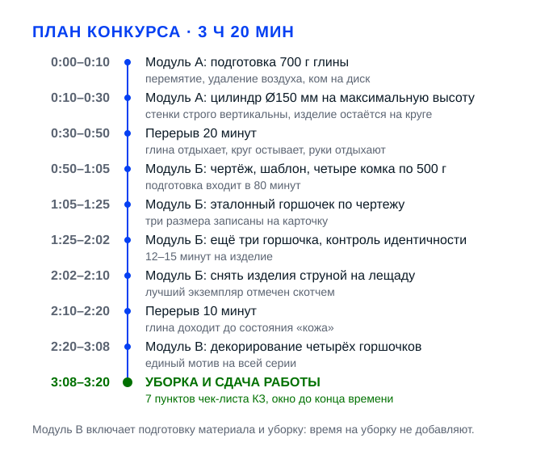
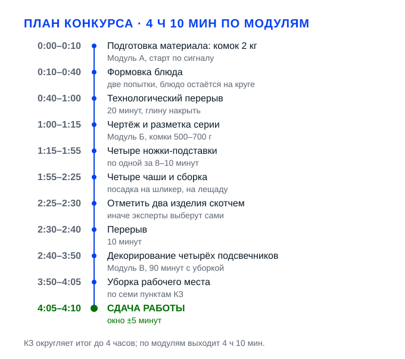
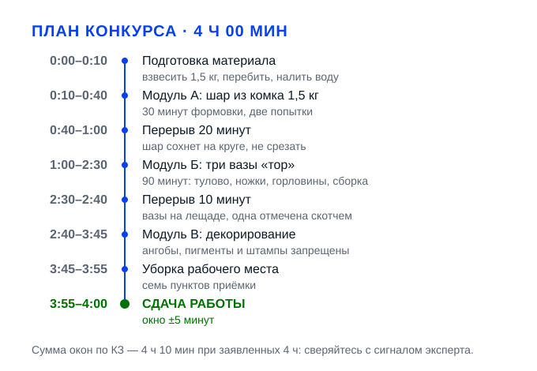

Гончарное дело (Р)
Задания ниже — официальные файлы «Абилимпикс» (источник: abilympics-russia.ru), разложенные по категориям. Решения написаны по тексту задания, регламенту и критериям оценки; в них указано, что именно проверяет эксперт.
Школьник
14–16 лет, базовый уровень заданияВыдержка из официального конкурсного задания: страницы, относящиеся к категории «Школьник» (стр. 4–7 источника).
Пошаговое решение
Разбор официального задания для категории «Школьники»: 3 часа 20 минут, три модуля и один и тот же круг. В модуле А из комка в 700 граммов нужно вывести цилиндр диаметром ровно 150 мм и максимально возможной высоты, со стенками строго перпендикулярными основанию, — на подготовку 10 минут, на формовку 20, изделие остаётся на круге. После перерыва в 20 минут модуль Б: четыре горшочка округлой формы по одному чертежу из комков по 500 граммов, 80 минут вместе с подготовкой глины, и лучший экземпляр участник отмечает скотчем сам. Ещё через 10 минут перерыва — модуль В: декорирование четырёх горшочков за 60 минут, включая подготовку материала и уборку. Главные ловушки прописаны в задании прямо: при неверном диаметре или отсутствии дна высота не оценивается, а неперенесённое с круга изделие не считается готовым. Поэтому решение построено вокруг замеров, а не вокруг «красивости».

Задача 1. Подготовить место и глину к первому комкуМодуль А · 10 минут на подготовку материала
До того как мотор круга включится на полную, должно быть готово всё, что нельзя поправить по ходу: исправный круг, разложенный инструмент, вода в двух ёмкостях и главное — глина, из которой вышел воздух. На подготовку в модуле А отведено 10 минут, и это не формальность: непромешанный комок с пузырём рвётся на вытягивании, а комок, слепленный наспех, срывает с диска вместе с двадцатью минутами работы. Здесь же решается вопрос веса: в модуле А комок ровно 700 граммов, и от того, насколько честно он отвешен, зависит, сколько сантиметров высоты вы вообще сможете вытянуть при диаметре 150 мм.
Действие 1.1. Проверить круг и разложить инструмент
Шаг 1.1.1
Начинаем не с глины, а с круга: кладём ладонь на планшайбу и покачиваем её из стороны в сторону — люфт в подшипнике на формовке превращается в биение, и стенка цилиндра уходит овалом. Осматриваем кромку диска: скол или заусенец будет цеплять ладонь и рвать основание изделия у самого низа. Продавливаем педаль до упора и отпускаем — ход должен быть плавным, без рывков, потому что на вытягивании стенки важны обороты плюс-минус двадцать, а не «включилось-выключилось». Проверяем, что круг стоит устойчиво и не «уезжает» по столу от вибрации.
Исправность оборудования — первое, что видит эксперт, когда подходит к рабочему месту, и первое, на что списывают овальный цилиндр. Биение планшайбы руками не лечится: сколько ни центруй, изделие всё равно получится с разной толщиной стенки, а на замере диаметра штангенциркулем это видно сразу. Полторы минуты проверки сохраняют двадцать минут формовки, которые в модуле А нечем заменить — вторая попытка идёт без добавления времени.
Диск вращается ровно, без стука и вертикального люфта; на кромке нет сколов; педаль держит низкие обороты, не срываясь в ноль. Если при покачивании ладонью слышен щелчок — зовите технического эксперта до старта, а не после первой сорванной стенки.
Сесть за круг, не проверив диск: половина участников теряет на этом первый комок, потому что центровка на бьющей планшайбе не держится и комок срывается на скорости. Вторая ошибка — работать на педали, которая «дёргает»: рывок оборотов на подъёме стенки рвёт её у основания.
Эксперт подходит в первые минуты и отмечает, осмотрел ли участник круг и как обращается с педалью. Дальше он смотрит на характер вращения: ровный гул без вибрации стола — признак того, что рабочее место собрано правильно.
Шаг 1.1.2
Раскладываем инструмент по правую руку в том порядке, в каком он понадобится: деревянный стек, металлическая цикля с прямой кромкой, губка, шликерная кисть, струна с двумя ручками, кронциркуль, игла-толщиномер, фен. Ничего не кладём на планшайбу и на бортик лотка — при первом же обороте инструмент улетает под круг, и вы теряете минуту на его поиски в самый неудобный момент. Воду наливаем в две ёмкости: в одной ополаскиваем руки, во второй держим чистую для смачивания.
Порядок на рабочем месте входит в оценку организации работы, и он же напрямую влияет на точность: когда стек лежит под рукой, зачистку кромки делают сразу, пока глина не подсохла, а не через четыре минуты, когда кромка уже «стекла». Две ёмкости нужны потому, что вода после ополаскивания рук несёт глину и, попадая на стенку, оставляет грубые разводы, которые потом снимают ножом вместе с толщиной.
Проверьте себя просто: не глядя, найдите рукой стек, губку и струну. Если приходится поворачиваться и искать — инструмент лежит не в рабочей зоне, переложите до включения мотора. Вода в ёмкостях чистая, тряпка под рукой сухая.
Оставить инструмент на лотке или за кругом: на вытягивании стенки любое движение в сторону ломает ритм, а ритм в гончарке — это и есть точность. Вторая ошибка — работать одной мутной водой: глина на руках превращается в абразив и стягивает тонкий слой со стенки.
Эксперт фиксирует организацию места в начале и в конце модуля: разложенный инструмент, чистый стол, отсутствие глины на полу. Это отдельный критерий, который ставят без всяких замеров.
Шаг 1.1.3
Ставим на стол гипсовую лещаду — она понадобится только в модуле Б, но место под неё определяем сразу, чтобы потом не искать сухую плоскость в спешке. Проверяем фен: включаем на средний поток, держим на расстоянии двадцати сантиметров от тыльной стороны ладони — тепло должно быть ощутимым, но не обжигающим. Розетка и провод должны быть вне зоны, куда летит шликер, иначе через сорок минут работы мокрая вилка станет отдельной проблемой.
Фен в этом задании — не удобство, а инструмент управления влажностью: в модуле А на формовку дано 20 минут, и подсушить стенку перед зачисткой приходится прямо на круге. Лещада нужна в модуле Б, где изделие обязательно переносят с круга, и если её негде поставить, изделие поедет на мокром столе и потеряет форму, а неперенесённое изделие вообще не считается готовым.
Фен греет ровно, без запаха палёной пыли, поток не «плюётся»; провод не лежит на мокром полу и не тянется через проход. Лещада сухая, чистая, стоит горизонтально — проверьте уровнем или на глаз по воде: лужица на плите не должна собираться с одного края.
Сушить изделие феном на максимальном нагреве в упор: верхний слой схватывается коркой, под ней остаётся сырая глина, и при обжиге отходит чешуя. Вторая ошибка — поставить лещаду у края стола: при переносе мокрого горшочка её задевают локтем.
Эксперт смотрит, умеет ли участник пользоваться феном именно как инструментом: короткими проходами по кругу, с расстояния, а не «в упор до трещин». Это видно по поверхности — она остаётся матовой и ровной, без светлых пятен пересушки.
Действие 1.2. Перемять глину и выгнать воздух
Шаг 1.2.1
Берём комок в руки и сжимаем: глина должна продавливаться под пальцами, но не прилипать к ладони и не оставлять на ней грязного следа. Скатываем из кусочка колбаску толщиной в палец и оборачиваем ею указательный палец — хорошая глина даёт трещины только по краям изгиба, плохая рвётся насквозь. Если комок липнет и «мажет», он переувлажнён: раскладываем его пластом на гипсовой плите на десять минут, гипс заберёт лишнюю воду.
Из переувлажнённой глины стенку толщиной восемь миллиметров не удержать: она течёт под собственным весом, и цилиндр садится на глазах, забирая главный показатель модуля — высоту. Из пересушенной глины стенка рвётся при вытягивании, и комок приходится переминать заново, уже внутри двадцати минут. Проверка на колбаску занимает полминуты и говорит о состоянии материала больше, чем любые слова наставника.
Колбаска гнётся в кольцо без глубоких разрывов; на ладони после сжатия остаётся матовый след, а не блестящая плёнка; комок держит форму шара и не расплывается в лепёшку за минуту. Если сомневаетесь — взвесьте: 700 граммов в модуле А и 500 в модуле Б, весы стоят на площадке.
Работать «как есть», не проверяя влажность: половина сорванных цилиндров на чемпионатах — это глина, которую поторопились поставить на круг. Обратная ошибка — залить комок водой «чтобы лучше шёл»: через пять минут он поплывёт, и спасти его уже нельзя.
Эксперт смотрит на руки в первые секунды: опытный участник мнёт глину уверенно, проверяет её и при необходимости откладывает на гипс. Именно по этому действию видно, работал ли человек с материалом раньше.
Шаг 1.2.2
Мнём комок спиралью: кладём его на стол, накрываем ладонями и продавливаем от себя вниз-вперёд, поворачивая комок на четверть оборота после каждого нажатия. Так глина складывается «бараньей головой» и перемешивается по всему объёму, а не только по поверхности. Тратим на это три-четыре минуты и не жалеем их: за один проход по кругу нужно продавить весь комок минимум трижды.
Спиральное перемятие выравнивает влажность по объёму — именно неравномерная влажность даёт перекос стенки, когда одна сторона цилиндра тянется легче другой. Одновременно уходит воздух, который в обжиге ведёт себя как маленький насос: пузырёк расширяется и выбивает кусок стенки или разрывает изделие изнутри. Ремонту это не подлежит — только переделка.
Комок однородный на ощупь, без холодных плотных комков внутри; на срезе, если разрезать его проволокой, видны мелкие поры без крупных раковин. Пальцы после разминания не скользят по поверхности — она стала «шёлковой», а не сальной.
Помять глину «для вида» тридцать секунд: воздуха это не убирает, и на обжиге изделие лопается по стенке. Вторая ошибка — мять на сухом столе: глина забирает пыль и мелкий мусор, который потом вылезает на поверхности белыми точками.
Эксперт следит за техникой перемятия: спираль с поворотом комка, а не бессистемное сжатие. По этому движению он делает вывод о владении подготовкой материала — отдельный критерий в модуле А.
Шаг 1.2.3
Проверяем результат проволокой: ставим комок на стол, натягиваем струну двумя руками и разрезаем его пополам одним движением, не пиля. Смотрим на срез при боковом свете: крупные тёмные точки и раковины — это воздух, и такой комок возвращается под ладони ещё на две минуты. Затем складываем половинки срезом к срезу и приминаем шов большим пальцем, чтобы разрез закрылся полностью.
Разрез — единственный способ увидеть воздух, потому что снаружи глина выглядит идеально. Пузырь диаметром пять миллиметров в стенке восьмимиллиметровой толщины — это гарантированный разрыв при обжиге, то есть ноль за изделие, на которое ушло двадцать минут формовки. Проверка занимает меньше минуты и стоит дешевле, чем переделка.
На срезе нет раковин больше булавочной головки; структура плотная, ровного цвета по всей площади. Если после складывания по шву видна тонкая линия — примните её ещё раз и прокатайте место стыка ладонью круговыми движениями.
Не проверять комок вообще, потому что «глину выдал организатор»: подготовленная глина тоже бывает с воздухом, особенно если её резали и складывали в контейнер. Вторая ошибка — разрезать комок и оставить половинки лежать до формовки: они подсыхают снаружи, и шов потом не срастается.
Эксперт может попросить показать срез или просто наблюдает, разрезал ли участник комок. В спорных случаях, когда изделие лопнуло, именно этот момент объясняет причину.
Шаг 1.2.4
Формуем из комка «купол»: скатываем шар, ставим его на стол и прижимаем ладонью сверху так, чтобы низ стал плоским и широким, а верх остался округлым. Кладём на весы и доводим вес ровно до 700 граммов — отнимаем или добавляем маленькими кусочками, приминая их в основание. Готовый комок должен быть чуть шире ладони и высотой с кулак: из такой заготовки цилиндр садится на диск без перекоса.
Вес — это высота: 700 граммов глины при диаметре 150 мм дают всего 5–7 сантиметров стенки, и каждый лишний грамм материала работает на главный показатель модуля. Плоское основание нужно для сцепления с диском: выпуклый низ прижимается только по центру, и на оборотах комок начинает «гулять». Широкая заготовка садится устойчивее узкой и не заваливается набок при первом же касании рук.
Весы показывают 700 граммов без «плюс-минус горсть»; основание плоское, комок стоит на столе и не качается, если толкнуть его пальцем. Ладонь полностью накрывает заготовку — если комок выше кулака, он слишком узкий и высокий, переформуйте.
Взять глину «на глаз»: перевес в сто граммов — это два сантиметра высоты, которые уходят из результата, а недобор даёт стенку, которую нечем вытянуть до нужного диаметра. Вторая ошибка — оставить комок в виде шара с округлым низом: он садится на диск точкой и срывается на первой же центровке.
Эксперт проверяет вес на весах, если изделие вызывает сомнение по массе, и смотрит на форму заготовки перед установкой на круг. Аккуратный «купол» читается как понимание технологии, а не как случайный кусок глины.
Действие 1.3. Посадить комок на планшайбу
Шаг 1.3.1
Протираем планшайбу насухо, затем смачиваем её водой круговыми движениями губки, не оставляя луж. Промазываем водой и низ комка — ладонью, без нажима, чтобы поверхность стала липкой, но не размокла. Ставим круг на минимальные обороты и проверяем, что диск сухой по кромке: мокрая кромка — это глина, которая через минуту окажется на ваших брюках. Воду наносим ровно, без капель на полу.
Сцепление комка с диском держится на тонкой водяной плёнке: без неё глина прилипает только точками, и на скорости двести оборотов комок уходит в сторону вместе с заготовкой. Переувлажнить плоскость тоже нельзя — комок начнёт скользить по плёнке воды, и его будет невозможно удержать руками. Ровно поэтому воду наносят губкой, а не льют из бутылки.
Проведите ладонью по диску: он влажный, но не блестит, вода не собирается каплями. Низ комка липнет к пальцам при лёгком касании. Диск при вращении на минимальных оборотах не разбрызгивает воду по сторонам.
Налить воду на диск «побольше, чтобы держалось»: комок плавает и садится с перекосом, а на центровке его выбивает из рук. Обратная ошибка — поставить комок на сухой диск: сцепления нет, и на первом же подъёме стенки заготовка проворачивается.
Эксперт смотрит на подготовку диска: смочил ли участник плоскость и низ комка. Мелочь, по которой сразу видно, садился ли человек за круг раньше или повторяет движения по памяти.
Шаг 1.3.2
Ставим комок точно в центр диска и бьём по нему ладонью — коротко, всей плоскостью, чтобы он расплющился и прилип по всей площади. Затем, не включая мотор, проворачиваем диск рукой на пол-оборота и проверяем, что комок сидит без смещения. Ладонями обжимаем основание по кругу, подтягивая глину к диску, и убираем глиняный валик, выдавленный по краю. Всё это делаем до включения мотора, на неподвижном диске.
Удар ладонью выгоняет воздух из-под комка и создаёт сплошную площадь контакта: без этого между глиной и диском остаётся воздушная подушка, и заготовка «плывёт» на оборотах. Выдавленный по краю валик опасен тем, что цепляется за руку при центровке и тянет за собой всё изделие. Проверка на проворот — самый быстрый способ поймать плохое сцепление до старта.
Комок стоит по центру, при провороте диска рукой он не смещается и не «клюёт» на одну сторону. Под ладонью нет воздуха: при нажатии глина пружинит равномерно. Валик по краю снят, основание плавно переходит в плоскость диска.
Поставить комок «примерно в центр» и сразу включить мотор: на первой же секунде он уходит в сторону, и вы тратите силы на борьбу вместо центровки. Вторая ошибка — прилепить комок, не убрав валик: на скорости он наматывается на руку и срывает заготовку.
Эксперт наблюдает посадку комка — это первый технический элемент, который он видит, и по нему оценивает культуру работы: короткий уверенный удар, а не долгое «пристраивание» глины.
Шаг 1.3.3
Включаем мотор на минимальные обороты и смотрим на комок сбоку, на уровне диска: если он «кивает», сцепление неровное, и комок надо пересадить, пока он целый. Прижимаем ладони по бокам и даём диску два-три оборота, чтобы почувствовать, в какую сторону тянет. Останавливаем круг и только потом убираем руки — на ходу глина вырывается из ладоней рывком.
Неровно посаженный комок нельзя отцентровать: руки будут бороться с ним всё время, а на вытягивании стенки это даёт разную толщину по сторонам. Проверка на малых оборотах безопасна и занимает полминуты, тогда как пересадка комка после пяти минут центровки стоит и времени, и сил. Останавливать круг перед тем, как убрать руки, — базовое правило, за нарушение которого снимают за технику безопасности.
На малых оборотах верх комка описывает ровный круг без вертикального качания. Боковые стенки заготовки одинаковой высоты. Если видно биение больше двух миллиметров — пересаживайте, пока не поздно. Биение — повод пересадить комок, а не «доцентровать» его силой.
Начать центровку на биении и «доцентровать» силой: комок выбивает из рук, и он падает на лоток. Вторая ошибка — убрать руки с вращающегося комка: глина цепляется за ладонь и выворачивает заготовку. Оба случая стоят одного комка и пяти минут, которых потом не хватит.
Эксперт отмечает, останавливает ли участник круг перед сменой положения рук. Это пункт техники безопасности, который в гончарном деле проверяют на каждом модуле.
Задача 2. Отцентровать комок и вывести цилиндр 150 ммМодуль А · 20 минут формовки
Ядро первого модуля: из комка в 700 граммов нужно получить цилиндр диаметром ровно 150 мм и максимально возможной высоты, со стенками строго перпендикулярными основанию. Здесь работает жёсткая арифметика материала: семьсот граммов при таком диаметре дают всего пять-семь сантиметров стенки, поэтому каждый миллиметр толщины — это миллиметр высоты, а каждый лишний миллиметр диаметра ломает результат целиком. В особых указаниях задания сказано прямо: если диаметр не соответствует заданному или у изделия нет дна, высота не оценивается вообще. Значит, порядок работы такой: сначала устойчивая центровка, потом честное дно, потом стенка, и только в конце — калибровка до 150.
Действие 2.1. Поставить комок в центр
Шаг 2.1.1
Садимся вплотную к кругу, колени под лотком, локти прижаты к бёдрам — руки должны работать как продолжение корпуса, а не висеть в воздухе. Ставим обороты на средне-высокие и смачиваем ладони, но не льём воду на комок. Правой рукой охватываем заготовку сбоку, левую кладём сверху и прижимаем ладонью, перенося вес корпуса вперёд, а не усилием плеч. Плечи расслаблены, дышим ровно, не задерживая дыхание на прижиме.
Центровка держится не силой рук, а жёсткостью всей конструкции «корпус — локоть — кисть»: если локти висят, комок выбивает из ладоней, и вместо конуса получается бесформенный блин. Высокие обороты нужны, чтобы глина успевала «обтекать» ладонь: на малых оборотах её приходится продавливать, и центр уходит. Вода только на руках — иначе комок размягчается и перестаёт держать форму.
Круг гудит ровно, стол не вибрирует, комок не бьёт по ладоням. Если при прижатии ладони чувствуется толчок раз в оборот — комок сидит неровно, остановите круг и пересадите его, пока он ещё целый. Толчок под ладонью — признак перекоса посадки, а не силы прижима.
Центровать на вытянутых руках или сидя далеко от круга: силы уходят в плечи, а комок уходит в сторону. Вторая ошибка — лить воду на заготовку «чтобы легче шло»: через минуту глина поплывёт, и центровать будет нечего.
Эксперт смотрит на посадку: прижатые локти, прямая спина, вес корпуса над кругом. По этому силуэту он за десять секунд понимает уровень подготовки участника.
Шаг 2.1.2
Начинаем «конус»: ладонями, смоченными водой, обжимаем комок от основания к верху и одновременно тянем его вверх, собирая в узкий конус, затем прижимаем вниз и разводим в широкий. Повторяем трижды: вверх — вниз, вверх — вниз, каждый проход по пять-семь секунд, не отпуская комок полностью. Давление распределяем так, чтобы глина шла вверх по спирали, а не выворачивалась наружу.
Движение «вверх-вниз» — это единственный способ поймать ось вращения: при подъёме видно, куда уходит центр, при опускании он возвращается. Три прохода выравнивают плотность по всему объёму, и дальше стенка тянется одинаково с любой стороны. Без этого этапа на вытягивании получается «восьмёрка» — овальный цилиндр с разной толщиной стенки, и диаметр 150 мм в разных направлениях будет разным.
После третьего прохода верх комка описывает ровную окружность, без качания из стороны в сторону. Боковая поверхность гладкая, без спиральных складок. Комок сидит плотно, при лёгком нажатии пальцем не смещается по диску.
Один проход и сразу вскрытие: центр «пойман» только на поверхности, и на глубине десять сантиметров ось уходит. Вторая ошибка — давить на комок, не поднимая его: глина расплющивается в лепёшку, и высоты из неё уже не вытянуть.
Эксперт считает проходы «конуса» и смотрит, насколько ритмично они сделаны. Рваный темп с паузами читается как неуверенность и обычно заканчивается овальным цилиндром.
Шаг 2.1.3
Проверяем центровку иглой: на малых оборотах касаемся кончиком иглы верха комка и ведём к краю — игла должна оставить ровную окружность, а на самом верху остаться точка-«соска». Затем прикладываем палец к боковой поверхности и держим две-три секунды: если палец подпрыгивает в такт обороту, биение осталось. Снимаем лишнюю воду с поверхности ладонью и переходим к вскрытию только после того, как биение ушло.
Игла показывает то, что не видит глаз: разницу в два миллиметра на вращении не заметно, а на стенке она превращается в разную толщину и перекос кромки. «Соска» — это метка оси, по ней удобно проверять себя весь модуль: пока точка стоит на месте, изделие круглое. Проверка занимает полминуты и сохраняет все двадцать минут формовки.
Окружность от иглы замкнутая и ровная, «соска» не смещается при вращении, палец на боковой стенке не чувствует толчков. Если биение осталось — ещё один проход «конуса», а не попытка вскрыть и «выровнять по ходу».
Пропустить проверку и начать вскрытие на неотцентрованном комке: отверстие уходит в сторону, и дно получается клином — тонкое с одного края, толстое с другого. На осмотре это видно сразу, а исправить уже нельзя, потому что дно не переделывают.
Эксперт может подойти и положить палец на вращающееся изделие — этот приём он использует и при своей проверке. Если участник сам так делает, это читается как владение методом контроля, а не как случайный набор движений.
Действие 2.2. Вскрыть комок и сформировать дно
Шаг 2.2.1
Смачиваем большой палец и ставим его точно в «соску», продавливая вниз по оси вращения до глубины примерно десять миллиметров от основания — то есть до уровня будущего дна. Второй палец держим снаружи напротив, чтобы стенка не выпячивалась. Отверстие сначала делаем узким, шириной в два пальца, и только потом расширяем. Глубину сверяем с толщиномером, а не на глаз: палец ошибается на два миллиметра.
Глубина вскрытия задаёт толщину дна, а дно — это несущая конструкция всего цилиндра: слишком тонкое продавится под весом стенки, слишком толстое заберёт глину, из которой считается высота. Десять миллиметров на диаметр 150 мм — рабочий минимум, при котором изделие переживает сушку и обжиг. Узкое стартовое отверстие нужно, чтобы не рвать стенку сразу: её расширяют постепенно, а не одним движением.
Отверстие стоит по центру, «соска» не сместилась, стенка снаружи не выпятилась бугром. Палец, опущенный в отверстие, чувствует ровное дно без «пупка» и без ступеньки. Толщиномер, опущенный у стенки, показывает десять миллиметров.
Продавить отверстие до самого диска: дно отсутствует, и по особым указаниям задания высота изделия не оценивается вовсе — работа обнуляется, сколько бы стенки вы ни вытянули. Вторая ошибка — вскрывать на полной скорости: палец срывается, и в дне остаётся рваная раковина.
Эксперт проверяет дно толщиномером или иглой, когда изделие уже сформировано. Отсутствие дна он фиксирует отдельно, и это единственная ошибка в модуле, которая обнуляет высоту целиком.
Шаг 2.2.2
Расширяем отверстие двумя пальцами изнутри, ведя их от центра к стенке по спирали, а снаружи поддерживаем ладонью. Доводим внутренний диаметр до 60–70 мм — примерно до половины будущего диаметра изделия. Дно выравниваем подушечками пальцев, продавливая глину от центра к краю, и убираем губкой воду, которая собралась в углублении. Ведём пальцы по спирали, а не по кругу: так стенка не истончается в одном месте.
Расширение в два приёма нужно для равномерной толщины: если раскрыть сразу до стенки, глина уйдёт из дна в борта, и дно станет тонким у края — именно там оно и продавливается. Промежуточные 60–70 мм дают возможность выровнять дно, пока до стенки ещё далеко. Вода в углублении размягчает дно и делает его рыхлым, поэтому её убирают губкой, а не оставляют «досохнуть».
Дно ровное по всей площади, одинаковой толщины у центра и у края; при нажатии пальцем пружинит, а не прогибается. Воды в углублении нет. Внутренняя поверхность без спиральных валиков от пальцев. Внутри — гладкая чаша без ступеньки у перехода в стенку.
Раскрыть отверстие одним движением до стенки: у края дна образуется тонкая зона, которая садится под весом стенки. Вторая ошибка — оставить воду в чаше: дно размокает, и при подъёме стенки оно проваливается.
Эксперт смотрит на профиль дна при боковом свете: ровная линия без ступеньки между дном и стенкой. Ступенька — признак того, что дно не выровняли, и на обжиге по ней идёт трещина.
Шаг 2.2.3
Проверяем дно иглой-толщиномером в трёх точках: у центра, на середине радиуса и у самой стенки — все три замера должны попадать в 9–10 мм. Если у стенки меньше восьми, глину подтягиваем из толщи дна пальцем снаружи и приминаем. Слегка смачиваем внутреннюю поверхность губкой, чтобы закрыть поры, и снимаем лишнюю воду. Замеры записываем на карточку, чтобы потом сравнить с финальными.
Толщиномер — единственный инструмент, который говорит правду о дне: на глаз разница в два миллиметра не видна, а на обжиге именно тонкое место даёт трещину-«паутинку». Проверка в трёх точках ловит перекос, который появляется после расширения: глина уходит от центра к краю, и дно становится клином. Для изделия диаметром 150 мм десять миллиметров — норма, при которой дно держит стенку и не забирает лишний материал.
Все три замера в пределах 9–10 мм, разница между ними не больше миллиметра. Дно на просвет не даёт светлого пятна. При лёгком нажатии пальцем изнутри дно не прогибается и не «хлюпает». Толщиномер держим вертикально, без наклона: наклон завышает замер на миллиметр.
Замерить только центр: у стенки дно обычно тоньше всего, и именно там появляется трещина при сушке. Вторая ошибка — «утолщить на всякий случай» до 15 мм: на дно уходит материал, и высота падает на полтора сантиметра.
Эксперт при оценке технических параметров режет выбранное изделие и смотрит толщину дна и стенки по сечению. Ровное дно в десять миллиметров — эталон, к которому он сравнивает работу.
Действие 2.3. Вытянуть и откалибровать стенку
Шаг 2.3.1
Первый подъём делаем «щипком»: снаружи стенку охватываем ладонью у самого основания, изнутри прижимаем два пальца, и ведём эту пару снизу вверх одним плавным движением на два-три сантиметра, оставляя внизу утолщение. Смачиваем руки, а не изделие, и делаем три прохода по кругу, каждый раз начиная от дна. Кромку не тянем — она должна оставаться плотной.
Стенка поднимается только за счёт глины, взятой у основания: если тянуть за верхний край, он истончается и рвётся, а внизу остаётся толстая «пятка», из которой уже ничего не вытянуть. Три прохода дают равномерное наращивание высоты и одновременно уплотняют глину, выгоняя остатки воздуха к поверхности. Работа от дна к верху — базовый принцип формовки, и эксперт видит его по ритму рук.
Высота стенки растёт одинаково по всему кругу; на просвет от лампы стенка просвечивает равномерно, без светлых пятен. Кромка остаётся толщиной в палец, не «звенит» под пальцем. Внизу у основания сохраняется утолщение, из которого пойдёт следующий подъём.
Тянуть за кромку: верх истончается до миллиметра, и на втором подъёме стенка рвётся по кругу. Вторая ошибка — вести щипок сверху вниз: глина заворачивается внутрь и образует складку, которая при обжиге расходится.
Эксперт смотрит на направление движения рук: снизу вверх, от дна. Движение сверху вниз — самый частый признак новичка, и по нему сразу видно, что стенку придётся спасать.
Шаг 2.3.2
Второй и третий подъёмы делаем тем же щипком, но на меньших оборотах и с меньшим количеством воды: глина уже влажная, лишняя вода только размягчит стенку. Доводим высоту до пяти-шести сантиметров и толщину стенки до семи-восьми миллиметров. После каждого прохода проходим губкой по внутренней поверхности, снимая воду и выравнивая валики. Губку держим одной рукой, второй страхуем стенку от провисания.
Семь-восемь миллиметров — та толщина, при которой цилиндр диаметром 150 мм ещё держит вертикальную стенку и при этом не съедает высоту. Тоньше — стенка садится под собственным весом и уходит «бочкой»; толще — теряются сантиметры, за которые идёт борьба в этом модуле. Меньше воды на втором подъёме нужно потому, что размягчённая стенка не держит форму: она провисает между пальцами.
Толщиномер у кромки показывает 7–8 мм; высота одинаковая по всему кругу с точностью до двух миллиметров; стенка не просвечивает насквозь. Кромка ровная, без «волны» и без заусенцев от пальцев. Кромка не «звенит» под пальцем и не тянется за ним.
Довести стенку до четырёх миллиметров «чтобы выше было»: она садится на глазах, и изделие теряет устойчивость. Обратная ошибка — оставить стенку в двенадцать миллиметров: высота падает на сантиметр-полтора без всякой пользы.
Эксперт замеряет толщину стенки по срезу, когда изделие разрезают. Равномерность по высоте для него важнее абсолютной цифры: разница между верхом и низом в три миллиметра читается как перекос формовки.
Шаг 2.3.3
Расширяем изделие до 150 мм: изнутри ведём пальцами от центра к стенке, снаружи поддерживаем ладонью, и делаем это на малых оборотах, по два-три миллиметра за проход. Каждый проход заканчиваем замером кронциркулем в трёх направлениях — по часовой стрелке через сто двадцать градусов. Останавливаемся на 149–150 мм и больше не расширяем. Между проходами останавливаем круг и снимаем лишнюю воду с ладоней.
Диаметр в этом модуле — жёсткая граница: заданные 150 мм, и по особым указаниям при несоответствии диаметру высота не оценивается. При этом материал склонен «раздаваться» под пальцами, и легко уйти на 155–160 мм, потеряв сразу и высоту, и баллы. Замер в трёх направлениях нужен потому, что изделие почти всегда чуть овальное, и по одному замеру можно принять овал за круг.
Все три замера кронциркулем дают 149–150 мм, расхождение между направлениями не больше одного миллиметра. Кромка остаётся ровной окружностью, без «уха», выдавленного пальцем. При взгляде сверху изделие читается как круг, а не как эллипс.
Расширить «до 160, чтобы наверняка»: диаметр не соответствует заданному, и высота не оценивается вовсе. Вторая, не менее частая ошибка — не замерять вообще и обнаружить овал уже на приёмке, когда исправлять нечем: глина отдохнула и села.
Эксперт при оценке ставит кронциркуль или штангенциркуль на изделие в нескольких направлениях. Он смотрит не только на цифру, но и на разброс: овал 148×152 он считает несоответствием диаметру.
Шаг 2.3.4
Проверяем вертикальность: прикладываем ребро металлической линейки или угольник к стенке снаружи на просвет — между линейкой и стенкой не должно быть щели. Если стенка выгнулась «бочкой», прижимаем её ладонью снаружи на малых оборотах и одновременно поддерживаем изнутри, возвращая перпендикуляр. Кромку выравниваем, приминая влажной губкой. Работаем на малых оборотах, чтобы не смять кромку ладонью.
Требование задания сформулировано буквально: стенки строго перпендикулярны основанию. Именно за это дают основные баллы модуля А, потому что перпендикулярная стенка — признак того, что мастер контролирует профиль, а не «лепит на глаз». «Бочка» же означает разную толщину по высоте и лишний материал в середине, который забрал высоту.
Просвета между линейкой и стенкой нет ни в одном из четырёх положений; кромка лежит в плоскости, параллельной диску; верхний диаметр равен нижнему. На просвет от лампы стенка даёт ровную вертикальную тень без изгиба.
Оставить «бочку» и надеяться, что эксперт не заметит: перпендикулярность проверяют линейкой, и это первое, что смотрят. Вторая ошибка — выправлять стенку силой на высоких оборотах: глина сминается, и на поверхности остаются вмятины от пальцев.
Эксперт прикладывает линейку к стенке и смотрит на просвет — этот замер он делает на каждой работе. Вертикальная стенка и ровная кромка дают ему основание ставить высшую оценку за технику формовки.
Действие 2.4. Зачистить, подсушить и оставить на круге
Шаг 2.4.1
Убираем «юбку» — глиняный валик у основания: включаем минимальные обороты и ведём деревянный стек плоской стороной к диску, под углом сорок пять градусов, от стенки наружу. Движение короткое, в одну сторону, без нажима в стенку. После прохода снимаем стружку с стекa пальцем и повторяем, пока основание не станет чистым и ровным. Стружку снимаем со стека после каждого прохода, иначе она снова прилипает.
Юбка — это глина, выдавленная вниз при расширении: она не держится за изделие и при сушке отваливается куском, оставляя рваный край у самого дна. Кроме того, валик мешает поставить изделие ровно, если его будут снимать с круга. Зачистка стеком входит в перечень операций задания, и её результат виден на боковом свете.
Основание чистое, переход от стенки к диску — тонкая ровная линия без налипшей глины. При проведении пальцем по низу изделия нет ступеньки и нет свободных комочков. Срез гладкий, без рваных волокон. На ощупь низ гладкий, без наплывов и без крошек глины.
Срезать валик, упираясь стеком в стенку: прорезается борозда, и на обжиге по ней идёт трещина. Вторая ошибка — зачищать на высоких оборотах: стек «клюёт» и вырывает куски вместе с основанием. Оба дефекта видны на готовом изделии и не исправляются после обжига.
Эксперт осматривает основание изделия, когда берёт его в руки. Чистый низ без юбки — признак аккуратности, отдельного критерия в оценке модуля А. Он смотрит именно на низ изделия, а не на стенку.
Шаг 2.4.2
Проходим стенку циклей: держим её почти плашмя к поверхности и на малых оборотах снимаем тончайшую стружку сверху вниз, не оставляя граней. Затем влажной губкой в один проход закрываем поры и снимаем разводы, а кромку приминаем губкой, сформировав фаску шириной один-два миллиметра. Внутреннюю поверхность проходим губкой так же, без воды в углублении.
Цикля выравнивает микрорельеф, который на обжиге проступает и становится виден на глазурованной поверхности: любая борозда после глазури читается как царапина. Фаска на кромке нужна, чтобы кромка не скалывалась при переносе и обжиге — тонкий край обожжённой глины крошится от любого касания. Губка закрывает поры, и поверхность становится ровной по цвету.
На боковом свете поверхность даёт ровный блик без полос и вмятин; палец скользит по стенке без зацепов. Кромка одинаковой толщины по всему кругу, фаска снята ровно. Внутри нет скопления воды и глиняной кашицы.
Тереть циклей «до блеска» на сухой стенке: снимается лишний слой, стенка истончается неравномерно. Вторая ошибка — оставить кромку острой, как нож: при снятии с круга она скалывается, и изделие получает скол на самом видном месте.
Эксперт проводит пальцем по кромке и стенке — так он проверяет и ровность, и наличие заусенцев. Острая кромка без фаски считается дефектом формовки. Заусенец на кромке он чувствует сразу, без всякой линейки.
Шаг 2.4.3
Подсушиваем феном на среднем потоке, держа его в двадцати сантиметрах и медленно обводя изделие по кругу, по двадцать-тридцать секунд с каждой стороны. Досушиваем до состояния «кожа»: поверхность светлеет и перестаёт липнуть к пальцу, но глина ещё продавливается ногтем. Затем делаем финальные замеры — диаметр, высота, толщина стенки — и оставляем изделие на круге, не снимая.
В модуле А по условиям изделие должно остаться на гончарном круге — это прописано в результате модуля, и снятое изделие здесь не засчитывается, в отличие от модуля Б. Подсушка до «кожи» нужна, чтобы стенка перестала плыть и замеры были честными: на мокрой глине диаметр «гуляет» на два-три миллиметра. Финальные цифры стоит проговорить про себя, потому что они и есть результат модуля.
Диаметр 149–150 мм в трёх направлениях, высота одинаковая по кругу, стенка перпендикулярна, дно целое. Поверхность матовая, палец не прилипает, при нажатии ногтем остаётся вмятина, а не блестящее пятно. Изделие стоит на круге по центру, мотор выключен.
Снять изделие с круга «чтобы показать»: по условиям модуля А оно должно остаться на круге, и снятое теряет статус выполненной работы. Вторая ошибка — пересушить феном до светлой корки: на такой поверхности при декорировании не держится ни шликер, ни ангоб.
Эксперт подходит к концу модуля и замеряет изделие на круге, не снимая его. Он смотрит диаметр, высоту, вертикальность и состояние кромки — четыре параметра, из которых складывается оценка модуля А.
Задача 3. Сделать серию из четырёх горшочков по чертежуМодуль Б · 80 минут, включая подготовку материала
Второй модуль — про тираж, а не про один удачный предмет: четыре горшочка округлой формы, сделанные по одному чертежу, из комков по 500 граммов, за 80 минут вместе с подготовкой глины. Оценивают идентичность серии, то есть совпадение высоты, диаметров и профиля у всех четырёх, и отдельно — аккуратность исполнения. По окончании работы участник сам выбирает и отмечает скотчем один лучший экземпляр: если метки нет, эксперты берут изделие на своё усмотрение, и это может оказаться самый слабый горшок из четырёх. Плюс жёсткое правило: изделие, не перенесённое с круга на гипсовую лещаду, не считается готовым вообще.
Действие 3.1. Разобрать чертёж и собрать шаблон
Шаг 3.1.1
Кладём чертёж на стол и выписываем на карточку все размеры, которые на нём есть: общую высоту, диаметр по венчику, диаметр по самой широкой части тулова, диаметр дна и толщину стенки, если она указана. Отдельно отмечаем радиусы скругления — округлая форма это и есть плавный переход от дна к тулову и от тулова к горлу. Если какого-то размера на чертеже нет, достраиваем его пропорцией от высоты и записываем рядом с пометкой «расчёт».
Идентичность серии проверяют по размерам, а не по ощущению: эксперт ставит четыре горшочка рядом и замеряет высоту, венчик, тулово и дно. Если вы держите в голове «примерно такой формы», к третьему изделию профиль уезжает, и разница в пять миллиметров видна без линейки. Выписанные цифры — это единственный способ повторить форму четыре раза подряд за 80 минут.
На карточке пять-шесть чисел, и каждое привязано к своему месту на чертеже. Вы можете, не подглядывая, сказать, какая часть горшочка самая широкая и на какой высоте от дна находится этот максимум. Если не можете — чертёж не разобран, вернитесь к нему.
Начать лепить «по памяти о чертеже»: первые два горшка ещё похожи, третий и четвёртый уже другие, и вся серия теряет идентичность. Вторая ошибка — взять размеры с экрана или с уменьшенной копии, не проверив масштаб: чертёж на площадке даётся в 1:1, и любые пересчёты «на глаз» дают ошибку в сантиметр.
Эксперт видит, сверялся ли участник с чертежом по ходу работы или один раз взглянул в начале. Работа «по чертежу» — отдельный критерий модуля Б, и он оценивается по факту обращений к документу.
Шаг 3.1.2
Вырезаем профиль-шаблон: берём жесть от консервной банки, плотный картон или полоску оргстекла и переносим на неё половину контура горшочка — от оси до внешней стенки, с линией дна и линией венчика. Вырезаем по контуру и зачищаем кромку, чтобы не цепляла глину. Рядом делаем вторую мерку — полоску картона с отметками высоты и диаметров, её удобно прикладывать к изделию одной рукой.
Шаблон превращает чертёж в измерительный инструмент: его прикладывают к вращающемуся изделию на малых оборотах и сразу видят, где профиль ушёл. Без него форму приходится сравнивать глазами, а глаз на гончарке ошибается на три-четыре миллиметра именно там, где это заметно — на переходе от тулова к горлу. Две мерки нужны потому, что шаблон проверяет контур, а полоска — габариты.
Шаблон совпадает с чертежом по всем контрольным точкам: приложите его к листу и посмотрите на просвет — расхождений быть не должно. Кромка шаблона гладкая, не царапает руку. Полоска-мерка подписана, чтобы не перепутать высоту с диаметром.
Вырезать шаблон «на глаз» по памяти: он будет повторять не чертёж, а представление о нём, и вся серия собьётся одинаково — красиво, но не по заданию. Вторая ошибка — шаблон из мягкого картона, который размокает от глины к третьему изделию.
Эксперт обращает внимание на наличие измерительных приспособлений на столе: шаблон, кронциркуль, линейка. Это читается как понимание того, что тираж — работа по документу.
Шаг 3.1.3
Раскладываем 80 минут по операциям и записываем на карточке: пятнадцать минут на подготовку четырёх комков по 500 граммов, двадцать на эталонный горшочек, по двенадцать на каждый следующий, шесть на снятие и маркировку, остальное — резерв. Комки взвешиваем по одному, с точностью до пяти граммов, и держим накрытыми влажной тканью, чтобы не подсыхали, пока вы работаете с первым.
Восемьдесят минут на четыре изделия — это примерно восемнадцать минут на горшок со всей подготовкой, и без плана первые два съедают половину времени. Резерв нужен на реальную жизнь: сорванную стенку, подсохшую кромку, примерку шаблона. Разница в весе комков в десять граммов — это разница в высоте около двух миллиметров, а на четырёх изделиях она читается как разная серия.
На карточке расписание с временами, и вы знаете, в какой момент должны быть готовы первый и третий горшки. Все четыре комка взвешены и подписаны, лежат под тканью, поверхность ткани влажная, но вода не капает.
Начать с глины и «потом разберёмся со временем»: к сороковой минуте сделаны два горшка, и дальше участник гонит, теряя форму. Вторая ошибка — держать комки открытыми: к третьему изделию глина подсохла, стенка рвётся, а времени на перемятие уже нет.
Эксперт следит за темпом и за тем, сколько изделий готово к контрольным точкам времени. Ровный график читается как профессиональная организация работы — это отдельный критерий модуля Б.
Действие 3.2. Вывести эталон по чертежу
Шаг 3.2.1
Берём первый комок в 500 граммов, переминаем два-три минуты и формуем «купол» с плоским основанием, как в модуле А. Сажаем на смоченный диск, включаем средние обороты и делаем два прохода «конуса» вместо трёх: комок меньше, и лишние проходы съедают время, которое нужно на четыре изделия. Проверяем центровку иглой и переходим к вскрытию. Перемятие делаем на сухом столе, без воды: лишняя влага здесь только мешает.
Подготовка комка в модуле Б входит в общие 80 минут, и на неё уходит почти четверть времени — поэтому приёмы делаются короче, но не отменяются: непромешанная глина рвётся на втором подъёме, и переделка одного горшка стоит тринадцати минут. Два прохода «конуса» для 500 граммов достаточно, потому что объём меньше и ось ловится быстрее. Центровка иглой остаётся обязательной: круглое изделие — база для идентичности.
Комок сидит по центру, биения нет, «соска» на месте после двух проходов. Вес — 500 граммов, основание плоское. Круг вращается ровно, комок не «кивает» на малых оборотах. Если комок «кивает», пересаживаем его сразу, не дожидаясь вскрытия и потери времени.
Пропустить перемятие ради экономии двух минут: пузырь в стенке ломает изделие на обжиге, и вся серия остаётся из трёх горшков. Вторая ошибка — центровать «на глаз» и начать вскрытие: овальный горшок не совпадёт с шаблоном ни по одному размеру.
Эксперт смотрит на скорость и уверенность подготовительных движений. В модуле Б темп важнее идеальности: он оценивает, умеет ли участник работать серийно, а не только делать один показательный предмет.
Шаг 3.2.2
Вскрываем комок, формируем дно толщиной семь-восемь миллиметров и поднимаем стенку до высоты, примерно на два сантиметра меньшей, чем высота по чертежу. Дальше работаем профилем: изнутри пальцами расширяем тулово в нижней трети, доводя его до диаметра по чертежу, затем сводим стенку к горлу, оставляя венчик чуть уже тулова. Губу формируем мягким отгибом наружу на три-четыре миллиметра, приминая её влажной губкой.
Округлая форма начинается с расширения в нижней трети: если раздувать тулово по центру, горшок читается как шар с горлом, а не как горшок по чертежу. Стенка сначала выводится чуть ниже нужной высоты, потому что при расширении тулова она просядет на полтора-два сантиметра — это нормальная усадка профиля. Губа — самый заметный элемент при сравнении серии: именно по ней видно, делал ли человек четыре разных горшка или один тираж.
Прикладываем шаблон к вращающемуся изделию на малых оборотах: контур совпадает в трёх точках — у дна, в самом широком месте тулова и под венчиком. Высота пока на два сантиметра меньше чертёжной, это ожидаемо. Губа ровная по кругу, одинаковой толщины, без зализанных вмятин.
Раздуть тулово в середине: форма получается шарообразной, шаблон не ложится, и горшок приходится переделывать — минус тринадцать минут из восьмидесяти. Вторая ошибка — сделать губу слишком тонкой: при переносе на лещаду она сминается, и изделие теряет вид, даже если размеры в норме.
Эксперт сравнивает профиль с чертежом, прикладывая к изделию линейку или шаблон. Совпадение линии тулова и характера губы он считает главным признаком работы по техническому заданию.
Шаг 3.2.3
Снимаем с эталона четыре размера кронциркулем и линейкой: высоту от плоскости стола до кромки, диаметр по венчику, диаметр по самому широкому месту тулова и диаметр дна. Записываем их на карточку рядом с чертёжными и отдельно отмечаем отклонение, если оно есть. Дальше эта карточка лежит перед глазами, и все три следующих горшка сверяются именно с этими числами, а не с чертежом.
Чертёж задаёт идеал, а эталон задаёт реальность: глина на площадке может дать усадку, и серия должна совпадать между собой, а не с абстрактной линией на бумаге. Записанные четыре числа — это и есть критерий идентичности, по которому эксперт ставит четыре горшка рядом. Отклонение по высоте больше двух миллиметров уже видно на глаз, и именно его ловят до того, как сделан второй горшок.
Четыре числа записаны, и разница с чертежом не превышает трёх миллиметров по каждому размеру. Если эталон вышел за пределы, его проще переделать сейчас, чем повторять ошибку трижды. Карточка лежит на столе так, чтобы её было видно, не отрывая рук от круга.
Не мерить эталон вообще: тогда каждый следующий горшок сверяется «с предыдущим», и ошибка накапливается — четвёртый отличается от первого на сантиметр. Вторая ошибка — замерить и не записать: к третьему изделию числа забываются, особенно под нагрузкой.
Эксперт при оценке серии ставит горшки в ряд и замеряет все четыре. Эталон, снятый по размерам, — это то, что отличает тираж от четырёх случайных работ.
Действие 3.3. Повторить форму ещё три раза
Шаг 3.3.1
Работаем по одному и тому же порядку: перемятие, посадка, два прохода «конуса», вскрытие, дно семь-восемь миллиметров, подъём стенки в два щипка, расширение тулова, сведение к горлу, губа. Считаем проходы вслух или про себя: их должно быть столько же, сколько на эталоне. Ничего не меняем «для улучшения» — даже если кажется, что так будет красивее. Порядок операций записан на карточке, и отступать от него нельзя.
Идентичность держится не на глазомере, а на повторяемости операций: одинаковое число подъёмов даёт одинаковую толщину, одинаковое расширение — одинаковый диаметр. Любая импровизация на третьем изделии — лишний проход, более смелый раздув — сразу выделяет его из ряда, и серия теряет главный балл модуля. Счёт проходов — самый простой способ не сбиться, когда время поджимает.
К концу каждого горшка высота и диаметры совпадают с эталонными в пределах двух миллиметров. Профиль ложится под шаблон так же, как у эталона. На глаз четыре изделия читаются как один тираж, а не как четыре варианта.
Улучшать форму по ходу: «сделаю тулово пошире, так красивее» — и третий горшок выбивается из серии, забирая баллы за идентичность у всех четырёх. Вторая ошибка — гнать темп и пропускать замеры: отклонение в три миллиметра накапливается к четвёртому изделию.
Эксперт наблюдает именно за повторяемостью движений: одинаковый ритм, одинаковое число проходов. Это и есть серийная работа, которую оценивает модуль Б.
Шаг 3.3.2
После каждого горшка делаем замер, не снимая его с круга: кронциркуль на венчик, на тулово и на дно, линейка — на высоту от диска. Сверяем с карточкой сразу, пока изделие можно поправить: тулово расширить пальцами изнутри, высоту добрать одним щипком, венчик поджать губкой. Правки вносим до подсушки, потом глина уже не тянется. Замер делаем на малых оборотах, не касаясь кромки инструментом.
Правка на круге занимает минуту, правка после снятия — невозможна: подсушенный горшок только треснет, если его тянуть. Замер после каждого изделия нужен потому, что ошибка имеет свойство повторяться: если второй горшок вышел на четыре миллиметра ниже, третий и четвёртый выйдут такими же, и серия целиком уйдёт из допуска. Сверка с карточкой превращает контроль в привычку, а не в разовую проверку.
Все четыре замера укладываются в два миллиметра от эталонных; расхождение видно только на инструменте, но не на глаз. Если правили — после правки замер повторён, а не оставлен «на веру». Повторный замер после правки обязателен: глина садится за пару минут.
Замерять только готовую серию в конце: тогда поздно, четыре горшка уже разные, и исправлять нечего. Вторая ошибка — «поправить» подсушенное изделие силой: на стенке появляются заломы, которые при обжиге превращаются в трещины.
Эксперт смотрит, пользуется ли участник кронциркулем по ходу тиража. Инструмент в руках между изделиями — прямой признак того, что серия делается осознанно.
Шаг 3.3.3
Отдельно контролируем губу и венчик: замеряем толщину кромки у каждого горшка — она должна быть четыре-пять миллиметров, одинаково по всему кругу. Отгиб делаем одним и тем же движением: большой палец изнутри, указательный снаружи, два прохода по кругу на малых оборотах. Влажной губкой проходим кромку, снимая вмятины от пальцев. Нажим одинаковый по всему кругу, иначе кромка «гуляет» на миллиметр.
Венчик — та часть, которую видно на любом сравнении: четыре горшка ставят рядом, и разная толщина кромки читается как разная форма, даже если тулово совпадает. Четыре-пять миллиметров — толщина, при которой кромка держится при переносе и не скалывается на обжиге. Одинаковый отгиб важен ещё и потому, что по нему глаз оценивает симметрию всего изделия.
Толщина кромки у всех четырёх одинаковая, четыре-пять миллиметров, и не «гуляет» по кругу больше миллиметра. Отгиб ровный, без заломов и без «волны». Венчик не зализан губкой до состояния тряпочки — кромка упругая.
Сделать губу на последнем горшке тоньше, чем на первых: серия сразу распадается на «до» и «после». Вторая ошибка — разминать кромку губкой слишком долго: она теряет плотность, и при переносе на лещаду венчик садится.
Эксперт проводит пальцем по кромке всех четырёх изделий подряд — так разница в толщине чувствуется мгновенно. Ровный венчик он считает признаком аккуратности тиража.
Шаг 3.3.4
Держим темп двенадцать-пятнадцать минут на изделие и проверяем себя по карточке: если к шестидесятой минуте готовы три горшка, график в норме, если два — сокращаем зачистку и проходим циклей только венчик и основание. Финишную отделку стенки делаем после того, как все четыре сняты: так она отнимает время один раз, а не четыре. Резерв держим до самого конца модуля и не тратим его на отделку.
Восемьдесят минут не растягиваются, а перерасход времени в модуле Б бьёт по модулю В: декорирование идёт по тем же изделиям, и опоздание на двадцать минут уже снимает балл за регламент. Группировка однотипных операций — базовый приём серийного производства: пять минут на зачистку всех четырёх экономят три минуты по сравнению с зачисткой каждого по отдельности.
К контрольной точке времени готово нужное число изделий; отставание не больше пяти минут. На столе нет брошенных «на потом» горшков, каждый либо на круге, либо на лещаде. Резерв времени на снятие и маркировку сохранён.
Увлечься отделкой первого горшка: двадцать минут на зачистку одного изделия — и четвёртый делается в спешке, с сорванной стенкой. Вторая ошибка — оставить снятие и маркировку «на последние пять минут»: струна и перенос не терпят спешки.
Эксперт отмечает время, когда на столе появляется каждое готовое изделие. Ровный темп без рывка в конце — то, что отличает серийную работу от четырёх отдельных попыток.
Действие 3.4. Снять с круга, перенести на лещаду, отметить лучший
Шаг 3.4.1
Перед снятием подсушиваем изделие феном до состояния «кожа»: держим на двадцати сантиметрах, обводим по кругу, по двадцать секунд снаружи и изнутри, на среднем потоке. Готовность проверяем пальцем: поверхность матовая, не липнет, при нажатии остаётся вмятина, а не блестящее пятно. Кромка при этом ещё чуть пружинит. Фен держим под углом, чтобы поток шёл вдоль стенки, а не в дно.
Снимать мокрое изделие нельзя: под весом глины стенка тянется, и горшок, который совпадал с шаблоном, после переноса становится овальным. Пересушивать тоже нельзя: на «коже» стенка ещё держится, но уже не деформируется, а на полностью сухой появятся трещины при касании. Состояние «кожа» — единственное окно, в котором перенос безопасен.
Поверхность матовая, палец не прилипает; вмятина от ногтя остаётся, но не заплывает. Кромка упругая, стенка не «гуляет» при лёгком нажатии. Изделие не просвечивает пятнами пересушки. Стенка при нажатии пружинит и не оставляет вмятины от пальца.
Снимать сразу после формовки, «пока не село»: горшок тянется под собственным весом, и дно становится овальным. Вторая ошибка — сушить феном в упор до побеления: кромка становится хрупкой и скалывается при переносе.
Эксперт проверяет готовность изделия к снятию так же — пальцем по поверхности. Работа, снятая в мокром состоянии, видна по деформированному дну и поплывшей стенке.
Шаг 3.4.2
Ставим круг на минимальные обороты — буквально один-два оборота в секунду, — натягиваем струну двумя руками и подводим её к основанию изделия сбоку, держа горизонтально. Медленно ведём струну под дно, не пиля и не натягивая её на стенку, пока она не выйдет с другой стороны. Останавливаем круг, убираем струну и только потом трогаем изделие. Струну держим за обе ручки, а не за леску: так она идёт ровно.
Струна должна пройти под дном на уровне диска: если вести её выше, она срежет часть основания и изделие получит тонкое дно с задиром. «Пиление» рвёт глину и оставляет рваную канавку, которая при обжиге даёт трещину. Минимальные обороты нужны, чтобы струна шла по одной линии, а не наматывалась на изделие.
Линия среза ровная, дно целое по всей площади, изделие стоит на диске свободно и не прилипает. На основании нет рваных волокон и борозды от струны. Круг остановлен, руки свободны для переноса. Под дном не остаётся глиняного валика, иначе изделие сядет с перекосом.
Резать струной на рабочих оборотах: её вырывает из рук, и она прорезает стенку. Вторая ошибка — тянуть изделие вверх, не прорезав дно до конца: основание отрывается куском вместе с частью дна. Основание после такого среза приходится зачищать заново, уже на лещаде.
Эксперт смотрит на состояние основания и на то, снято ли изделие вообще. Неперенесённое на лещаду изделие по условиям модуля не засчитывается как готовое, поэтому это действие — не формальность, а условие оценки.
Шаг 3.4.3
Переносим горшок двумя руками: правая ладонь ложится под дно, левая поддерживает стенку снаружи у самого низа, большие пальцы страхуют кромку. Поднимаем строго вертикально, ведём к лещаде на уровне груди, не наклоняя, и ставим на сухую гипсовую плиту мягко, без перекоса. Расстояние между изделиями — не меньше пяти сантиметров, чтобы вода из соседнего не подмачивала стенку.
Мокрая глина не держит форму под пальцами: любое сжатие стенки оставляет вмятину, которая на обожжённом изделии превращается в заметную ямку. Перенос на уровне груди нужен потому, что при наклоне изделие сползает с ладони. Гипс впитывает влагу равномерно, и горшок сохнет без перекоса, а расстояние между изделиями — это ещё и удобство для последующего декорирования.
Горшок стоит ровно, не качается, дно прилегает к лещаде всей плоскостью. Стенка не помята, кромка целая, следов пальцев нет. На лещаде четыре изделия в ряд, между ними ровные промежутки. Лещада под горшком сухая, без глиняных крошек и брызг.
Брать изделие за кромку одной рукой: она сминается, и горшок теряет геометрию ровно там, где её сравнивают. Вторая ошибка — поставить горшок на мокрую или жирную лещаду: дно прилипает, и при съёме отрывается кусок.
Эксперт осматривает изделия на лещаде: стоят ли они ровно, нет ли вмятин от пальцев, одинаково ли расстояние. Перенос — операция, по которой видно, работал ли участник с реальными изделиями.
Шаг 3.4.4
Выбираем лучший экземпляр из четырёх: ставим их рядом и сравниваем по трём вещам — совпадению с чертежом по высоте и диаметрам, ровности кромки и чистоте поверхности. Отмечаем выбранный куском малярного скотча: полоска клеится на лещаду перед изделием и на боковую стенку у дна, так, чтобы метка читалась и с места эксперта. Остальные оставляем на лещаде без меток.
По условиям модуля участник сам выбирает изделие для оценки, и если метки нет, эксперты берут любое — часто то, что лежит ближе. Аккуратная метка скотчем — это прямо прописанное требование к результату модуля Б, и стоит она дешевле, чем потеря половины баллов за случайно выбранный экземпляр. Сравнение по трём признакам отсекает эмоциональный выбор «тот, что делался легче».
Скотч держится и не закрывает поверхность, на которой видна форма. Метка есть на лещаде и на самом изделии, и по ней однозначно понятно, какой из четырёх выбран. Выбранный горшок действительно лучший: у него совпадение с чертежом точнее, чем у остальных.
Не отметить изделие: эксперты выбирают сами, и на разрез может уйти самый неудачный горшок серии. Вторая ошибка — обмотать скотчем всю стенку, закрыв поверхность: оценивать форму станет труднее, и это прочтут как небрежность.
Эксперт ищет метку сразу, как только подходит к лещаде. Отмеченное изделие он разрезает и оценивает по сечению — толщину дна и стенки, ровность профиля.
Задача 4. Задекорировать серию и сдать рабочее местоМодуль В · 60 минут, включая подготовку материала и уборку
Третий модуль — вариативный: технику и тематику декорирования определяет регион, а участник работает с уже сделанными горшочками. На всё вместе — и на подготовку материала, и на уборку — 60 минут, то есть уборка не добавляется сверху, а вычитается из времени декора. Оценивают гармоничность решения, владение приёмами (ангоб, налеп, сграффито, штамп), аккуратность и целостность серии: декор должен читаться как один замысел на четырёх предметах, а не как четыре пробы. И отдельный блок баллов — рабочее место: чистая планшайба, вымытый круг, инструмент в корзине, вода в специальной ёмкости, сухой стол и убранный пол.
Действие 4.1. Выбрать технику и проверить её на пробе
Шаг 4.1.1
Смотрим на свои четыре горшочка и выбираем одну технику, которая ляжет на всю серию: ангобная роспись кистью, сграффито по ангобу, штамп по сырой стенке или налепные элементы. Считаем время: на четыре изделия и уборку уходит часть из 60 минут, поэтому две техники сразу — это почти всегда недоделанный декор. Мотив выбираем простой и ритмичный: полоса, ромб, завиток, зигзаг — то, что можно повторить четыре раза без эскиза перед глазами.
Гармоничность декора — отдельный критерий модуля В, и он оценивается по серии целиком: если на первом горшке роспись, на втором налеп, а на третьем ничего, работа читается как набор проб. Одна техника на четыре предмета даёт целостность и экономит время, которого на декорирование с уборкой ровно 60 минут. Простой ритмичный мотив повторяется быстрее и точнее, чем сюжетная композиция.
Вы можете назвать технику, мотив и место декора на изделии одной фразой. На всех четырёх горшках задуманный рисунок физически помещается и не залезает на венчик. Время, отведённое на декор, оставляет минимум двенадцать минут на уборку.
Взять две-три техники «чтобы показать больше»: к сороковой минуте половина серии не тронута, а уборка делается в спешке и теряет баллы. Вторая ошибка — выбрать мотив, который на круглом горшке не читается: узкая полоса на выпуклом тулове выглядит как случайная линия.
Эксперт оценивает замысел до того, как рассмотрит технику: читается ли декор как единое решение. Он также смотрит, соответствует ли декор форме — подчёркивает её, а не спорит с ней.
Шаг 4.1.2
Делаем пробу на куске глины или на черепке: наносим выбранный ангоб, проходим штампом, снимаем слой стеком — и смотрим, как ведёт себя линия. Пробу сушим феном и оцениваем цвет: ангоб после обжига светлеет на тон-два, поэтому на сырой глине он кажется темнее, чем будет. Рядом с пробой кладём эскиз 1:1 — контур горшка с рисунком в натуральную величину.
Проба стоит две минуты и спасает серию: на ней видно, насколько густой ангоб, держит ли кисть линию, не расплывается ли штамп. Цвет после обжига меняется, и без пробы легко сделать декор, который на готовом изделии сольётся с черепком. Эскиз в натуральную величину нужен потому, что рисовать на кривой поверхности по памяти — значит каждый раз получать другой рисунок.
Линия на пробе ровная, без подтёков; ангоб не скалывается ногтем после подсушки; штамп даёт чёткий оттиск без размазанных краёв. Эскиз совпадает по высоте с горшком: приложите его к стенке — рисунок должен попасть туда, где задумано.
Начать сразу на изделии: первый горшок становится пробой, и если ангоб слишком жидкий, он стекает по стенке и пачкает венчик. Вторая ошибка — рисовать эскиз «в масштабе» и потом переносить на глаз: рисунок съезжает на два сантиметра вниз.
Эксперт замечает, есть ли на столе проба. Это признак того, что участник понимает поведение материалов, а не впервые видит ангоб на конкурсе. Проба на столе говорит о понимании материала больше, чем слова.
Действие 4.2. Нанести декор на всю серию
Шаг 4.2.1
Готовим поверхность: горшочек должен быть в состоянии «кожа» — не мокрый и не сухой. Проходим стенку мягкой щёткой или сухой губкой, снимая глиняную пыль, и протираем влажной губкой только там, где будут насечки. Ангоб наносим в один тонкий слой плоской кистью, ведя её сверху вниз, без возвратов, и даём подсохнуть две-три минуты. Кисть держим под углом сорок пять градусов к стенке.
Пыль на поверхности не даёт сцепления: ангоб ложится на неё и отходит коркой при обжиге. Слишком мокрая стенка размягчается от ангоба и «плывёт» под кистью, слишком сухая забирает воду из ангоба мгновенно, и слой получается пятнами. Один тонкий слой лучше двух толстых: толстый ангоб при сушке растрескивается и отскакивает чешуйками.
Слой ангоба ровный по толщине, без потёков и без просветов; при взгляде на просвет нет тёмных мокрых пятен. Поверхность матовая, кисть не «тащит» глину за собой. Пыли на стенке нет — проведите пальцем в перчатке, след должен быть чистым.
Наносить ангоб на сухое изделие: он схватывается мгновенно и ложится полосами, а при обжиге отслаивается. Вторая ошибка — залить декор толстым слоем «чтобы ярче»: на выпуклой стенке он растрескивается сеткой.
Эксперт смотрит на качество покрытия с расстояния вытянутой руки: ровный тон без полос читается как владение кистью. Пятна и потёки он относит к аккуратности исполнения.
Шаг 4.2.2
Для налепа готовим шликер: разводим глину водой до состояния густой сметаны, чтобы он тянулся за палочкой. На месте будущего элемента делаем насечки стеком крест-накрест, смазываем шликером и прижимаем жгут или лепёшку, приминая от центра к краям. Толщина налепа — не больше пяти миллиметров, иначе он потянет за собой стенку при сушке. Жгут раскатываем ладонью на сухой доске до одинаковой толщины.
Налеп держится на насечках и шликере, а не на воде: гладкая поверхность даёт только видимость сцепления, и элемент отваливается после первого обжига. Пять миллиметров — предел, при котором налеп сохнет с той же скоростью, что стенка: более толстый кусок отрывается или даёт трещину по контуру. Насечки увеличивают площадь контакта втрое, и это единственный надёжный способ крепления без клея.
Элемент не отходит при лёгком поддевании ногтем по краю. Шликер выступил по контуру ровной полоской и примят, лишнего нет. Толщина налепа одинаковая, контур читается чётко, без зализанных краёв. Шов по контуру ровный, без щелей и без наплыва шликера.
Приклеить элемент «на воду»: держится, пока мокрый, а после сушки отпадает — и декор теряется целиком. Вторая ошибка — налеп толщиной в сантиметр: он сохнет медленнее стенки и отрывается вместе с куском черепка.
Эксперт проверяет сцепление пальцем, а на разрезе смотрит, есть ли шликерный шов. Налеп, прижатый без насечек, он видит по характерному зазору. Отвалившийся налеп он находит сразу, ещё до обжига.
Шаг 4.2.3
Расписываем или гравируем по кругу, поворачивая изделие, а не руку: горшочек ставим на лещаду и поворачиваем на четверть оборота после каждого элемента — так четыре сектора выходят одинаковыми. Линию ведём одним движением, нажимая равномерно; для сграффито снимаем ангоб петлёй стека до черепка, оставляя светлый контур. Штамп ставим вертикально, с одинаковым нажимом, на равном расстоянии друг от друга.
Симметрия на круглом изделии держится на повороте заготовки: рука с кистью не может четыре раза повторить дугу, а поворот на 90 градусов повторяет её точно. Глубина сграффито важна: слишком глубокий рез даёт задиры, слишком мелкий — линию не видно после глазури. Одинаковый нажим штампа — то, что отличает орнамент от случайных отпечатков.
Секторы совпадают: приложите к двум противоположным сторонам лист бумаги с тем же контуром — расхождение не больше двух миллиметров. Линии одной толщины, без дрожи и без задиров. Оттиски штампа на одном уровне и на равном расстоянии.
Рисовать, не поворачивая изделие: последний сектор получается сжатым и «съезжает» к шву. Вторая ошибка — давить стеком на всю глубину стенки: на обжиге по линии сграффито идёт трещина, и изделие раскалывается.
Эксперт обходит горшок по кругу, проверяя симметрию и ритм орнамента. Он отмечает и технику линии: свободное движение кисти против «подрисовывания» по частям.
Шаг 4.2.4
Повторяем один и тот же мотив на всех четырёх горшках, начиная с отмеченного лучшего, — на него ориентируемся дальше. После декора накрываем серию полиэтиленом, подняв его на палочках, чтобы плёнка не касалась ангоба, и оставляем на десять-пятнадцать минут: влажность выровняется. Если регион выбрал глазурь, её наносят только по полностью сухому черепку, слоем 0,5–1 мм, не доходя двух-трёх миллиметров до дна.
Идентичность декора оценивают так же, как идентичность формы: одинаковый мотив на четырёх предметах — это и есть серия. Плёнка выравнивает влажность между декором и стенкой, и ангоб не отслаивается по краю. Глазурь на дне — самая частая причина брака: при обжиге она стекает и приклеивает изделие к полке, после чего его приходится отбивать.
Все четыре горшка читаются как один набор: мотив, его высота и размер одинаковые. Ангоб не липнет к пальцу, налеп не отходит. Если нанесена глазурь — слой ровный, дно чистое, на внутренней стенке нет наплывов.
Нанести глазурь на влажный черепок: она впитается неравномерно, и после обжига будут пятна. Вторая ошибка — заглазуровать дно: изделие приклеивается к полке печи, и вся работа превращается в бой. Оба дефекта после обжига не исправляются, изделие идёт в брак.
Эксперт сравнивает декор четырёх изделий и смотрит на чистоту исполнения: подтёки, отпечатки пальцев, затёртые линии. Замысел оценивают отдельно от техники, и баллы за него теряются, если серия распалась.
Действие 4.3. Убрать место и передать изделия
Шаг 4.3.1
Убираем строго по пунктам задания: снимаем глину с планшайбы шпателем и складываем в контейнер, собираем глину с лотка, протираем круг насухо, выливаем воду в специальную ёмкость, моем инструмент и ставим его в корзину, протираем стол, подметаем пол. Тряпку для стола меняем на чистую, а воду из ёмкости не выливаем в раковину — только в отведённое место.
В результате модуля В перечислены семь пунктов, и каждый проверяется отдельно: остатки глины в контейнере, вымытый круг, инструмент в корзине, чистые ёмкости, вымытый стол, убранный пол. Это самая дешёвая часть баллов: она не требует навыка, только последовательности. Глина, слитая в раковину, забивает сифон, и площадку приходится останавливать — за это снимают отдельно.
Планшайба чистая и сухая, лоток без глины, круг вымыт и вытерт, инструмент вымыт и лежит в корзине, ёмкости пустые и чистые, стол протёрт, на полу нет глины и мусора. Пройдите по чек-листу из задания сверху вниз, а не «на глаз».
Оставить глину на планшайбе «до следующего модуля»: засохшую глину потом снимают шпателем, царапая диск. Вторая ошибка — вылить воду с глиной в раковину: это нарушение, которое фиксируют и переносят в протокол.
Эксперт проходит по рабочему месту после сдачи и проверяет ровно те семь пунктов, что перечислены в задании. Уборка — единственная часть модуля, где баллы теряются без всякой связи с мастерством.
Шаг 4.3.2
Подписываем изделия: номер участника или фамилию ставим карандашом по сырому дну, а не на стенке, и оставляем серию на лещаде в один ряд. Проговариваем маршрут: сушка пять-семь дней под плёнкой первые двое суток, первый обжиг при 980–1000 °C, затем глазурь слоем 0,5–1 мм и второй обжиг при 1020–1060 °C, причём усадка за два обжига доходит до восьми процентов. Сдаём рабочее место по чек-листу и остаёмся у стола до команды эксперта.
Понимание дальнейшего маршрута — то, о чём эксперты спрашивают на защите: почему нельзя сушить быстро и почему глазурь не наносят на дно. Усадка в восемь процентов означает, что горшок, снятый с круга, станет меньше на семь-восемь миллиметров по высоте — это важно, когда серия сверяется по чертежу. Подпись на дне нужна, чтобы изделия не перепутались на общей полке сушки, где стоят работы всех участников.
На дне каждого изделия есть подпись, лещада стоит ровно, серия в один ряд. Рабочее место принято по семи пунктам, круг выключен, вода слита, инструмент на месте. Вы можете назвать температуры двух обжигов и толщину слоя глазури без подсказки.
Поставить изделия штабелем или слишком близко: при сушке они слипаются и деформируются. Вторая ошибка — подписать стенку: графит остаётся на видимой поверхности и после обжига не снимается, портя внешний вид готовой работы.
Эксперт задаёт один-два вопроса о технологии — про сушку, обжиг или глазурь. Уверенный ответ показывает, что участник понимает процесс целиком, а не только вращение круга.
Студент
учащиеся колледжей и техникумовВыдержка из официального конкурсного задания: страницы, относящиеся к категории «Студент» (стр. 4–9 источника).
Пошаговое решение
Студенческая категория — это не один предмет, а три разных навыка за четыре часа: блюдо максимального диаметра из комка в 2 килограмма, серия из четырёх подсвечников строго по чертежу и декорирование этой серии. Порядок жёсткий: 10 минут на подготовку и 30 на формовку блюда, перерыв 20 минут, 90 минут на тиражирование, перерыв 10 минут и 90 минут на декор вместе с уборкой. По сумме модулей с перерывами выходит 4 часа 10 минут, хотя в КЗ итог округлён до четырёх — идите по расписанию брифинга. Три правила решают исход больше, чем техника: если блюдо ниже заданной высоты или без дна, его диаметр не оценивают вообще; изделие, оставшееся на круге и не перенесённое на лещаду, не считается готовым; а если чаша или подставка подсвечника вышла за допуски чертежа, оценка за всю работу падает вплоть до нуля.

Задача 1. Подготовить место, глину и план на четыре часаМодуль А · 10 минут на материал
Первые десять минут модуля А почти не видны в изделии, но именно они задают, получится ли блюдо на 400 с лишним миллиметров. Два килограмма глины — это тяжёлый комок: он валит круг, если планшайба не затянута, и рвётся изнутри, если в нём остался воздух. Поэтому сначала инструмент в порядке первого касания, потом проверка круга, потом глина, и только в конце — план на весь конкурс с точками, в которых вы решаете, идти ли на вторую попытку.
Действие 1.1. Собрать инструмент и проверить круг
Шаг 1.1.1
Раскладываем инструмент справа от круга в один ряд, в порядке первого касания: деревянное ребро, цикля, плоский стек и стек-петля, игла, отжатая губка, миска со шликером, струна, фен. Гипсовую лещаду ставим на стол метрах в полутора — дальше нести мокрое изделие нельзя, ближе она мешает рукам. Весы оставляем включёнными: ими вы будете проверять комки 500–700 граммов уже в модуле Б.
Модуль А даёт 10 минут на подготовку и 30 на формовку, и любая остановка в поисках иглы или струны вычитается из этих тридцати. На двухкилограммовом блюде темп особенно важен: пока вы ищете инструмент, борт подсыхает и начинает тянуться за ребром вместо того, чтобы расширяться. Порядок на столе — это ещё и отдельный критерий организации рабочего места, который эксперт отмечает до старта, пока на круге ничего нет.
Проверяем просто: любой инструмент берётся правой рукой, не вставая и не поворачивая корпус, а левая в это время остаётся на глине. Если для иглы надо тянуться через круг или открывать ящик — раскладка неверная, переставьте сейчас, а не на двадцатой минуте.
Самая частая ошибка — сложить всё в ящик под кругом «чтобы не мешало»: на формовке блюда вы крошите время на каждое движение, а стек, положенный на мокрый лоток, потом уходит под глину и находится через минуту. Вторая — поставить лещаду вплотную к кругу и задеть её локтем на центровке.
Эксперт обходит площадку в первые минуты и смотрит на организацию места: разложен ли инструмент, накрыта ли глина, есть ли вода и тряпка. Это баллы, которые видно сразу и которые нельзя добрать в конце.
Шаг 1.1.2
Проверяем круг: планшайбу качаем рукой — люфта быть не должно, крепление затянуто ключом или барашками до упора. Пускаем на средних оборотах и смотрим на кромку: биение больше половины миллиметра на планшайбе диаметром 300–350 мм уже чувствуется рукой и уводит центр. Педаль проверяем на полный ход — она должна давать и медленные обороты для правки борта, и уверенные средние для раскрытия. В лоток наливаем воду на два пальца, табурет ставим так, чтобы колени были чуть выше таза: на двух килограммах вы работаете корпусом, а не руками.
Люфт и биение на большом диаметре складываются: борт блюда в 400 мм при биении 1 мм гуляет на два миллиметра, и вместо ровной окружности получается волна, которую потом не спрятать ни циклей, ни губкой. Вода в лотке нужна не для красоты — в неё уходит стекающая с рук глина, иначе она налипает на планшайбу и поднимает изделие с одной стороны. Посадка выше уровня круга даёт вам вес корпуса в помощь при центровке двух килограммов.
Пустая планшайба на средних оборотах должна идти без видимой ряби, а палец, положенный на кромку, не чувствует толчков. Педаль от нуля до максимума проходит плавно, без провалов. Вода в лотке есть, тряпка под рукой, крепление проверено рукой — не «на глаз».
Незатянутая планшайба — классика: первые пять минут всё держится, а на раскрытии комок начинает уезжать в сторону, и вы тратите время на повторную центровку. Вторая ошибка — работать на битом круге и винить глину: сколько ни правь борт, волна останется.
Эксперт проверяет крепление и биение, если видит, что участник борется с изделием. Уверенная центровка на битом круге невозможна, и это списывают на технику формовки.
Шаг 1.1.3
Готовим две ёмкости: в одной чистая вода комнатной температуры для смачивания рук, в другой шликер — глина, разведённая водой до состояния жидкой сметаны, без комков, размешанная пальцами до однородности. Губку отжимаем так, чтобы с неё не текло, а только чувствовалась влага. Воду меняем, как только она стала мутной и густой: в грязной воде руки скользят, и вы теряете контроль над толщиной стенки.
Лишняя вода — главный враг большого диаметра: размокший борт не держит форму и заваливается под собственным весом, а на блюде в 400 мм это видно сразу. Шликер понадобится позже, в модуле Б, для посадки чаши на подставку, но разводить его в спешке между изделиями — потеря темпа, поэтому готовим заранее. Тёплая вода делает глину пластичнее, ледяная, наоборот, стягивает массу, и комок начинает «дубеть» под руками.
Шликер проверяем пальцем: он стекает плёнкой и оставляет на коже ровный слой, а не сползает комками. Губка при сжатии в кулаке не капает. Вода прозрачная, поверхность без глиняной корки. Проверьте ещё, что в миске нет сухих комков у стенок: они потом попадают на борт.
Ошибка новичка — макать руки прямо в шликер и работать им вместо воды: борт быстро переувлажняется, начинает «плыть», и раскрыть его до максимума уже не выйдет. Вторая — оставить губку в воде: она набирает столько, что при касании борта оставляет потёк.
Эксперт смотрит на состояние воды и губки по ходу формовки: чистая вода и отжатая губка читаются как понимание материала, мутная жижа — как спешка. Миска с чистой водой и отжатая губка — мелочь, по которой видно отношение к работе.
Действие 1.2. Подготовить комок в два килограмма
Шаг 1.2.1
Разминаем глину на столе спиралью: кладём комок, надавливаем основанием ладони и ведём от себя, постепенно поворачивая массу, как улитку, — три-четыре полных прохода по кругу. Затем дважды разрезаем комок струной и складываем половинки срезом к срезу, прижимая и снова промяв. Так уходят воздушные пузыри и выравнивается влажность по всему объёму.
Пузырь в двухкилограммовом комке — это не косметика: на круге он даёт свищ в стенке, а при обжиге разрывает изделие. На конкурсе важен и второй эффект: глина с одинаковой влажностью по всему объёму тянется равномерно, поэтому борт блюда выходит ровным по кругу, а не «толстым с одной стороны». Критерий «прочность изделия» в КЗ начинается именно здесь, за двадцать минут до круга.
Режем готовый комок струной и смотрим срез: он должен быть ровным, плотным, без раковин, светлых пятен и слоёв другой плотности. Комок не липнет к столу и не крошится по краям. Если срез блестит и «мылится» — глина переувлажнена, дайте ей полежать десять минут под плёнкой.
Взять глину прямо из пакета и сразу на круг — самая дорогая ошибка модуля: пузыри вылезают на раскрытии, стенка идёт бугром, и приходится срезать её до тонкой, теряя диаметр. Вторая — разминать «как получится», без среза: снаружи масса ровная, а внутри остаётся сухой комок, который потом даёт трещину.
Эксперт может попросить показать срез — это быстрый способ увидеть, умеет ли участник готовить материал. На срезе сразу видно и воздух, и неоднородность.
Шаг 1.2.2
Скатываем комок в шар на столе круговыми движениями ладоней, затем ставим его вертикально и придаём форму конуса высотой около 180 мм: ладони с двух сторон, нажим от основания к верхушке. Готовый конус пятнадцать-двадцать раз с силой прикладываем о стол — не бросаем, а именно прибиваем, — и срезаем верхушку стеком ровно, на 5–7 мм.
Конус сам садится по центру планшайбы: у него узкая вершина и широкое основание, поэтому центровать его быстрее, чем бесформенный шар, а на двух килограммах каждая минута центровки на счету. Прибивание уплотняет нижние слои — из них формируется дно блюда, и именно плотное дно даёт ту самую прочность, за которую в КЗ отвечает отдельный критерий. Срезанная верхушка убирает самую сухую корку, которая иначе идёт в борт и рвётся.
Конус стоит на столе сам, не заваливается и не расплывается под собственным весом. Верхушка срезана ровно, без рваных краёв. На ощупь комок плотный, прохладный, не липнет к ладоням. Срез верхушки ровный, без рваных краёв и без светлой корки внутри.
Оставить комок «блином» — центровка займёт вдвое больше времени, а дно получится тонким, потому что вся масса ушла в стороны. Вторая ошибка — прибивать комок о стол, не поворачивая: с одной стороны масса уплотняется сильнее, и при раскрытии борт уходит вкось.
Эксперт смотрит на форму комка перед установкой на круг: конус и срезанная верхушка — признак школы, бесформенная лепёшка — признак спешки. Если комок вызывает сомнение, он просит разрезать его струной при нём: срез виден за секунду.
Шаг 1.2.3
Ставим комок на весы и добиваемся ровно двух килограммов, плюс-минус двадцать граммов: лишнее срезаем стеком, недостающее добавляем и снова проминаем шов. Готовый комок накрываем плёнкой или пакетом, а не мокрой тряпкой — тряпка отдаёт воду неравномерно, и низ комка размокает. Плёнку прижимаем по краю, чтобы внутрь не шёл воздух, а комок ставим на деревянную подкладку, а не на холодную столешницу.
Масса — это ваш диаметр, и считать это надо до старта: при дне 10 мм и стенке 7 мм два килограмма дают борт около 400–450 мм, а потерянные 200 граммов — это минус два сантиметра в готовом изделии, то есть проигранный сравнительный показатель. Плёнка нужна потому, что за десять минут подготовки и двадцать минут формовки комок, лежащий открытым, покрывается корочкой, и её приходится вминать обратно уже на круге.
Весы показывают 1980–2020 граммов. Срез после добавки не виден на ощупь: шов промят полностью. Под плёнкой нет капель конденсата, а сам комок не заветрился по краям. Разница в массе между комками проверяется на тех же весах, а не на глаз.
Не взвешивать вообще, доверяя «на глаз»: разница в 150–200 граммов между участниками — это разница в диаметре, и её видно на сдаче без всяких приборов. Вторая ошибка — накрыть комок сухой тряпкой и получить прилипшие волокна в поверхности блюда.
Эксперт может проверить массу на весах, если изделие вызывает вопросы. Два килограмма — это условие задания, а не рекомендация. Массу он сверяет с протоколом площадки: две тысячи граммов — это то, что выдали, а не что осталось.
Действие 1.3. Разложить четыре часа и наметить точки решения
Шаг 1.3.1
Выписываем на карточку малярным скотчем на столешнице расписание: подготовка и блюдо до 0:40, перерыв до 1:00, серия до 2:30, перерыв до 2:40, декор и уборка до 4:10. Отдельно, крупно, ставим две точки решения: 0:28 — последний момент, когда ещё имеет смысл бросить блюдо и начать вторую попытку, и 1:55 — момент, когда четыре ножки-подставки должны стоять на лещаде.
Вторая попытка в модуле А даётся без добавления времени, поэтому решение принимается не по ощущению «ещё немного поправлю», а по часам. На серии из четырёх изделий отставание накапливается незаметно: одно изделие задержалось на десять минут — и последнее вы доделываете в спешке, теряя идентичность, за которую как раз и дают основные баллы в модуле Б.
Карточка лежит на виду, время на ней сверено с часами площадки, а не с телефоном, который может уехать в карман куртки. На 1:55 вы действительно видите четыре ножки, а не «почти четыре». Часы площадки висят на стене бокса или стоят на столе эксперта — сверяйтесь по ним.
Держать план в голове — и на середине модуля Б обнаружить, что до конца осталось сорок минут, а готовы два подсвечника из четырёх. Вторая ошибка — сверяться с телефоном: на площадке его может не быть под рукой, а часы показывают другое время.
Эксперт видит на столе карточку с планом и отмечает это как организационный навык: участник управляет временем, а не наоборот. Карточка с планом на столе — редкая деталь, которую эксперты отмечают отдельно.
Шаг 1.3.2
Внутри модуля Б раскладываем девяносто минут на четыре отрезка: пятнадцать минут на чтение чертежа и разметку, сорок на четыре ножки — по десять на каждую, тридцать на четыре чаши со сборкой и пять минут на выбор и отметку двух изделий скотчем. Ровно те же отрезки держим в голове и на модуле В: семьдесят минут на декор, пятнадцать на уборку, пять в запасе.
Девяносто минут на четыре подсвечника — это двадцать минут на изделие вместе со сборкой, и первый подсвечник всегда съедает больше: вы ещё ищете пропорции по чертежу. Если первый занял тридцать пять минут, дальше придётся работать по пятнадцать, а на повторяемости это сказывается сразу. Пятнадцать минут на чертёж в начале экономят вдвое больше времени потом: без выписанных размеров вы каждый раз возвращаетесь к листу и пересчитываете пропорции.
К 1:15 размеры выписаны на бумагу, к 1:55 ножки готовы, к 2:25 собраны все четыре подсвечника. Если на любом чекпоинте вы позади больше чем на семь минут — упрощайте декор, а не сокращайте сушку. На каждом чекпоинте в карточке появляется цифра: сколько изделий готово к этой минуте.
Начать сразу крутить, не прочитав чертёж: к третьему изделию выясняется, что пропорция ножки к чаше другая, и вся серия расходится. Вторая ошибка — экономить на сушке феном между изделиями: мокрую чашу невозможно посадить ровно, она сползает с площадки.
Эксперт следит за темпом и за тем, все ли четыре изделия доведены до состояния «на лещаде». Три готовых и одно недоделанное — это потеря баллов за серию целиком.
Задача 2. Выкрутить блюдо максимального диаметра из двух килограммовМодуль А · 30 минут формовки
Здесь набирается главный сравнительный показатель модуля А: диаметр. Логика работы с двумя килограммами обратная привычной — глину не тянут вверх, а гонят наружу, оставляя стенку 6–8 мм и высоту, заданную в техническом задании. Ошибка в порядке движений стоит дорого: если сначала вытянуть высокий цилиндр, на расширение до 400 мм уже не останется ни массы, ни времени. Вторая попытка даётся, но без добавления минут, поэтому решение о ней принимается по часам.
Действие 2.1. Посадить и отцентровать два килограмма
Шаг 2.1.1
Смачиваем планшайбу водой круговым движением губки, ставим конус срезанной верхушкой вверх и прижимаем основанием ладони: сначала вниз, затем двумя круговыми движениями от центра. Включаем круг на средние обороты — педаль примерно на две трети — и сразу убираем отжатой губкой воду, выступившую у основания комка.
Вода под комком работает как смазка: без неё глина прилипает к планшайбе и при правке дёргается рывками. Но её излишек, выступивший по краю, размягчает нижние слои, и на двух килограммах комок начинает «плыть» ещё до центровки. Средние обороты — единственный режим, на котором тяжёлый комок слушается рук: на малых он валит кисть, на высоких уходит из-под ладоней.
Комок стоит по центру без поддержки и не сползает при первых оборотах. Воды на планшайбе нет — только влажный след. Основание комка плотно прижато, без воздушного зазора, который слышен как шлепок при остановке круга.
Поставить комок «примерно в центр» и включить высокие обороты: двухкилограммовый конус уходит в сторону и падает с планшайбы, а на его возврат уходит три-четыре минуты из тридцати. Вторая ошибка — не убрать воду: комок скользит, и вы центруете его бесконечно.
Эксперт смотрит на посадку комка: ровно по центру, без воды, круг на средних оборотах. Это базовый навык, по которому сразу видно уровень. К кругу он подходит не сразу, а через минуту: к этому времени видно, держит участник комок или борется с ним.
Шаг 2.1.2
Делаем два-три полных прохода «конусом»: ладони с двух сторон обхватывают комок у основания, локти упираются в бёдра, и на выдохе вы поднимаете глину на 60–80 мм вверх, сближая ладони, а затем так же медленно опускаете вниз, расширяя обратно до исходной высоты. Каждый проход — не быстрее восьми-десяти секунд, иначе масса не успевает перетечь.
Подъём и спуск выравнивают плотность и влажность по всему объёму и выдавливают остатки воздуха к поверхности, откуда их снимает палец. На двух килограммах это особенно важно: без прогонки низ комка остаётся плотнее верха, и при раскрытии дно идёт волной, а борт рвётся по границе плотностей. Критерий прочности в КЗ проверяется разрезом, и раковины внутри стенки видны сразу.
После двух проходов комок на ощупь однородный: нет плотного ядра внизу и мягкой шапки сверху. Поверхность гладкая, без бугров, комок держит форму конуса, если остановить круг. После второго прохода комок ниже исходного на 10–15 мм — это нормально, плотность выросла.
Гнать конус один раз и «на глазок»: этого мало, воздух остаётся, и на раскрытии появляется свищ. Вторая ошибка — давить слишком сильно и сорвать комок с центра: вся работа по центровке начинается заново.
Эксперт смотрит на движение рук: работа корпусом, а не кистями, локти в бёдрах. Кистями двухкилограммовый комок не удержать, и это видно с первых секунд.
Шаг 2.1.3
Центруем: левая ладонь обхватывает комок с внешней стороны, правая давит сверху и сбоку, точка давления идёт от корпуса, а не от плеча. Держим руки смоченными, но не мокрыми, и каждые двадцать-тридцать секунд останавливаем круг, чтобы проверить биение иглой: игла, поставленная на вращающийся комок, должна рисовать ровную окружность, а не восьмёрку.
Центровка — это условие всего остального: неотцентрованный комок на раскрытии даёт эллипс вместо круга, и блюдо получается с разной толщиной стенки по сторонам. При диаметре 400 мм разница в 2 мм уже читается на просвет и сразу бьёт по критерию «точность и аккуратность». Проверка иглой — это объективный способ не спорить с собой: пока восьмёрка есть, центр не найден.
Игла оставляет на вращающемся комке ровную окружность без волны, а сам комок не «дышит» вбок при касании. Остановите круг и посмотрите сверху: вершина конуса точно над центром планшайбы, без смещения.
Центровать «до похожего состояния» и переходить к раскрытию: через две минуты выясняется, что половина блюда толще другой, а исправить это на готовом диаметре уже нельзя. Вторая ошибка — сухие руки: глина прилипает и комок дёргается.
Эксперт подходит и смотрит именно на этот этап: центровка двух килограммов — маркер квалификации в этой категории. Проверка иглой ему хорошо известна: он смотрит, есть ли на комке окружность.
Шаг 2.1.4
Формируем из отцентрованного конуса низкий купол: ладонью и ребром осаживаем массу вниз и в стороны до диаметра 180–200 мм, верх делаем округлым, поверхность проходим влажной губкой одним движением от центра к краю. Проверяем влажность: палец оставляет вмятину, которая медленно выравнивается, но глина не липнет к коже.
Купол — это заготовка блюда: он уже имеет нужную ширину, и дальше вы не боретесь с высотой, а просто раскрываете массу. Если начать раскрытие с высокого конуса, глина уйдёт вверх и на диаметр её не хватит — на двух килограммах это самая распространённая причина «блюда-пепельницы». Состояние влажности определяет, будет ли борт тянуться: пересушенная глина рвётся по кромке, переувлажнённая заваливается.
Купол симметричный, вершина по центру, поверхность без трещин и складок. При остановке круга масса не оплывает. Палец не прилипает, губка идёт по поверхности ровно, без «залипания». Свет должен падать сбоку: так видны складки, которых не видно сверху.
Раскрывать сразу с конуса — масса уходит в высоту, и на диаметр 400 мм её не хватает. Вторая ошибка — залить купол водой «чтобы легче шло»: он оплывает, и борт потом не держит форму.
Эксперт проверяет готовность заготовки рукой или просто наблюдает: симметричный купол нужной ширины — залог того, что дальше пойдёт диаметр. Купол он смотрит против света сбоку: складки на глине видны только так.
Действие 2.2. Открыть заготовку и сформировать дно
Шаг 2.2.1
На средних оборотах продавливаем центр большим пальцем, поддерживая массу снаружи левой рукой, и доводим углубление до 10–12 мм от планшайбы. Затем двумя пальцами расширяем отверстие до 60–70 мм, а следом до 120 мм, каждый раз проверяя пальцем толщину дна и не давая стенке уйти в сторону. После каждого расширения останавливаем круг и проверяем пальцем, не ушла ли стенка в сторону.
Отверстие задаёт центр и толщину дна: если продавить до планшайбы, дно порвётся, и по особому указанию КЗ при отсутствии дна показатель диаметра не оценивается вовсе — то есть вы теряете главный сравнительный балл модуля. Поэтапное расширение нужно потому, что на двух килограммах резкое раскрытие выдавливает массу наружу рывком, и дно идёт волной.
Толщина дна по всей площади одинаковая, 8–10 мм: палец, поставленный в углубление, чувствует под собой плотный слой глины, а не плёнку. Отверстие круглое, без эксцентриситета — стенка по кругу одинаковой толщины.
Продавить до планшайбы — самая частая катастрофа модуля: дно рвётся, и по правилам КЗ диаметр уже не оценивают. Вторая ошибка — расширять отверстие рывком: дно вытягивается клином, и одна сторона блюда получается вдвое толще другой.
Эксперт смотрит на дно в момент открытия и потом на разрезе. Отсутствие дна — это не «минус балл», а обнуление сравнительного показателя. Открытие центра — момент, когда видно, боится ли участник продавить дно.
Шаг 2.2.2
Формируем дно: подрезаем его плоским стеком от центра к периферии, выравниваем, проходим влажной губкой и проверяем толщину иглой в четырёх точках по окружности. Дно делаем плоским, с едва заметным подъёмом к центру на 2–3 мм — это компенсирует прогиб при сушке. Стек держим почти плашмя и ведём от центра к краю, а не обратно, иначе дно срезается клином.
Дно в 8–10 мм — это несущая часть: при диаметре 400 мм и стенке 6 мм тонкое дно прогибается под собственным весом ещё на круге, и блюдо превращается в «волну». Небольшой подъём к центру нужен потому, что глина садится при сушке неравномерно, и плоское дно уходит вогнутым — а блюдо с вогнутым дном не стоит на столе, что прямо противоречит требованию функциональности из КЗ.
Игла проходит дно на 8–10 мм и не проваливается в тонком месте. Четыре замера по окружности отличаются не больше чем на 1,5 мм. Поверхность дна ровная, без кольцевых канавок от стеков. Дно на просвет против лампы однотонное, без тёмных пятен — пятно значит тонкое место.
Выровнять дно на глаз и оставить толщину «как вышло»: на сушке дно трескается по центру, а при обжиге уходит винтом. Вторая ошибка — срезать дно стеком под острым углом, оставив тонкую кромку у перехода в стенку: именно там появляется волосяная трещина.
Эксперт проверяет дно иглой или на просвет. Толщина и целостность дна — условие допуска изделия к оценке диаметра. Если дно вызывает сомнение, он просит показать его на просвет лампой.
Шаг 2.2.3
Разводим дно наружу: работаем ребром или двумя пальцами от центра к периферии, постепенно доводя ширину плоской части до 180–200 мм, а переход от дна к стенке делаем плавным, с радиусом 8–10 мм. Круг держим на средних оборотах, массу поддерживаем снаружи левой ладонью, чтобы она не уходила вниз. Разводим в два-три приёма, каждый раз останавливая круг и нащупывая, где сейчас переход в стенку.
Плоская часть в 180–200 мм — это будущая рабочая поверхность блюда, и именно она задаёт, насколько изделие будет функциональным. Плавный переход в стенку распределяет нагрузку: острый угол при сушке и обжиге работает как концентратор напряжений и даёт трещину, за которую снимают баллы по прочности. Поддержка снаружи не даёт глине «уехать» вниз: раскрытие идёт наружу, а не под стол.
Плоская часть круглая, без эллипса, её диаметр одинаков в двух перпендикулярных замерах. Переход в стенку плавный на ощупь, без ступеньки. Масса не «ползёт» вниз при остановке круга. Плоскую часть проверяем линейкой: два замера через центр дают одинаковую цифру.
Разводить дно до самого края планшайбы: у блюда не остаётся запаса на борт, и он получается толщиной в палец. Вторая ошибка — работать только изнутри, без поддержки: стенка провисает, и дно выходит вогнутым ещё до сушки.
Эксперт оценивает пропорции: плоское дно и борт читаются как блюдо, а не как тарелка-«сковородка». Несоразмерность — потеря баллов за эстетику и устойчивые пропорции.
Действие 2.3. Раскрыть борт до максимального диаметра
Шаг 2.3.1
Гоним массу наружу ребром: ставим ребро под углом 45 градусов к стенке и ведём от центра к борту секторами по 10–15 см, каждый сектор за два-три прохода. Круг на средних оборотах, руки и ребро смочены, давление идёт от корпуса. На два килограмма уходит шесть-восемь полных проходов, пока борт не выйдет на 380–420 мм.
Секторами, а не по всей окружности сразу, работают потому, что масса перетекает постепенно: за один круговой проход глина не успевает дойти до края, и вы гоняете её туда-обратно. Угол ребра в 45 градусов заставляет глину двигаться наружу, а не вытягиваться вверх. Это и есть главный технический навык модуля А, за который дают сравнительный балл по диаметру: чем больше вы растянули массу, не порвав борт, тем выше показатель.
Борт растёт равномерно по кругу: замер через центр в двух направлениях даёт разницу не больше 5 мм. Толщина кромки на ощупь одинаковая, поверхность блестит от влаги, но не «плывёт». Толщину кромки проверяем пальцами по кругу: где она тоньше, там борт быстрее рвётся.
Тянуть борт вверх «чтобы было красиво»: уходит масса, и вместо блюда получается высокий тазик с маленьким диаметром. Вторая ошибка — работать без смачивания: ребро «схватывает» подсохшую глину и рвёт кромку.
Эксперт измеряет диаметр уже на сдаче, но смотрит и процесс: важно, растянута ли масса или просто отогнута кромка. Отогнутая кромка на разрезе видна как утолщение.
Шаг 2.3.2
Формируем борт: внутренней ладонью поддерживаем стенку, наружным ребром выводим кромку на толщину 6–7 мм с небольшим утолщением к краю, высота стенки — та, что задана в техническом задании и объявлена на брифинге. Круг сбавляем до малых оборотов, кромку проходим влажной губкой одним движением, без возвратов.
Высота стенки — это условие допуска: по особому указанию КЗ, если блюдо ниже заданной высоты, диаметр не оценивают, каким бы широким он ни был. Поэтому сначала вы уверенно выходите на высоту с запасом 5–8 мм, и только потом добираете диаметр. Утолщение к краю даёт кромке прочность: тонкий край скалывается при переносе и обжиге, а блюдо с выщербленным краем теряет и баллы за аккуратность.
Высота стенки замерена линейкой или штангенциркулем от плоскости дна в четырёх точках и везде выше заданной на 3–5 мм. Кромка ровная по кругу, без волны и заминов, толщина при сжатии пальцами не проминается.
Гнать диаметр в ущерб высоте: широкое, но низкое блюдо по правилам КЗ вообще не получает оценку за диаметр — то есть работа сделана зря. Вторая ошибка — утоньшить кромку «до изящества»: она рвётся при сушке и скалывается на обжиге.
Эксперт замеряет высоту штангенциркулем на сдаче, и это первый замер, который решает, будут ли оценивать диаметр вообще. Высоту он замеряет в четырёх точках и в протокол вносит минимальную, а не среднюю.
Шаг 2.3.3
Проверяем и правим геометрию: два замера диаметра через центр под углом 90 градусов, замер высоты в четырёх точках, осмотр кромки на просвет против света. Найденную волну убираем ребром на малых оборотах, а не губкой: губка сглаживает поверхность, но не форму. Напоследок проходим всю внутреннюю поверхность влажной губкой от центра к краю.
Контроль двумя замерами под 90 градусов ловит эллипс, который глазом не видно: на 400 мм разница в 8 мм уже заметна эксперту с линейкой, но не вам сверху. Правка ребром, а не губкой, — принципиальный момент: губка работает по поверхности и создаёт иллюзию ровности, а форма остаётся волной. Чистая внутренняя поверхность — это критерий эстетичного внешнего вида, который в КЗ назван важнейшим наравне с прочностью.
Диаметр в двух замерах отличается не больше чем на 5 мм, высота — не меньше заданной с запасом, кромка на просвет без провалов. Внутренняя поверхность однотонная, без глиняных катышков и следов пальцев.
Править форму губкой и радоваться гладкости: волна остаётся, и на разрезе видно, что стенка толще с одной стороны. Вторая ошибка — проверять только один размер: эллипс так и остаётся незамеченным до сдачи.
Эксперт делает контрольные замеры штангенциркулем и линейкой на сдаче модуля А. Аккуратность формы и есть то, за что здесь борются. Кромку он смотрит, присев к кругу на уровень глаз: волну с высоты роста не видно.
Действие 2.4. Зачистить, подсушить и сдать блюдо
Шаг 2.4.1
Зачищаем форму: циклей или ребром снимаем наплыв у основания, стеком под углом 30 градусов убираем излишек глины, оставшийся от раскрытия, и формируем аккуратную ножку-основание шириной 12–15 мм. Работаем на малых оборотах, инструмент держим двумя руками, чтобы не порезать стенку. Циклю ведём от себя, прижимая к основанию, и после каждого прохода смахиваем стружку влажной губкой.
Наплыв у основания утяжеляет блюдо и мешает ему сесть ровно: при сушке именно в этом утолщении скапливается влага, и появляется кольцевая трещина. Зачистка даёт ту самую аккуратность, которую в КЗ называют одним из важнейших показателей наряду с прочностью. Две руки на инструменте — потому что на вращающемся круге стек с одной рукой уходит в стенку и делает пропил.
Основание ровное по кругу, без ступеньки между дном и стенкой. На просвет нет тонких мест и пропилов. Срез чистый, без рваных глиняных заусенцев. Срез после цикли должен быть гладким, без «ступенек» на переходе от юбки к стенке.
Срезать наплыв одним сильным движением: стек проваливается и режет стенку насквозь, а это трещина, которая проявится на обжиге. Вторая ошибка — оставить наплыв «он же снизу, не видно»: на сушке он даёт кольцевую трещину, и блюдо разваливается.
Эксперт осматривает основание и кромку: чистый срез и ровная ножка — признак аккуратной работы, а не «сделал и бросил». Зачистку основания он осматривает на просвет вместе с кромкой.
Шаг 2.4.2
Подсушиваем феном: держим сопло в 20–25 см от поверхности, средний режим, круг на самых малых оборотах, и ведём струю по кругу, не задерживаясь на одном месте дольше двух-трёх секунд. Три-пять минут до состояния, когда палец уже не оставляет блестящего следа, а кромка держит форму при касании. Фен держим в правой руке, а левой придерживаем борт, чтобы он не ушёл при нагреве.
Фен нужен не для того, чтобы «высушить изделие» — до конца оно сохнет часами, — а чтобы снять поверхностную влагу и дать борту держаться. Без этого на сдаче блюдо оплывает, и замеры высоты показывают минус несколько миллиметров. Пересушивать тоже нельзя: побелевшая кромка теряет пластичность, и любое касание оставляет залом, который уже не заправить.
Кромка при лёгком касании не проминается, но и не побелела. Поверхность матовая, ровная, без «пятен» от неравномерного нагрева. При остановке круга форма не оплывает. Разница температур не должна быть резкой: фен ведём по кругу, а не держим на месте.
Держать фен вплотную и на одном месте: глина сохнет пятном, и в этом месте появляется трещина. Вторая ошибка — сушить на высоких оборотах сразу после формовки: центробежная сила разваливает ещё мягкий борт.
Эксперт смотрит на состояние изделия к моменту замера: борт держит высоту — значит, участник умеет управлять влажностью. Он касается кромки пальцем: если след остался, изделие ещё сырое и замер поплывёт.
Шаг 2.4.3
Решаем по часам, нужна ли вторая попытка: если на 0:28 блюдо порвано, дно пробито или диаметр явно меньше 350 мм, — бросаем его, берём запасной комок у эксперта и начинаем с центровки, не пытаясь спасти неудачное. Вторая попытка идёт без добавления времени, поэтому на неё остаётся не больше двенадцати минут: только центровка, раскрытие и один проход по борту.
Правило КЗ даёт две попытки, но не даёт лишних минут, поэтому вторая попытка имеет смысл только как полная замена, а не как правка: попытка доработать порванное дно отнимает время и заканчивается той же трещиной. Порог 350 мм — практический: ниже него вы всё равно проигрываете сравнительный показатель, и лучше рискнуть новым блюдом, чем сдавать заведомо слабое.
На часах не позже 0:28, комок для второй попытки уже получен, и вы начинаете с центровки, а не с раскрытия. Если время ушло — доводите первое блюдо и сдавайте его. Часы на площадке — единственный аргумент: «кажется, ещё успею» здесь не работает.
Спасать провальное блюдо до последней минуты: в итоге и диаметр маленький, и высота не выдержана, и на сдачу вы опаздываете. Вторая ошибка — начать вторую попытку в 0:38, когда на неё физически не хватает времени.
Главный эксперт фиксирует, какой попыткой сдано изделие, и следит, чтобы вторая не выходила за рамки модуля. На сдачу принимается то блюдо, которое стоит на круге в момент сигнала.
Шаг 2.4.4
Сдаём блюдо, не снимая его с круга: по КЗ готовое изделие модуля А находится на гончарном круге. Перед сигналом проверяем четыре вещи — диаметр двумя замерами, высоту в четырёх точках, целостность дна и отсутствие трещин по кромке. Круг выключаем, планшайбу не трогаем, инструмент убираем со стола, руки вытираем.
Изделие, снятое с круга, в этом модуле сдавать не нужно и даже вредно: перенос мокрого блюда диаметром 400 мм почти всегда заканчивается деформацией борта, а оценивают именно геометрию. Четыре проверки перед сдачей — это последняя возможность заметить то, что эксперт заметит обязательно: пробитое дно, заниженную высоту, волну по кромке.
Блюдо стоит по центру планшайбы, круг выключен, замеры записаны на карточке. Вокруг чисто, инструмент убран, вода из лотка не разлита. Эксперт может подойти и снять размеры в любой момент до сигнала. Замеры записаны на карточку: если эксперт спросит цифры, вы их назовёте сразу.
Снять блюдо с круга «чтобы показать»: борт деформируется, и все тридцать минут формовки обнуляются. Вторая ошибка — продолжать править за минуту до сигнала: недосушенная кромка оплывает прямо на глазах у эксперта.
Эксперт снимает размеры штангенциркулем и линейкой прямо на круге и фиксирует их в протоколе. Это те цифры, которые сравнивают между участниками. Он подходит к кругу до сигнала и снимает размеры, пока изделие не тронули.
Задача 3. Прочитать чертёж и выкрутить четыре ножки-подставкиМодуль Б · 90 минут на серию
Модуль Б — это серийное производство по техническому заданию: четыре подсвечника из комков по 500–700 граммов, каждый из двух частей. Сначала ножка-подставка, потом чаша со свечой, и обе части должны совпасть с чертежом по форме, размерам и пропорциям. Девяносто минут на четыре изделия — это двадцать минут на каждое вместе со сборкой, поэтому первые пятнадцать минут уходят не на круг, а на чертёж и на деление глины: именно здесь решается, будут изделия одинаковыми или просто похожими.
Действие 3.1. Прочитать чертёж и разметить серию
Шаг 3.1.1
Раскладываем чертёж на столе, ставим рядом линейку и штангенциркуль и выписываем на бумагу все размеры, которые придётся держать в руках: общую высоту, диаметр и высоту ножки, диаметр площадки, диаметр и высоту чаши, диаметр гнезда под свечу и толщины. Для наглядности в этом разборе взяты типовые пропорции подсвечника — общая высота 95–110 мм, ножка Ø 55–60 мм при высоте 60–70 мм, чаша Ø 70–80 мм, гнездо Ø 40 мм; в вашем чертеже цифры могут быть другими, порядок работы от этого не меняется. Масштаб проверяем линейкой: если линия длиной 100 мм на чертеже соответствует 100 мм в натуре, масштаб 1:1 и можно снимать размеры прямо с листа.
Чертёж — единственный источник истины в модуле Б: по КЗ серия оценивается на полное соответствие форме, размерам и пропорциям, а не на «красиво похоже». Выписанные размеры экономят время на каждом изделии: без них вы четыре раза возвращаетесь к листу и четыре раза трактуете пропорцию по-своему. Проверка масштаба — страховка от ошибки, которая стоит всего модуля: если чертёж напечатан уменьшенным, все четыре изделия выйдут маленькими, и ни один балл за соответствие не наберётся.
На бумаге есть все контрольные размеры с допусками, которые вы будете проверять штангенциркулем. Масштаб подтверждён замером, а не «на глаз». Отдельно выписана пропорция: отношение общей высоты к диаметру чаши.
Читать чертёж «по ходу» и держать размеры в голове: к третьему изделию пропорции расползаются, и серия перестаёт быть серией. Вторая ошибка — не проверить масштаб и снять размеры с уменьшенной копии.
Эксперт может попросить показать, как вы снимали размеры. Лист с выписанными числами на столе — прямой признак работы по документации. Он может спросить, откуда взята высота ножки, и ждёт ответа со ссылкой на лист чертежа.
Шаг 3.1.2
Делим глину на четыре порции и взвешиваем каждую: по 500–700 граммов, как задано в КЗ, причём порции должны совпадать между собой с точностью до 10 граммов. Каждую порцию делим на две части — примерно 350 граммов на ножку и 200–250 на чашу — и тоже взвешиваем. Восемь кусков раскладываем на столе, подписываем номерами от одного до четырёх и накрываем плёнкой.
Идентичность серии держится на массе: при одинаковой массе и одинаковой влажности изделия выходят одинаковыми почти без усилий, а разница в 30–40 граммов даёт разницу в диаметре чаши на 4–6 мм, которую видно невооружённым глазом. Разделение на 350 и 200–250 граммов — практическое: ножке нужен запас на устойчивое основание, чаше — на стенку и гнездо. Нумерация нужна для того, чтобы пары не перепутались: чаша, выкрученная под чужую ножку, всё равно сядет, но пропорция уплывёт.
Все восемь кусков на весах дают совпадающие цифры, разница внутри пар не больше 10 граммов. Куски подписаны и накрыты, поверхность не заветрилась. Пары «ножка — чаша» лежат рядом. Масса каждой пары записана на карточке: по ней потом видно, какое изделие вышло из какого куска.
Отделить «на глаз» и потом удивляться, почему четвёртый подсвечник выше первого. Вторая ошибка — не накрыть глину: пока вы крутите первую ножку, остальные семь кусков покрываются корочкой и идут в работу с комками.
Эксперт может проверить массы на весах. Совпадение порций — самое быстрое объяснение того, почему серия выглядит одинаково. Он смотрит, лежат ли куски под плёнкой: заветренная глина видна по матовой корке.
Шаг 3.1.3
Готовим шаблоны: из плотного картона или жести вырезаем профиль ножки и профиль чаши по чертежу, а из рейки делаем мерную палочку с делениями через 5 мм. На гипсовой лещаде размечаем четыре места под изделия — квадратом со стороной 150 мм, с номерами 1–4, — и ставим лещаду туда, откуда вы будете брать изделия, не обходя круг.
Профильный шаблон прикладывают к вращающемуся изделию: он показывает расхождение с чертежом сразу, пока глина ещё правится, а не после сушки. Мерная палочка с делениями избавляет от привычки мерить «на палец», из-за которой четыре изделия выходят разной высоты. Разметка лещады заранее — это ещё и порядок на сдаче: по КЗ изделия должны стоять на лещаде, и стоять они должны так, чтобы эксперт видел серию целиком.
Шаблон приложен к контрольному изделию и совпадает с чертежом. Палочка с делениями лежит под рукой. На лещаде видны четыре пронумерованных места, расстояния между ними равные. Шаблон проверяем на контрольном изделии до начала серии, а не на третьем.
Работать без шаблона и «доверять глазу»: на четвёртом изделии обнаруживается, что ножки вышли разной толщины. Вторая ошибка — разметить лещаду в последний момент и поставить изделия вплотную, чтобы они придавили друг друга.
Эксперт видит шаблон и разметку и делает вывод о технологическом подходе: серия по чертежу делается с лекалом, а не по памяти. Шаблон он может взять сам и приложить к любому изделию из серии, не обязательно к первому.
Действие 3.2. Выкрутить ножку-подставку
Шаг 3.2.1
Ставим кусок на 350 граммов по центру, центруем на средних оборотах, проверяем иглой и открываем: большим пальцем продавливаем углубление до 8 мм от планшайбы, расширяем до 45–50 мм и выравниваем дно плоским стеком. Дно ножки — 8 мм, это несущая плоскость всего подсвечника. После открытия ещё раз проходим иглой по дну по кругу: там, где игла идёт легче, дно тоньше.
Дно ножки принимает на себя вес чаши и свечи и держит изделие на столе: при 8 мм оно не прогибается и не «звенит» после обжига. Более тонкое дно при сушке уходит винтом, и подсвечник начинает качаться — а устойчивость в КЗ названа отдельным требованием к пропорциям. Открытие до 45–50 мм сразу задаёт внутренний объём, из которого потом вытягивается стенка, поэтому на это уходит меньше проходов.
Дно ровное, толщина одинаковая по всей площади, проверена иглой в четырёх точках. Отверстие по центру, без смещения. Масса не «уехала» в одну сторону. Дно проверяем на просвет: тёмное пятно означает, что масса там тоньше 6 мм.
Продавить до планшайбы: дно пробито, и ножка после сушки разваливается по кольцу. Вторая ошибка — открывать слишком широко и оставить стенку тонкой у самого дна, где она несёт всю нагрузку.
Эксперт смотрит дно ножки на разрезе: там видно и толщину, и однородность массы, и качество зачистки. Разрез он делает сам, по оси, и в одном сечении видит дно и стенку ножки.
Шаг 3.2.2
Вытягиваем цилиндр: двумя пальцами изнутри и снаружи, от основания к верху, за три-четыре прохода поднимаем стенку до 60 мм, выводя наружный диаметр на 55–60 мм и толщину стенки 7–8 мм. Круг на средних оборотах, пальцы смочены, каждый проход начинается от самого дна и идёт вверх без остановок. Перед вытяжкой смачиваем стенку губкой, а не льём воду: капли смывают глину с кромки.
Ножка — это колонна, и её прочность зависит от того, вытянута ли стенка равномерно: если тянуть только верх, у основания остаётся толстый пояс, который тянет изделие при сушке и уводит ось. Стенка 7–8 мм при высоте 60 мм — оптимум: тоньше — ножка «складывается» под весом чаши, толще — изделие выглядит тяжёлым и не совпадает с чертежом по силуэту. Непрерывный проход от дна к верху не оставляет кольцевых наплывов, которые потом видны на просвет.
Высота цилиндра 60 мм по мерной палочке, диаметр 55–60 мм по штангенциркулю в двух направлениях. Стенка на ощупь одинаковой толщины по высоте, без наплывов у дна. Профиль совпадает с шаблоном. Стенку проверяем нажатием изнутри: она пружинит, но не проминается до пальца снаружи.
Поднимать стенку рывками от середины: получаются кольцевые утолщения, и на сушке по ним идёт трещина. Вторая ошибка — утоньшить стенку до 5 мм «для изящества»: при сборке с чашей ножка проминается от нажима.
Эксперт прикладывает шаблон или просто смотрит силуэт: ровная колонна без наплывов — признак уверенной вытяжки. Силуэт колонны он сравнивает с чертежом, не прикладывая шаблон.
Шаг 3.2.3
Формируем верхнюю площадку под чашу: на малых оборотах раскрываем верх цилиндра до 40 мм и выводим плоскую площадку с бортиком 2–3 мм по краю. Площадку проходим ребром на просвет, чтобы она была горизонтальной, и слегка шероховатим стеком — насечка понадобится при посадке чаши. Площадку формируем от центра к бортику, не возвращаясь назад, чтобы не сбить горизонталь.
Площадка — посадочное место, и от неё зависит, встанет ли чаша ровно: перекошенная площадка даёт перекошенный подсвечник, даже если обе части сделаны правильно. Бортик 2–3 мм работает как ловушка для шликера и мешает чаше сползти в сторону при прижиме. Горизонтальность проверяют на просвет: приложенное ребро не должно показывать щель с одной стороны. Насечка увеличивает площадь контакта, и шов держит нагрузку после сушки.
Площадка плоская: ребро, приложенное по диаметру, не качается и не показывает щели. Диаметр 40 мм, бортик 2–3 мм по всему кругу. Поверхность матовая, с насечкой, без глянца от губки. Проверьте площадку на просвет лампой: тень не должна ложиться клином.
Оставить площадку куполом: чаша садится только на вершину, шов получается точечным, и при сушке она отходит. Вторая ошибка — сделать бортик слишком высоким, 5–6 мм: чаша не достаёт до дна площадки, и между частями остаётся полость.
Эксперт смотрит площадку при сборке: ровная горизонтальная плоскость с бортиком читается как понимание того, что изделие составное. Площадку он проверяет при сборке: от неё зависит перекос всего изделия.
Шаг 3.2.4
Расширяем основание в устойчивую юбку: у самого низа, на высоте 10–12 мм от планшайбы, отводим стенку наружу до диаметра 80–90 мм и прижимаем круговым движением пальца, чтобы пятно опоры стало широким. Переход от юбки к колонне делаем плавным, без ступеньки, и проходим его влажной губкой. Юбку отводим в два приёма и после каждого проверяем, не ушёл ли низ из-под пальцев.
Пятно опоры 80–90 мм при высоте изделия около 100 мм — это и есть устойчивые пропорции, о которых говорит КЗ: подсвечник не должен опрокидываться от случайного касания, а со свечой центр тяжести у него смещён вверх. Плавный переход от юбки к колонне распределяет нагрузку и не создаёт концентратора напряжений, где при сушке появляется трещина. Губка по переходу убирает мелкие задиры, которые на обжиге становятся сколами.
Диаметр основания 80–90 мм, одинаковый в двух замерах. Изделие, поставленное на ровную плиту, не качается. Переход от юбки к колонне плавный на ощупь, без ступеньки и задиров. Юбку проверяем, поставив изделие на плиту: качание значит перекос основания.
Сделать юбку слишком широкой и плоской: она выглядит как блин, и пропорция с чертежом расходится. Вторая ошибка — оставить острый угол между юбкой и колонной, где при сушке идёт трещина.
Эксперт проверяет устойчивость, поставив изделие на стол, и сравнивает силуэт с чертежом. Качание — прямой минус за пропорции. Он ставит изделие на стекло и смотрит под кромку на просвет: щель видна сразу.
Действие 3.3. Повторить ножку трижды и снять серию на лещаду
Шаг 3.3.1
Повторяем ножку по отработанной последовательности, не меняя порядок движений: центровка, открытие на 8 мм, вытяжка до 60 мм, площадка 40 мм с бортиком, юбка 80–90 мм. На изделие уходит 8–10 минут, и это тот темп, который надо держать: пятнадцать минут на первую ножку — нормально, на вторую — уже потеря двадцати минут из девяноста.
Серия делается не «заново каждый раз», а повторением одной и той же последовательности: одинаковый порядок движений даёт одинаковый результат, и именно это в КЗ называется полным соответствием по форме и пропорциям. Темп 8–10 минут на ножку выбран из расчёта: четыре ножки — сорок минут, четыре чаши со сборкой — тридцать, десять на подготовку и разметку, десять в запас на сушку и отметку изделий.
К 1:55 на лещаде стоят четыре ножки. Каждая прогнана по шаблону и проверена палочкой. Разница по высоте между крайними не больше 2 мм, по диаметру — тоже. Сравнивайте не с чертежом, а с первой ножкой: она ваш эталон внутри серии.
Улучшать каждую следующую ножку «по вдохновению»: первая и четвёртая расходятся по силуэту, и серия рассыпается. Вторая ошибка — тянуть время на первой ножке, а потом догонять и бросать недосушенные изделия.
Эксперт ставит четыре изделия в ряд и смотрит на них как на серию. Разница видна сразу, без инструментов. Он засекает время на одном изделии: восемь минут или двадцать — это видно по часам.
Шаг 3.3.2
Каждую готовую ножку проверяем штангенциркулем по трём размерам — высота, диаметр колонны, диаметр юбки — и записываем цифры на карточку под номером изделия. Расхождение с чертежом больше 2 мм правим сразу, пока глина сырая: подтягиваем стенку пальцами или снимаем лишнее ребром. Замеры делаем на выключенном круге, держа штангенциркуль за губки, а не за штангу.
Записанные цифры — это единственный способ увидеть, что серия расползается, до того как её увидит эксперт: глаз привыкает к постепенному изменению и перестаёт замечать разницу. Допуск 2 мм выбран из практики: при нём изделия читаются как одинаковые, а при 4–5 мм уже видна «лесенка» по высоте. Правка по сырому занимает секунды, правка после сушки невозможна вообще.
В карточке четыре строки, и цифры в них отличаются не больше чем на 2 мм. Изделия, поставленные рядом, дают ровную линию по верху. Шаблон прилегает к каждой ножке без просвета. Цифры пишем карандашом, чтобы можно было исправить после правки изделия.
Проверять только первое изделие: остальные три уходят в серию незамеченными. Вторая ошибка — «подправить» разницу, срезав верх ножки: площадка перестаёт быть горизонтальной.
Эксперт выборочно замеряет изделия и сравнивает с чертежом. Карточка с цифрами помогает и вам, и ему. Он сравнивает ваши записи со своими замерами, и расхождение больше 2 мм обсуждает отдельно.
Шаг 3.3.3
Подсушиваем ножку феном до кожетвердого состояния — 3–4 минуты, сопло в 20–25 см, круг на малых оборотах, — затем снимаем струной: натягиваем проволоку, прижимаем к планшайбе и протягиваем под дном одним движением. Переносим двумя ладонями, поддерживая юбку, на размеченное место лещады и ставим строго вертикально.
Кожетвердое состояние — это когда изделие держит форму, но ещё поддаётся правке: только в нём ножку можно снять, не смяв юбку. Струна режет дно ровно, без «срыва», который оставляет на изделии заусенец и перекос. И главное правило модуля: по КЗ изделие, не перенесённое с круга на лещаду, не засчитывается как готовое, поэтому перенос — не техническая мелочь, а условие допуска.
Дно после струны ровное, без задиров. Изделие стоит на лещаде вертикально и не качается. При лёгком нажатии пальцем стенка пружинит, но не проминается — значит, состояние кожетвердое. След от струны на дне ровный, без «ступеньки» с одной стороны.
Снимать струной мокрое изделие: юбка сминается, и после сушки подсвечник стоит криво. Вторая ошибка — переносить одной рукой за колонну: она прогибается под собственным весом.
Эксперт фиксирует, что изделия стоят на лещаде. Изделие на круге в момент сдачи в этом модуле не считается. Он смотрит след на дне: снимали изделие струной или отрывали от круга, видно по кромке.
Шаг 3.3.4
Выстраиваем четыре ножки в линию на лещаде, проверяем серию сверху и сбоку: линия верхов, одинаковая ширина юбок, одинаковый наклон колонн. Замеченные отличия, пока глина кожетвердая, правим пальцем и ребром, а не оставляем «на потом». Накрываем готовые ножки плёнкой, чтобы они не подсыхали, пока вы делаете чаши.
Сборка требует, чтобы обе части были в близком состоянии влажности: если ножка уже подсохла, а чаша свежая, при сушке части дадут разную усадку, и шов треснет. Плёнка выравнивает влажность по серии и удерживает её на уровне кожетвердого. Взгляд сбоку ловит то, чего не видно сверху: разную высоту и наклон, из-за которых серия перестаёт читаться как серия.
Четыре ножки выстроены, верха на одной линии с разницей до 2 мм, наклон колонн одинаковый. Под плёнкой нет капель, изделия не заветрились. Места на лещаде под чаши свободны. Смотрим на серию присев, на уровне стола: так видно разницу по высоте.
Оставить ножки открытыми на двадцать минут: к моменту сборки они уже подсушены, и шов с сырой чашей идёт трещиной. Вторая ошибка — не заметить разницу по высоте и потом «выравнивать» её, подрезая площадки.
Эксперт оценивает серию целиком: четыре одинаковые ножки на лещаде — это уже половина модуля Б. Он смотрит на серию сбоку, потому что разница по высоте видна именно так.
Задача 4. Выкрутить чаши, собрать подсвечники и отметить два на разрезМодуль Б · вторая часть серии
Вторая часть подсвечника — чаша с гнездом под свечу. Здесь появляется то, чего не было в ножке: тонкая стенка, точное гнездо и соединение двух отдельных деталей. По КЗ подсвечник оценивают как целое, и если чаша или подставка не соответствует техническим требованиям, оценка за работу снижается вплоть до нуля — поэтому гнездо и шов проверяются не «на глаз», а свечой из комплекта и отвесом.
Действие 4.1. Выкрутить чашу
Шаг 4.1.1
Берём кусок 200–250 граммов, ставим по центру и центруем на средних оборотах, проверяем биение иглой и открываем центр: углубление до 6 мм от планшайбы, расширение до 50–55 мм, дно выравниваем плоским стеком. Круг держим средний, пальцы смочены, массу поддерживаем снаружи ладонью. Дно чаши проходим стеком дважды — вдоль и поперёк, — чтобы не осталось кольцевых канавок.
Чаша легче ножки вдвое, и это меняет поведение глины: небольшой комок быстрее отдаёт воду и быстрее «дубеет», поэтому на нём нельзя работать в том же темпе, что на двух килограммах, — паузы между проходами короче, смачивание чаще. Дно 6 мм достаточно для чаши, которая несёт только свечу, но тоньше делать нельзя: гнездо продавливается и упирается в дно.
Дно ровное, 6 мм, проверено иглой. Отверстие по центру, масса распределена симметрично. Комок не заветрился до начала работы. Комок перед центровкой обминаем в руке: так уходит корочка, набранная на воздухе.
Открывать чашу «как ножку», с дном 8–10 мм: чаша получается тяжёлой, и её пропорция расходится с чертежом. Вторая ошибка — работать сухими пальцами и порвать кромку отверстия.
Эксперт смотрит на дно чаши на разрезе: по нему видно, хватило ли запаса под гнездо. После точения он проверяет, не смято ли дно пальцами: на разрезе это видно по слоям.
Шаг 4.1.2
Выводим форму чаши: за два-три прохода поднимаем стенку до 30–35 мм и раскрываем её до 70–80 мм, толщину держим 5–6 мм, край слегка отводим наружу. Профиль сверяем с шаблоном по чертежу, приложив его к вращающемуся изделию на малых оборотах. Кромку чаши поддерживаем изнутри пальцем, иначе при раскрытии она уходит вниз.
Стенка 5–6 мм — это баланс: тоньше — чаша проминается пальцем при сборке, толще — выглядит грубо и расходится с чертежом. Отведённый наружу край даёт чаше силуэт и одновременно жёсткость по кромке, которая первой страдает при переносе. Сверка с шаблоном на круге позволяет поправить форму за десять секунд, тогда как после сушки её уже не исправить ничем.
Высота чаши 30–35 мм по палочке, диаметр 70–80 мм по штангенциркулю в двух направлениях. Профиль совпадает с шаблоном без просвета. Кромка ровная по кругу, без волны. Шаблон прикладываем к вращающемуся изделию на малых оборотах, а не к неподвижному.
Раскрыть чашу до 90 мм «чтобы было просторнее»: пропорция с чертежом разваливается, и серия перестаёт совпадать по габаритам. Вторая ошибка — утоньшить стенку до 3–4 мм: она проминается при посадке на шликер.
Эксперт замеряет чашу и сравнивает с чертежом. Пропорции чаши — самая заметная часть серии. Если силуэт плывёт от изделия к изделию, он прикладывает шаблон к чаше прямо на круге.
Шаг 4.1.3
Точим основание чаши: на малых оборотах снимаем лишнюю глину у дна стеком под углом 30 градусов, формируем аккуратную ножку-кольцо шириной 6–8 мм, которая сядет в бортик площадки. Затем проходим дно влажной губкой, проверяем плоскость и подсушиваем чашу феном до кожетвердого состояния, 2–3 минуты. Стружку у основания снимаем короткими движениями по 10–15 мм, а не длинной дугой: дуга режет кольцо наискось.
Точёное основание — это ответная часть замка: кольцо 6–8 мм входит внутрь бортика 2–3 мм на площадке, и части центруются друг другом, а не «на глаз». Без этого чаша садится со смещением, и подсвечник стоит криво, что сразу убивает и пропорции, и устойчивость. Подсушка до кожетвердого нужна перед сборкой: слишком мягкая чаша расплывается под пальцами, слишком сухая — не схватывается со шликером.
Кольцо основания ровное по кругу, шириной 6–8 мм, без ступенек. Дно плоское, чаша стоит на столе без качания. Состояние — кожетвердое: при нажатии пальцем остаётся лёгкая вмятина. Кольцо основания проверяем, поставив чашу на стекло: оно не должно качаться.
Оставить основание плоским, без кольца: чаша садится на всю площадочную поверхность, шликер выдавливается наружу, и шов получается грязным. Вторая ошибка — точить основание на мокрой чаше и смять стенку.
Эксперт осматривает основание при сборке. Аккуратное кольцо — признак того, что участник думал о соединении заранее. Кольцо основания он осматривает под лампой сбоку: ступенька даёт тень, которой не видно сверху.
Действие 4.2. Сделать гнездо под свечу и посадить чашу на ножку
Шаг 4.2.1
Формируем гнездо: в центре чаши продавливаем отверстие до 30 мм и выводим низкую цилиндрическую вставку — стенку 4–5 мм, внутренний диаметр 40–41 мм, глубину 12–15 мм, дно гнезда 6–7 мм. Свечу из комплекта (таблетку Ø 38 мм) кладём в гнездо и проверяем: она садится с зазором около миллиметра и не качается.
Гнездо — функциональный центр изделия: свеча должна стоять ровно и не вываливаться, поэтому зазор в 1 мм, а не «впритык» и не «свободно». Глубина 12–15 мм при свече высотой 16 мм оставляет фитиль над краем и защищает пламя от бокового ветра. Дно 6–7 мм нужно, чтобы при обжиге гнездо не повело и свеча не наклонилась — а наклон свечи в подсвечнике читается как брак всей работы, за которую по КЗ снижают оценку вплоть до нуля.
Свеча входит в гнездо свободно, с зазором около 1 мм, и стоит без качания. Стенка гнезда ровная по кругу, дно плоское. Гнездо по центру чаши — проверено штангенциркулем от края в четырёх направлениях.
Продавить гнездо до дна чаши: остаётся 2–3 мм, и при сушке дно гнезда проваливается. Вторая ошибка — сделать гнездо на 2 мм шире свечи: таблетка гуляет, и свеча стоит косо.
Эксперт вставляет свечу из комплекта — это быстрый и объективный тест. Гнездо, в которое свеча не входит или качается, — потеря баллов за функциональность.
Шаг 4.2.2
Сажаем чашу на ножку: на площадке и на основании чаши стеком делаем насечку крест-накрест с шагом 5 мм, кистью наносим шликер на обе поверхности, ставим чашу в бортик и прижимаем с лёгким поворотом на 10–15 градусов, пока шликер не выступит по шву. Выступивший шликер снимаем, по стыку укладываем жгут толщиной 4–5 мм и заглаживаем его влажным пальцем вровень с поверхностью.
Насечка и шликер — это то, что превращает две детали в одну: без насечки шов держится на трении и расходится при сушке, а на разрезе видна полость, по которой сразу понятно, что сборка формальная. Поворот при прижиме выгоняет воздух из шва и распределяет шликер равномерно. Жгут по стыку работает как армирование и одновременно как декоративный валик, скрывающий линию соединения — то есть закрывает сразу и прочность, и внешний вид.
Шликер выступил по всему кругу шва, значит, контакт есть везде. Жгут заглажен, шов на ощупь не читается как ступенька. Чаша сидит по центру площадки, смещения нет. После заглаживания проведите ногтем поперёк шва: бороздки остаться не должно.
Соединить части без насечки и шликера, «на вес»: шов держится до первой сушки, потом расходится кольцевой трещиной, и изделие разваливается на две части. Вторая ошибка — нанести слишком много шликера: он выдавливается на стенку чаши и оставляет грязные потёки.
Эксперт осматривает шов и потом видит его на разрезе. Пустота в шве — прямое доказательство нарушения технологии сборки. Шов он проверяет и снаружи, и на разрезе — там видно пустоты.
Шаг 4.2.3
Проверяем геометрию собранного изделия: ставим на ровную плиту и смотрим, не качается ли; проверяем вертикальность колонны угольником; проверяем соосность — центр гнезда должен совпадать с осью ножки с точностью до 2 мм. Свечу вставляем ещё раз и смотрим на неё сбоку: она должна стоять строго вертикально.
Соосность — главный признак качества сборки: если центр гнезда ушёл от оси на 5 мм, это видно на любом фото и читается как перекошенный подсвечник, даже когда каждая часть по отдельности идеальна. Проверка на качание ловит перекос площадки, а угольник — наклон колонны; вместе они дают полную картину. Свеча, вставленная в гнездо, работает как отвес и самый наглядный индикатор.
Изделие не качается на плите, колонна вертикальна по угольнику, центр гнезда и ось ножки совпадают в пределах 2 мм. Свеча стоит вертикально, без наклона в сторону. Соосность проверяем штангенциркулем от края чаши до оси в четырёх направлениях.
Собирать «на глаз», не проверяя соосность: перекос в 3–4 мм на четырёх изделиях складывается в общее впечатление небрежности и бьёт по критерию пропорций. Вторая ошибка — проверять только первое изделие: перекос обычно появляется на третьем, когда спишите.
Эксперт ставит изделие на стол и смотрит сбоку. Перекошенный подсвечник виден сразу, и объяснить его «свойствами глины» не получится. Перекос он замечает, посмотрев на изделие сбоку, без инструментов.
Шаг 4.2.4
Повторяем чашу и сборку ещё трижды по той же последовательности, держа на каждое изделие 12–15 минут: центровка, открытие, форма по шаблону, точение основания, гнездо, посадка на шликер, жгут. После каждой сборки ставим изделие на пронумерованное место лещады и сверяем с уже готовыми по высоте и силуэту.
Четыре изделия — это четыре возможности накопить ошибку, и единственный способ её не накопить — не менять порядок действий и сверяться с предыдущими. Пятнадцать минут на изделие при оставшихся сорока пяти минутах модуля дают запас на сушку и отметку. Сверка по высоте прямо на лещаде ловит расхождение в 2–3 мм, которое по отдельности не видно, а в ряду читается сразу.
К 2:25 на лещаде четыре собранных подсвечника, высота отличается не больше чем на 3 мм, все стоят вертикально, у всех свеча входит в гнездо одинаково. Плёнка снята, изделия подсохли равномерно. Все четыре изделия выставляем в ряд и смотрим на верха: линия должна быть ровной.
Спешить на последних изделиях и сажать чашу на подсушенную ножку без шликера: шов не схватывается, и на сдачу идёт изделие, которое развалится при переносе. Вторая ошибка — оставить готовые подсвечники открытыми и получить неравномерную сушку с трещинами по шву.
Эксперт сравнивает четыре изделия между собой и с чертежом. Серия оценивается целиком, поэтому слабое четвёртое тянет вниз все. Он ставит подсвечники рядом и ищет то, которое выбивается из ряда.
Действие 4.3. Отметить два изделия на разрез и сдать серию
Шаг 4.3.1
Выбираем из четырёх два изделия, которые пойдут на разрез и оценку технических параметров, и помечаем их карточками из малярного скотча с номерами 1 и 2. Клеим полоску на ножку, не на чашу: на чаше скотч может снять декор в модуле В. Отмечаем именно те два, которые считаем лучшими по толщине стенки и качеству шва, а не первые попавшиеся.
Выбор изделий на разрез — ваше право и ваша ответственность: по КЗ, если участник не отметил изделия, эксперты выбирают их сами, и нет гарантии, что попадут лучшие. Разрез показывает толщину стенки, толщину дна, полости в массе и качество шва, поэтому на разрез выгодно отдавать те изделия, где вы уверены в сборке. Полоска на ножке, а не на чаше, — потому что в следующем модуле чаша декорируется, и скотч на ней испортит работу.
На двух изделиях есть полоски скотча с номерами, они стоят на лещаде отдельно или крайними в ряду. Остальные два — чистые, без следов клея. Номера совпадают с записями в карточке замеров. Скотч прижимаем плотно: отклеившаяся полоска считается отсутствующей отметкой.
Не отметить изделия вообще: эксперты возьмут на разрез любые, и это может оказаться изделие с тонкой стенкой. Вторая ошибка — наклеить скотч на чашу и потом снять вместе с ангобом.
Эксперт проверяет наличие отметок до сдачи модуля Б. Отсутствие отметки не обнуляет работу, но лишает вас выбора. Он спрашивает, какие изделия отмечены и почему: ответ показывает, видит ли участник свои слабые места.
Шаг 4.3.2
Расставляем четыре подсвечника на лещаде ровным рядом, на равных расстояниях, лицом к эксперту, подписываем номера рядом с каждым мелом на гипсе. Рядом кладём карточку с замерами. Лещаду ставим на стол в отведённое место, а не на край, где её могут задеть. Лещаду берём двумя руками за торцы и несём перед собой, а не сбоку, где её легко задеть о круг.
По КЗ сдача модуля Б — это изделия на рабочем столе, размещённые на гипсовой лещаде, и два из них отмечены. Порядок на лещаде — это и удобство для эксперта, и ваша страховка: ровный ряд читается как серия, а беспорядочная куча — как «сделал и свалил». Подписи мелом на гипсе не портят изделия и позволяют эксперту соотнести замеры с конкретным подсвечником.
Четыре изделия стоят ровно, не касаясь друг друга, номера читаются. Лещада стоит устойчиво, стол вокруг свободен. Скотч на двух изделиях виден с первого взгляда. Лещада должна стоять так, чтобы к ней можно было подойти со всех четырёх сторон.
Поставить изделия вплотную: при сушке они касаются стенками и оставляют замины. Вторая ошибка — поставить лещаду на край стола, где её заденут локтем в модуле В.
Эксперт подходит к лещаде и оценивает серию: расстановка, одинаковость, отметки. Всё это он видит до того, как возьмёт инструмент. Серию он фотографирует до разрезки: по снимкам потом сравнивают работы участников.
Шаг 4.3.3
Освобождаем рабочее место под модуль декора: убираем со стола инструмент, снимаем глину с планшайбы и лотка в контейнер, меняем воду, протираем стол. Мокрые тряпки убираем сразу, лещаду с серией не трогаем — она остаётся на месте до конца конкурса. Планшайбу чистим ребром, а не ножом: нож оставляет на металле борозды.
Модуль В начинается через десять минут перерыва, и эти десять минут уходят быстрее, чем кажется: если стол завален инструментом, декор начинается с уборки, а на него отведено 90 минут вместе с подготовкой. Кроме того, КЗ отдельно требует, чтобы в конце все остатки глины были упакованы в контейнер, а круг вымыт — начинать этот порядок раньше выгодно, потому что объём работы меньше.
Стол свободен, инструмент помыт и лежит в корзине, глина в контейнере, вода свежая, планшайба чистая. Лещада с четырьмя изделиями стоит на своём месте и не двигается. После уборки проведите ладонью по столу: крупинки сухой глины чувствуются сразу.
Оставить всё как есть и «убрать потом»: в конце конкурса уборка съедает время декора, а по КЗ она входит в те же 90 минут. Вторая ошибка — сдвинуть лещаду с изделиями, чтобы освободить стол: мокрые подсвечники мнут друг друга.
Эксперт видит переход между модулями. Чистое место к началу декора — это организация работы, которую оценивают отдельно. Он смотрит на стол перед началом декора: на грязной поверхности ангоб собирает пыль.
Задача 5. Задекорировать серию, убрать место и сдать работуМодуль В · 90 минут с уборкой
Модуль В — вариативный: технику и тематику декорирования выбирает регион, и объявляют её на брифинге, поэтому первое, что вы делаете, — уточняете технику у главного эксперта, а не начинаете «как понравится». Дальше работает общее правило модуля: 90 минут включают подготовку материала и уборку, то есть на сам декор остаётся около семидесяти. В этом разборе взят самый распространённый вариант — налепной рельеф с процарапыванием по ангобу; порядок шагов сохраняется и для росписи, и для оттиска печатками.
Действие 5.1. Разметить декор и приготовить материал
Шаг 5.1.1
Первым делом уточняем у главного эксперта технику и тематику модуля В и только потом берёмся за работу. Оцениваем состояние серии: декор накладывается на кожетвердую глину — палец оставляет вмятину, но изделие не липнет. Размечаем чашу циркулем: восемь секторов по 45 градусов, шаг орнамента 15 мм, полоса рельефа — на 5 мм ниже кромки, чтобы она не мешала свече.
Вариативность модуля не означает свободы: если регион объявил определённую технику, работа в другой технике оцениваться не будет, сколько бы сил в неё ни вложили. Состояние глины критично: на мокром изделии налепка сползает, на пересушенном — отваливается при сушке, поэтому кожетвердое состояние это единственное рабочее. Разметка циркулем и секторами нужна для симметрии: восемь элементов по 45 градусов читаются как орнамент, а восемь «примерно по кругу» — как случайность.
На чаше видны восемь меток через 45 градусов и линия границы рельефа. Глина в кожетвердом состоянии: вмятина от пальца остаётся, но поверхность не блестит. Техника декора уточнена у эксперта и записана.
Начать декор, не уточнив технику: половина работы уходит впустую. Вторая ошибка — декорировать мокрое изделие сразу после сборки: налепка сползает, а пальцы сминают стенку.
Эксперт объявляет технику на брифинге и потом проверяет соответствие ей. Это первое, что он смотрит в модуле В. Разметку он видит до первого мазка: сектора и шаг орнамента говорят о замысле больше слов.
Шаг 5.1.2
Готовим материалы: шликер для налепки — как жидкая сметана, ангоб двух цветов — глина, разведённая водой с пигментом до консистенции сливок, кисти № 6 и № 8, стек-петля, игла, печатки, гребешок, отжатая губка. Обязательно делаем пробу на пластинке-свидетеле из той же глины: катаем жгутик, лепим ромб, красим ангобом и процарапываем — смотрим, как ведёт себя материал.
Проба на свидетеле — единственный способ проверить сцепление и цвет до того, как вы тронете готовое изделие: ангоб на другой глине может пойти трещинами, а слишком густой не ляжет ровным слоем и будет скалываться. Пластинка сохнет вместе с изделиями, и по ней видно, не отваливается ли рельеф. Всё это занимает пять минут из девяноста, а спасает модуль целиком.
Жгутик на свидетеле гнётся, а не ломается. Ангоб ложится ровно, без комков и потёков, после высыхания не светлеет пятнами. Процарапывание идёт легко, без осыпания края. Свидетель подписываем и ставим рядом с серией, чтобы сох вместе с изделиями.
Работать без пробы: первый же подсвечник становится испытательным стендом, и на нём видно, что ангоб слишком густой, — но исправлять уже поздно. Вторая ошибка — взять кисть больше нужного: на элементе 12 мм широкая кисть заливает соседние.
Эксперт смотрит на пробную пластинку и на инструмент: аккуратный набор и свидетель — признак того, что участник контролирует материал. Пробную пластинку он может попросить показать: по ней видно качество ангоба.
Шаг 5.1.3
Выстраиваем очерёдность: сначала налепной рельеф на всех четырёх изделиях, потом сушка 10–15 минут, потом процарапывание по ангобу, потом роспись вторым цветом и последняя сушка. Между слоями держим паузу и не начинаем следующий этап на мокром предыдущем. На декор оставляем семьдесят минут, пятнадцать — на уборку, пять — в запас.
Порядок «рельеф — сушка — гравировка — роспись» продиктован физикой материала: налепку нельзя гравировать, пока она сырая, а ангоб не ложится на мокрый рельеф — расплывается и теряет край. Пакетная работа по всем четырём изделиям сразу, а не «одно целиком», экономит время на переходах и даёт одинаковый результат: паузы на сушку используются для следующего изделия, а не тратятся впустую.
К 3:30 рельеф готов на всех четырёх, к 3:45 закончена гравировка, к 3:50 роспись. Пятнадцать минут на уборку остаются нетронутыми. На часах отметьте момент, когда начат рельеф: от него считаются все паузы.
Делать одно изделие от начала до конца и только потом брать следующее: паузы на сушку складываются в полчаса простоя. Вторая ошибка — начинать гравировку, не дав рельефу схватиться: он разваливается под иглой.
Эксперт наблюдает за порядком этапов. Аккуратная последовательность и одинаковый декор на четырёх изделиях — это и есть серия. Порядок этапов он отслеживает по тому, все ли четыре изделия идут вровень.
Действие 5.2. Наложить рельеф, гравировку и ангоб
Шаг 5.2.1
Катаем жгутики диаметром 3 мм и шарики 5–6 мм, раскладываем по восьми меткам. Под каждый элемент делаем насечку иглой, смазываем шликером, укладываем жгутик и прижимаем так, чтобы он слегка расплющился, — получается ромб 12 на 12 мм. На ножку идёт поясок из четырёх коротких жгутиков, повторяющий мотив чаши.
Насечка и шликер — то же правило, что при сборке: без них налепка держится только на трении и отваливается при сушке или обжиге, а на готовом изделии это выглядит как скол по декору. Жгутик 3 мм расплющивается до 4–5 мм и даёт мягкий рельеф, который читается на расстоянии, но не мешает пользоваться подсвечником. Повтор мотива на ножке связывает части композиции в одно целое — это прямо про гармоничный декор, за который идёт оценка модуля В.
Жгутик не отходит от поверхности при нажатии ногтем. Рельеф одинаковой высоты по всему кругу. Восемь ромбов стоят по меткам, шаг 15 мм держится. Проверяем, что рельеф не выступает за линию границы, намеченную циркулем.
Клеить налепку без насечки и шликера: к моменту сушки половина элементов отпадает, и на изделии остаются светлые пятна. Вторая ошибка — делать жгутики разной толщины: рельеф читается как небрежность.
Эксперт проверяет сцепление нажатием и смотрит на равномерность рельефа. Отпавший элемент — минус и за декор, и за аккуратность. Рельеф он смотрит на просвет сбоку: тень показывает, одинакова ли высота элементов.
Шаг 5.2.2
Процарапываем рисунок по ангобу: сначала наносим ангоб первого цвета на чашу одним ровным слоем, ждём 10–15 минут до матового состояния и работаем иглой или петлёй — глубина 0,5 мм, до черепка, но не насквозь. Ведём линию от себя, поворачивая изделие, а не руку: так линия остаётся ровной на всей окружности.
Сграффито работает только на подсохшем ангобе: по мокрому линия затягивается, по пересохшему — скалывается кусками с рваным краем. Глубина 0,5 мм даёт контраст цвета черепка и ангоба, но не ослабляет стенку 5–6 мм, которая и без того тонкая. Поворот изделия вместо поворота руки — это способ держать одинаковую толщину линии: при работе «от кисти» линия на дальней стороне всегда дрожит.
Линия ровная, одинаковой ширины по всей длине, край чистый, без сколов ангоба. Через процарапанное видно цвет черепка, а не просвет насквозь. Рисунок симметричен относительно меток. Смотрим рисунок на расстоянии вытянутой руки: линия должна читаться целиком.
Царапать по мокрому ангобу: борозда заплывает, и рисунок превращается в грязное пятно. Вторая ошибка — давить слишком сильно и прорезать стенку: на обжиге по линии идёт трещина.
Эксперт смотрит на качество линии и на симметрию рисунка — это самая заметная часть декора и самая частая причина потери баллов за аккуратность. Линию он оценивает с шага метра: вблизи дрожание не видно.
Шаг 5.2.3
Наносим ангоб второго цвета: кистью № 6 заполняем фон внутри ромбов и делаем поясок по ножке, в два тонких слоя с паузой 10 минут, не заходя на гнездо под свечу — внутреннюю поверхность гнезда оставляем чистой. Края рисунка подчищаем иглой после подсыхания, а не стираем губкой. Кисть ведём от края элемента к центру, чтобы ангоб не затекал за валик рельефа.
Два тонких слоя дают ровный цвет без потёков; один толстый слой садится при сушке и трескается по краю. Гнездо не красят по практической причине: слой ангоба — это 0,3–0,5 мм, и свеча перестанет входить с зазором, а на обжиге гнездо может увести. Подчистка иглой точнее губки: губка снимает ангоб вместе с рельефом и размазывает цвет по черепку.
Цвет ровный, без полос и сгустков, границы рисунка чистые. Гнездо внутри чистое, свеча входит с прежним зазором и не качается. Ангоб не липнет к пальцу после сушки. Проверяем, что ангоб не попал на бортик гнезда: там он скалывается при вставке свечи.
Залить гнездо ангобом «чтобы было нарядно»: свеча перестаёт входить, и функциональность изделия теряется — а по КЗ это снижает оценку за всю работу. Вторая ошибка — стирать огрехи мокрой губкой: на ангобе остаются разводы.
Эксперт вставляет свечу после декора. Если она не входит, вся работа модуля В идёт под снижение. Он проверяет, не затекли ли края ангоба под рельеф: там цвет темнеет и читается как грязь.
Действие 5.3. Проверить декор, убрать место и сдать работу
Шаг 5.3.1
Финальная проверка декора: обходим четыре изделия по кругу и сравниваем — одинаковый ли шаг орнамента, одинаковая ли высота рельефа, совпадает ли цвет. Проверяем сцепление налепки ногтем в незаметном месте, смотрим кромку на просвет, вставляем свечу в каждое гнездо. Замеченное правим сразу, пока глина не подсохла окончательно.
Серия из четырёх подсвечников оценивается как серия: если на трёх ромбы одного размера, а на четвёртом крупнее, эксперту это видно за секунду, и баллы за гармоничность декора уходят. Проверка свечой в каждом изделии — это проверка функциональности, которую КЗ требует наравне с красотой. Кромка на просвет показывает, не прорезали ли вы стенку иглой в тонком месте.
Все четыре изделия выглядят одинаково с расстояния метра. Рельеф держится, ангоб не осыпается. Свеча входит в каждое гнездо с одинаковым зазором. На кромке нет просветов и сколов. Сравнивайте изделия попарно, а не все сразу: глаз ловит разницу именно в паре.
Проверить только одно изделие и поставить серию на сдачу: четвёртое всегда отличается, потому что делалось последним и в спешке. Вторая ошибка — «поправить» рельеф на подсохшем изделии: он отваливается вместе с куском черепка.
Эксперт осматривает серию целиком, и сравнивает изделия между собой, а не каждое с идеалом. Одинаковость декора здесь дороже изысканности. Он отходит от серии на два метра: с этого расстояния разница в декоре видна сразу.
Шаг 5.3.2
Убираем рабочее место по пунктам КЗ: очищаем планшайбу от глины, собираем глину с лотка в контейнер, протираем устройство насухо, выливаем воду в специальную ёмкость, моем инструмент и складываем его в корзину, протираем стол и подметаем пол. Мокрые тряпки меняем на чистые, воду в ёмкостях меняем. Лоток вынимаем и промываем отдельно: в нём глина скапливается пластом и губкой не сходит.
Уборка входит в те же 90 минут модуля В, и по КЗ результат проверяется буквально по списку: изделия на лещаде, остатки глины в контейнере, круг вымыт, инструмент в корзине, ёмкости для воды вымыты на столе, стол вымыт, мусор и глина с пола убраны. Каждый незакрытый пункт — это снятые баллы за организацию, которые невозможно добрать качеством декора. Насухо протёртый круг нужен и по технике безопасности: мокрая глина на планшайбе при следующем включении разлетается.
Планшайба чистая и сухая, лоток пустой, глина в контейнере с закрытой крышкой. Инструмент вымыт и лежит в корзине, ёмкости для воды вымыты и стоят на столе. Стол и пол чистые, мусора нет. Круг после уборки протираем насухо: на влажном металле остаются разводы глины.
Оставить глину на круге «она же пригодится»: пункт не закрыт, баллы сняты, и вдобавок круг нельзя использовать следующему. Вторая ошибка — вылить воду в лоток или в раковину вместо специальной ёмкости: глина забивает слив.
Эксперт проходит по боксу после сигнала и сверяет состояние с семью пунктами КЗ. Это самая механическая часть оценки, и терять на ней баллы обидно. Он проверяет ёмкости для воды и корзину с инструментом — два пункта, которые забывают чаще всего.
Шаг 5.3.3
Сдаём работу в окне 4:05–4:10: четыре подсвечника на гипсовой лещаде, два из них с отметкой скотчем, блюдо модуля А — на гончарном круге, как требует КЗ. Перед сигналом проходим по чек-листу: изделия на местах, отметки видны, инструмент убран, стол чистый, руки вытерты. Стоим у рабочего места, а не идём искать эксперта.
По КЗ работа модуля А сдаётся на круге, а серия модуля Б — на лещаде, и оба условия проверяются одновременно, поэтому к моменту сигнала всё должно быть уже на своих местах. Опоздание к сдаче — единственная ошибка, которую нельзя исправить: работу могут не принять целиком. Чек-лист из пяти пунктов занимает полминуты и закрывает всё, что эксперт проверяет первым.
Блюдо стоит на выключенном круге, четыре подсвечника — на лещаде, два отмечены скотчем. Стол чистый, инструмент в корзине. Время на часах площадки — до 4:10. Чек-лист проговариваем про себя по пунктам: изделия, отметки, инструмент, стол, руки.
Бросить работу за минуту до сигнала, чтобы «доделать рельеф»: сдача задерживается, и по правилам её могут не принять. Вторая ошибка — снять блюдо с круга, чтобы поставить рядом с серией: модуль А тогда не засчитывается.
Главный эксперт фиксирует время сдачи и наличие всех изделий. Это последние баллы конкурса, и они самые дешёвые. Он сверяет количество изделий с протоколом: блюдо на круге и четыре подсвечника — полный комплект.
Специалист
работающие профессионалыВыдержка из официального конкурсного задания: страницы, относящиеся к категории «Специалист» (стр. 4–6, 9–12 источника).
Пошаговое решение
Категория «Специалисты» — это три модуля и сто баллов за четыре часа, причём половина веса, 50 из 100, стоит за серию из трёх ваз. Модуль А: из комка 1,5 кг вывести закрытую форму — шар диаметром не меньше 150 мм и максимально возможного, не срезая его с круга. Модуль Б: три вазы, у которых тело сделано тором, то есть кольцом с отверстием в центре, плюс отдельно выточенные ножка и горловина, собранные на шликере. Модуль В: декорирование этих же ваз без ангобов, красителей и штампов — только глина, стеки и руки. Дальше всё держится на трёх вещах: шар живёт за счёт воздуха, запертого внутри; тор держится на герметичном шве; серия проверяется с точностью ±1 мм по перекрестным диаметрам и ±5 мм по габаритам. Поэтому первым делом в работе идёт не «красиво», а «герметично и одинаково».

Задача 1. Организовать место и подготовить глинуМодули А–В · организация деятельности · 10 минут подготовки
Организация деятельности входит в критерии всех трёх модулей, но набирается в первые десять минут и потом только теряется. Отдельного «конкурса на чистоту» нет: эксперт смотрит, устойчив ли круг, где лежит инструмент, как организована вода и успел ли участник взвесить и перебить глину до старта формовки. Десять минут по регламенту — это ровно столько, чтобы выставить круг, разложить стеки и получить со вспомогательного стола свой комок, но не столько, чтобы что-то переделывать. Всё, что не сделано сейчас, придётся делать в формовке, то есть отнимать время у шара и у ваз.
Действие 1.1. Принять рабочее место и выставить круг
Шаг 1.1.1
Ставим круг на столешницу и проверяем, что он не качается: нажимаем поочерёдно на четыре угла корпуса, любое покачивание — это люфт, который на трёхстах оборотах превратится в биение планшайбы. Наливаем в таз чуть больше половины воды комнатной температуры и ставим его в корыто за планшайбой, пустой таз — под круг, в него опускаем кончик шланга, второй конец надеваем на патрубок корыта. Фен кладём на антипригарную подставку справа от круга и проверяем, что розетка достаёт до центра планшайбы, иначе сушить изделие придётся, отрывая его от работы.
Требования охраны труда прямые: круг должен стоять максимально устойчиво и после установки не передвигается, а вода — это половина таза в корыте, не ведро на полу. Биение планшайбы на шаре 186 мм переходит в толщину стенки: там, где круг «кивает», стенка уходит на миллиметр-полтора, а допуск в модуле Б — плюс-минус миллиметр. Розетка у центра нужна не для удобства: сушка идёт по ходу формовки, и провод через всю площадку — потерянные минуты.
Круг не качается при нажатии на углы, планшайба вращается без видимого биения и без стука. В тазу больше половины воды, шланг опущен, пол под кругом сухой. Фен лежит на подставке, провод достаёт до центра планшайбы с запасом в полметра.
Поставить круг на неровный пол и начать работу: на 250–300 оборотах комок начнёт «гулять» в руках, центровка не удержится, и вместо шара получится груша с толщиной стенки 4 мм с одной стороны. Вторая ошибка — налить воду в таз до краёв: при формовке она выплёскивается на планшайбу, глина размокает, и шар теряет дно.
Эксперт проходит по местам до старта и отмечает устойчивость круга, наличие воды и положение фена на подставке. Это первый пункт блока «организация деятельности», и по нему сразу видно, работал ли человек на площадке раньше.
Шаг 1.1.2
Надеваем хлопчатобумажный костюм, фартук и нарукавники из непромокаемой ткани, волосы убираем под головной убор, в карман фартука кладём влажное полотенце для рук. Садимся так, чтобы угол между голенью и бедром был больше девяноста градусов, а уровень бёдер — выше планшайбы: подкладываем под тумбу фанеру, если сидеть низко, и мягкую подушку на крышку. Правый локоть ставим на правое бедро, левое предплечье прижимаем к корпусу — это не «правильная поза» для фотографии, а единственный способ держать давление руками два часа подряд.
Посадка определяет, сможете ли вы держать кисть неподвижной относительно круга. Если бёдра ниже планшайбы, корпус наклоняется вперёд, руки устают за десять минут, и на шар диаметром 186 мм приходит «плавающее» давление — стенка выходит разной толщины. Нарукавники и фартук защищают от шликера, который разъедает кожу на сгибах, а полотенце в кармане нужно, чтобы стирать глину с рук, не вставая и не теряя центровку.
Сели и проверили три точки: колени ниже бёдер, правый локоть лежит на бедре без напряжения, левое предплечье касается корпуса. Волосы полностью под головным убором, нарукавники застёгнуты, полотенце в кармане влажное, но не мокрое.
Работать в футболке с закатанными рукавами: шликер стекает по предплечью на планшайбу, глина скользит, и пальцы срываются ровно в тот момент, когда стенка уже тонкая. Вторая ошибка — сидеть слишком низко: спина затекает к сороковой минуте, а на модуле Б, где три вазы подряд, сил на сборку уже не остаётся.
Смотрит на посадку в первые минуты и возвращается к ней, когда начинается вытяжка: по положению локтей видно, держит ли участник давление или борется с усталостью.
Шаг 1.1.3
Раскладываем инструмент по зонам, чтобы потом его не сдвигать: справа на столешнице круга — деревянное ребро, петля, стеки и игла для контроля толщины, слева — губка и ёмкость с водой, за кругом на сухом столе — кронциркуль, линейка, угольник и струна. Шликер готовим заранее: разводим комочек глины водой до состояния густой сметаны в закрытой баночке, чтобы он не подсыхал. Скальпель и кисть для шликера держим отдельно от мокрой зоны, иначе на рукоятке будет слой глины и насечки выйдут рваными.
В модуле Б точность проверяют кронциркулем и линейкой: перекрестные диаметры — плюс-минус миллиметр, толщина стенок — плюс-минус миллиметр, и без инструмента эти цифры не поймать на глаз. Шликер, разведённый по ходу дела, забирает минуты там, где их нет: на сборку трёх ваз остаётся около двадцати минут, и каждая пауза на «развести клей» — это минус одна примерка. Порядок на столе — прямая формулировка критерия организации пространства.
Инструмент лежит так, что до любого предмета нужно одно движение, и ничего не перекрывает планшайбу. Кронциркуль и линейка — на сухом столе, шликер в баночке с крышкой, кисть рядом. Игла прямая, без заусенцев: иначе прокол для контроля дна выйдет рваным.
Свалить весь инструмент в кучу у правой руки: на 200 оборотах стеки падают на планшайбу, бьют по изделию и оставляют вмятины на уже выведенной поверхности. Вторая ошибка — держать шликер открытым: он подсыхает за двадцать минут и превращается в комки, которые потом читаются на стыке как бугры.
Оценивает рациональность организации пространства — это прямая формулировка критерия модуля А. Смотрит, где лежит шликер и есть ли под рукой измерительный инструмент: по этому видно, планировал участник сборку или надеялся на глаз.
Действие 1.2. Подготовить глину под закрытую форму
Шаг 1.2.1
Получаем глину на вспомогательном столе с контрольными весами и взвешиваем свой комок: для модуля А нужно ровно 1,5 кг, отклонение больше тридцати граммов уже меняет расчётный диаметр шара на три-четыре миллиметра. Мнём комок пальцами: он должен продавливаться большим пальцем с усилием, а не «чвакать» под рукой и не крошиться по краям. Если глина липнет к ладони целыми ломтями, она переувлажнена и шар осядет; если трескается на сгибе, она пересушена и не закроется.
Расчёт здесь прямой: 1,5 кг при плотности около 1,85 г/см³ — это 811 кубических сантиметров массы, и при стенке 7,5 мм из них выходит шар диаметром около 186 мм. Лишние сто граммов дают плюс шесть миллиметров к диаметру, недостача — минус те же шесть, и вместо рекорда получается изделие у нижней границы. По консистенции всё жёстче: закрытая форма держится на прочности стенки, а переувлажнённая глина на такой высоте сползает вниз за десять минут.
Весы показывают 1500 граммов с точностью до десяти. Комок держит форму конуса, не расплывается на столешнице, при сжатии в кулаке остаются чёткие отпечатки пальцев без трещин по краю. На срезе ножом нет блеска — блеск значит переувлажнение.
Взять глину «на глаз», потому что весы далеко: недобор в двести граммов — это шар 173 мм вместо 186, и вы теряете именно показатель максимального диаметра, который оценивают отдельной строкой. Вторая ошибка — работать переувлажнённой глиной: шар закрывается легко, но к концу модуля превращается в лепёшку, а деформации — отдельный пункт критериев.
Эксперт смотрит, подходил ли участник к весам вообще. Масса — единственный параметр, заданный в этом модуле жёстко, и работа с весами читается как понимание технологии, а не как формальность.
Шаг 1.2.2
Перебиваем глину: берём комок двумя руками, отрезаем струной треть и накладываем сверху, разворачивая на девяносто градусов, и повторяем так 25–30 раз, пока слои не перестанут читаться. Второй способ — спиральное замешивание: гоняем комок по кругу ладонями, одновременно вдавливая середину вниз, тогда воздух выходит к поверхности пузырьками. После перебивки скатываем конус и проверяем его пальцами на просвет: ни одной воздушной полости внутри быть не должно.
Для закрытой формы перебивка — не ритуал, а страховка. Воздух, запертый в комке, при вытяжке стенки до семи миллиметров расширяется и выдавливает пузырь, который читается как бугор или, хуже, рвётся при сушке. В модуле А дефекты поверхности названы в критериях прямо, а в модуле Б пузырь на стенке тора — это брак всей вазы, потому что переделать её за девяносто минут уже нечем.
На срезе струной нет пор и блестящих пузырьков, слои не читаются. Скатайте из небольшого кусочка колбаску и разорвите: разрыв ровный и матовый, без раковин и «глазков». Конус из перебитой глины держит форму и не оплывает за минуту.
Пропустить перебивку, если глина «на вид хорошая»: на шаре это даёт один-два бугра, которые видно на просвет и невозможно загладить, не продавив стенку. На торе хуже — воздух выходит именно на шве, шов расходится при сушке, и ваза идёт в брак по пункту «отсутствие трещин и порезов».
Эксперт может попросить показать срез или просто наблюдает за руками: спиральное замешивание узнаётся по движению. Понимание того, зачем убирать воздух, отличает специалиста от того, кто просто мнёт глину.
Шаг 1.2.3
Скатываем перебитую глину в конус высотой примерно пятнадцать сантиметров и с силой бросаем его на центр планшайбы — так комок садится плотно, без воздушной прослойки под основанием. Смачиваем ладони водой, накрываем конус двумя руками и включаем круг на малых оборотах, прижимая комок вниз и к центру. Как только почувствовали, что глина тянет руки в одну сторону, круг останавливаем и поправляем комок на один-два сантиметра в противоположную.
Слой воздуха между глиной и планшайбой — самая частая причина того, что дно отрывается при вытяжке: изделие не падает сразу, но дно становится тонким именно в центре. Плотная посадка даёт и второе преимущество: комок уже почти отцентрован, и первые минуты уходят не на борьбу, а на выравнивание. На модуле А это критично: тридцать минут формовки не предполагают десятиминутной центровки.
Комок стоит по центру планшайбы, при прокрутке на малых оборотах его вершина не описывает круга больше пяти миллиметров. Под основанием нет воздушной прослойки: при нажатии двумя пальцами у края глина не «дышит» вверх-вниз.
Поставить комок сбоку и центровать сразу на трёхстах оборотах: глина уходит в сторону, и центровка превращается в десять минут борьбы, которых в модуле А нет. Вторая ошибка — бросить комок на мокрую планшайбу: он скользит, и на первом же нажиме основание срывается.
Смотрит, как комок посажен: плотно или «положен». Ровно посаженная глина центруется за минуту, и это видно по тому, как быстро участник переходит к формовке.
Задача 2. Вывести шар из 1,5 кг и оставить его на кругеМодуль А · 25 баллов · 30 минут формовки
Модуль А — 25 баллов и тридцать минут: шар из комка 1,5 кг, диаметр не меньше 150 мм, дно не тоньше 5 мм, поверхность без трещин, швов и вмятин, изделие остаётся на круге и не срезается. Это не «вытянуть полусферу», а закрыть полость и вывести сферу на запертом внутри воздухе: глина держит форму только пока её подпирает давление изнутри. Отсюда главный расчёт: 1,5 кг при стенке 7,5 мм дают 811 кубических сантиметров массы и шар диаметром около 186 мм, а для 200 мм стенка должна быть 6,5 мм — и такой шар осядет под собственным весом.
Действие 2.1. Отцентровать комок и посчитать диаметр
Шаг 2.1.1
Включаем круг на 250–300 оборотов и центруем: накрываем комок ладонями, прижимаем руки к бёдрам и ведём глину вверх-вниз, пока вершина не перестанет «бить». Дальше работаем основанием ладони у правого края: давление идёт не внутрь, а вниз и в сторону, чтобы комок садился на планшайбу, а не сжимался в шар. Через две-три минуты делаем конирование: поднимаем глину в конус и опускаем обратно три раза, каждый раз чуть сильнее прижимая основание.
Центровка — не подготовительный этап, а половина результата: из неотцентрованного комка стенка выходит разной толщины, и на шаре диаметром 186 мм разница в два миллиметра уже видна как перекос силуэта. Конирование выравнивает частицы глины и убирает остатки воздуха, которые не ушли при перебивке. Три прохода — минимум: после первого глина только садится, после третьего комок становится однородным.
При полных оборотах вершина комка стоит на месте, без видимого круга. Проведите влажным пальцем вертикальную линию от вершины к основанию: она должна остаться ровной и не уехать в спираль. Поставьте иглу у края вращающегося комка — зазор одинаков по всему обороту.
Центровать на слишком высоких оборотах: глина нагревается, вода испаряется, и комок начинает рвать по краю. Вторая ошибка — считать центровку законченной, когда комок просто не бьёт: у неотцентрованного комка основание шире вершины, и при вытяжке стенка уходит в одну сторону.
Эксперт смотрит на скорость и на то, доходит ли участник до конирования. Конирование — признак школы: его делают те, кто понимает, зачем нужна однородность массы.
Шаг 2.1.2
Проверяем центровку жёстко: смачиваем палец, кладём его неподвижно у боковой поверхности вращающегося комка и считаем, сколько раз глина толкнула палец за оборот. Одно касание — комок отцентрован, два-три — у него овальность, и надо снова прижать основание ладонью с той стороны, куда глина убегает. Овальность больше пяти миллиметров исправляется только снятием комка и повторной посадкой, иначе она перейдёт в стенку.
Овальность комка на шаре не исчезает при вытяжке, а растягивается вместе со стенкой: разница диаметров в пять миллиметров на диаметре 186 мм даёт перекос восемь-десять миллиметров, и это уже заметно на глаз. Критерий «точность соблюдения формы шара, отсутствие деформаций и изгибов» снимает баллы именно за это. Проверка пальцем занимает двадцать секунд и заменяет полминуты догадок.
Палец, прижатый к вращающейся глине, чувствует одно равномерное касание за оборот. Комок симметричен на глаз сверху и сбоку, вершина совпадает с осью планшайбы. Если поставить на вершину иглу и отпустить — она не должна убегать в сторону.
Начать открывать центр на овальном комке: отверстие уйдёт вбок, и потом придётся снимать лишнее с одной стороны, утоньшая стенку до пяти миллиметров. Вторая ошибка — исправлять овальность, просто сжимая комок с боков: глина выпячивается в другом месте, и овальность меняет направление.
Смотрит, проверяет ли участник центровку вообще или доверяет глазу. Проверка пальцем — приём мастеров, и он читается сразу. Эксперт часто просит повторить её при нём.
Шаг 2.1.3
До первого нажима считаем целевой диаметр: 1500 граммов при плотности около 1,85 — это 811 кубических сантиметров, и при стенке 7,5 мм шар выходит диаметром около 186 мм. Если нужно 195–200 мм, стенка должна быть 6,5 мм, но такую стенку на высоте девятнадцати сантиметров держит только очень плотная глина, и риск оседания выше выигрыша в десять миллиметров. Ставим для себя рабочий диапазон 180–190 мм и записываем его маркером на краю столешницы, чтобы не держать в голове.
Максимальный диаметр — единственный показатель модуля А, который сравнивают между участниками, но правило КЗ жёсткое: если диаметр меньше заявленного минимума 150 мм, сравнительный показатель не оценивается вообще. Гнаться за двумястами миллиметрами с риском оседания глупо, а сидеть на ста шестидесяти — значит отдать баллы тому, кто честно выжал 185 при гарантированной прочности. Расчёт заранее снимает импровизацию в середине формовки.
Цифра записана, и вы можете объяснить, откуда она: масса, плотность, толщина стенки. Кронциркуль выставлен на верхнюю границу диапазона, чтобы в любой момент сравнить изделие с целью, не отрывая рук от глины.
Формовать «пока лезет» — тогда диаметр получается случайным: либо 165 мм, либо 195 с толщиной стенки пять миллиметров и провисанием по нижней трети. Вторая ошибка — не помнить про минимальные 150 мм: шар на 145 мм вообще выводится из сравнения, каким бы аккуратным он ни был.
Эксперт измеряет диаметр кронциркулем в двух направлениях и заносит в протокол. Участник, который называет свой расчётный диапазон вслух, сразу показывает, что понимает связь массы и диаметра.
Действие 2.2. Вытянуть заготовку и открыть полость
Шаг 2.2.1
Открываем центр: на 180–200 оборотах прижимаем большой палец к вершине и продавливаем углубление до 60–70 мм в диаметре, оставляя дно 10–12 миллиметров — запас нужен, потому что при зачистке и выравнивании снимется два-три миллиметра. Воду внутрь не льём, а проводим мокрой губкой по стенке: вода в полости размягчает дно. Дно выравниваем подушечками пальцев от центра к краю, а не наоборот, чтобы глина шла под стенку, а не в середину.
Толщина дна не менее 5 мм — прямая строка критериев модуля А. Дно тоньше держит изделие только до первой сушки, а потом трескается по центру, и это дефект, который видно на просвет. Запас в десять-двенадцать миллиметров при открытии даёт возможность выровнять дно и снять «пятку» у основания, не проваливаясь ниже пяти миллиметров.
Глубина углубления около 25–30 мм, дно на ощупь ровное, без бугра в центре. Проверьте иглой у самой стенки: прокол на десять миллиметров в глубину не выходит наружу. Диаметр отверстия одинаков по всему обороту.
Продавить дно «до конца», чтобы потом выровнять: на шаре это гарантированный брак, потому что нижняя часть сферы работает как опора и тоньше пяти миллиметров не держит вес. Вторая ошибка — лить воду внутрь: дно размокает, и при вытяжке стенки оно проваливается под пальцами.
Эксперт проверяет дно на просвет и иглой уже после формовки, но наблюдает за открытием: слишком глубокое продавливание видно по тому, как участник потом спасает основание.
Шаг 2.2.2
Вытягиваем стенки в высокую заготовку: левая рука внутри, правая снаружи, обе идут от основания вверх одним движением, на каждом проходе сдвигая захват на два-три сантиметра. Задача — поднять массу до 170–180 мм высоты при диаметре 110–120 мм и стенке 8–9 мм: это заготовка, из которой потом формуется шар. Делаем три прохода, между ними смачиваем руки и снимаем наплыв у основания, иначе нижняя часть утолщается и не даёт закрыть форму ровно.
Стенка 8–9 мм на этом этапе — запас: при расширении полости и последующем сужении горла глина растягивается почти вдвое, и из девяти миллиметров получается 7,5 — рабочая толщина шара. Если вытянуть сразу до шести, при закрытии формы стенка пойдёт волной, а «отсутствие деформаций и изгибов» — отдельный пункт критериев. Высокая узкая заготовка удобнее и тем, что горло закрывается из небольшого диаметра.
Высота заготовки 170–180 мм, диаметр 110–120 мм, стенка на ощупь одинаковая от низа до верха. Проведите пальцем по внешней стенке снизу вверх: нет ступенек и утолщений. Срез стеком верхней кромки даёт ровное кольцо одинаковой толщины.
Вытянуть заготовку слишком широкой и низкой: закрыть такую форму можно, но шар получится приплюснутым, и максимальный диаметр уйдёт в ширину, а высота — нет. Вторая ошибка — тянуть стенку до шести миллиметров сразу: она начинает вибрировать на оборотах, и получаются горизонтальные волны, которые потом не заглаживаются.
Смотрит на высоту и толщину заготовки и на количество проходов. Ровная стенка без ступенек — признак того, что участник держит давление, а не щиплет глину.
Шаг 2.2.3
Расширяем полость: правой рукой изнутри, костяшкой указательного пальца, идём от дна вверх, отжимая стенку наружу, левая рука снаружи принимает давление и не даёт стенке уйти дальше нужного. Доводим внутренний диаметр до 150–160 мм, оставляя горло 40–45 мм: через такое отверстие ещё проходит рука для заглаживания, но его уже можно закрыть. Каждый проход идёт снизу вверх, никогда сверху вниз — обратное движение срывает стенку с основания.
Ширина полости задаёт будущий диаметр шара: у сферы диаметром 186 мм внутренний объём надо успеть вынуть до закрытия, иначе стенка выйдет толстой, а шар тяжёлым и маленьким. Горло 40–45 мм — компромисс: шире нельзя, потому что закрывать придётся в мешок, уже — не дотянуться до нижней части полости. Направление проходов снизу вверх — базовая техника: глина тянется за пальцем, и обратное движение просто срезает стенку.
Внутренний диаметр в самой широкой части 150–160 мм, горло 40–45 мм, стенка около восьми миллиметров. Опустите внутрь линейку до дна: она проходит свободно, не задевая стенок. Снаружи силуэт симметричен, «пуза» нет ни с одной стороны.
Расширять полость сверху вниз и на сухую: стенка срывается и садится складкой, которую невозможно убрать, не утоньшая её до четырёх миллиметров. Вторая ошибка — оставить горло шире шестидесяти миллиметров: закрыть его потом можно только полосой глины, а шов на шаре — отдельный дефект в критериях.
Смотрит на симметрию и на горло. Слишком широкое горло сразу говорит, что участник не собирается закрывать форму по технологии, а будет латать. Экономию времени на горле он видит по остатку минут на табло.
Шаг 2.2.4
Проверяем дно иглой, пока полость открыта: вводим тонкую иглу снаружи у самого основания под углом сорок пять градусов и смотрим, на какой длине она выходит внутрь — при толщине восемь миллиметров это около одиннадцати миллиметров хода. Прокол заделываем сразу: смачиваем палец, набираем каплю шликера и втираем в отверстие круговым движением, затем прижимаем губкой. То же делаем в трёх точках через сто двадцать градусов, чтобы поймать перекос дна.
Дно не менее 5 мм — измеримый критерий, и проверять его после сушки поздно: если дно четыре миллиметра, изделие треснет по центру при сушке феном, а трещины прямо названы в перечне недопустимых дефектов. Три точки вместо одной нужны потому, что при вытяжке дно уходит неравномерно: у основания стенки оно всегда толще, а в центре тоньше. Заделка прокола обязательна, иначе остаётся канал, через который выйдет воздух при закрытии.
Все три прокола дали ход иглы 10–12 мм, то есть толщину семь-восемь. Заделанные точки не выделяются на поверхности и не липнут к пальцу. Нажмите на дно изнутри: оно не пружинит и не светлеет — просвет означает толщину меньше четырёх миллиметров.
Проверять дно после закрытия формы: тогда единственный способ — резать, а «изделие не срезать» — прямое указание КЗ, и порезанный шар не оценивается. Вторая ошибка — не заделать прокол: при закрытии горла воздух уходит через этот канал, и шар оседает при первом же нажиме ребром.
Эксперт может подойти в этот момент и посмотреть, проверяет ли участник толщину вообще. Заделанные точки он проверяет на ощупь после сушки — они не должны читаться как вмятины.
Действие 2.3. Закрыть форму и вывести сферу
Шаг 2.3.1
Закрываем горло: на 150 оборотах смачиваем верхнюю кромку, сдвигаем её пальцами к центру и защипываем в клюв, сводя стенки над отверстием. Затем промазываем шов шликером, разглаживаем влажным пальцем, а потом губкой — до состояния, когда место шва не читается. Перед защипыванием слегка нажимаем на стенку снаружи, чтобы лишний воздух вышел, и только потом сводим кромку: воздушного кармана под швом остаться не должно.
Закрытая форма держится на запертом воздухе: он подпирает стенку изнутри, и именно поэтому шар диаметром 186 мм не оседает под собственным весом. Если шов негерметичен, воздух уходит при первом нажиме ребром, стенка проваливается, и вместо сферы получается мятая полусфера. Шов на поверхности — отдельный дефект: в критериях прямо сказано «отсутствие трещин, царапин, швов».
Шов не виден и не чувствуется пальцем, при прокрутке на малых оборотах на нём нет линии. Слегка нажмите на шов губкой: стенка пружинит и возвращается, а не проваливается. Пальцем внутри, насколько достаёте, не чувствуется щели и не слышно свиста воздуха.
Защипнуть горло насухо, без шликера: шов расходится через две-три минуты, и вы теряете шар целиком, потому что переделать закрытую форму нельзя. Вторая ошибка — оставить под швом воздушный пузырь: при сушке он расширяется и выдавливает «пупок» на вершине.
Эксперт смотрит именно на герметичность и часто просит участника легко нажать на изделие. Если стенка пружинит — форма закрыта правильно, если проваливается — воздуха внутри нет.
Шаг 2.3.2
Формуем сферу деревянным ребром: на 150–200 оборотах прижимаем ребро к нижней трети и ведём вверх с постоянным давлением, снимая за один проход не больше трёх-пяти миллиметров. Проходим круг три-четыре раза, каждый раз начиная чуть выше: сначала нижняя треть, потом середина, потом верх. Между проходами даём воздуху внутри догнать форму — пауза в две-три секунды, иначе стенка мнётся, а не растягивается.
Давление изнутри работает только при постепенном съёме: если снять сразу десять миллиметров, воздух не успевает перераспределиться, и стенка проваливается пятном. Три-четыре прохода по три-пять миллиметров дают ровно ту геометрию, которую потом проверяют кронциркулем, — сферу без плоских зон. Ребро, а не пальцы, нужно потому, что палец даёт точечное давление и оставляет вмятины на тонкой стенке.
Силуэт на просвет круглый, без плоских участков и талии. Кронциркуль, поставленный на середину высоты в двух перпендикулярных направлениях, показывает разницу не больше трёх миллиметров. Стенка пружинит под пальцем по всей высоте одинаково.
Давить ребром в одном месте и доглаживать пальцами: получается эллипсоид с двумя плоскими боками, и диаметр в одном направлении уходит на десять-пятнадцать миллиметров больше, чем в другом. Вторая ошибка — формовать на трёхстах оборотах: ребро начинает резать глину, и на поверхности остаются спиральные полосы.
Смотрит на количество проходов и на давление: ровный силуэт читается сразу. Если участник мнёт изделие руками без ребра, это видно по плоским пятнам на сфере.
Шаг 2.3.3
Ставим кронциркуль на изделие, не снимая его с круга: замеряем диаметр в двух перпендикулярных направлениях на трёх высотах — у нижней трети, по экватору и у вершины. Разница больше трёх миллиметров означает, что сфера не кругла, и нужен ещё один проход ребром с той стороны, где диаметр больше. Замеры делаем на остановленном круге, придерживая изделие ладонью, чтобы не сдвинуть его с центра.
Сравнительный показатель — максимальный диаметр, но его оценивают только при соблюдении формы: «точность соблюдения формы шара» и «отсутствие деформаций» стоят в критериях рядом с диаметром. Перекрестные замеры — единственный способ поймать эллиптичность: на глаз разница в пять миллиметров не читается, а в протоколе это минус баллы. Три высоты нужны потому, что чаще всего проваливается именно нижняя треть.
Три высоты, два направления: шесть цифр, разброс в пределах трёх миллиметров, разница между направлениями на одной высоте — не больше двух. Экватор — самая широкая часть: если максимум сместился вверх или вниз, силуэт грушевидный.
Мерить только по экватору: шар с проваленной нижней третью по экватору идеален, а при сушке оседает на одну сторону. Вторая ошибка — мерить на вращающемся круге: кронциркуль ловит биение, и цифры гуляют на четыре-пять миллиметров, хотя изделие ровное.
Эксперт делает те же замеры после сдачи, обычно в двух направлениях. Участник, который мерил сам и довёл разброс до двух миллиметров, в протоколе видит те же цифры.
Шаг 2.3.4
Снимаем излишек у основания петлёй: на 120 оборотах прижимаем петлю к «юбке» — той части глины, которая соединяет сферу с планшайбой, — и ведём от себя, оставляя валик высотой пять-семь миллиметров. Затем заглаживаем переход губкой и влажным пальцем, чтобы сфера сидела на низкой аккуратной пятке, а не на бесформенном коме. Петлю держим под углом тридцать-сорок градусов к поверхности, иначе она клюёт и оставляет порезы.
«Юбка» — это лишняя глина, которая при сушке тянет за собой нижнюю часть сферы и даёт деформацию у основания. Кроме того, лишняя масса внизу смещает центр тяжести, и шар на просушке оседает на бок. Петля снимает глину слоем, а не срезает стенку, поэтому порезов не остаётся, а порезы — отдельный пункт в перечне недопустимых дефектов.
Основание аккуратное, валик пять-семь миллиметров, переход в сферу плавный, без ступеньки. На поверхности нет порезов и задиров от петли. Изделие стоит ровно, при прокрутке не кивает. Валик должен быть мягким на ощупь, без ступеньки.
Срезать «юбку» под самый край, чтобы сфера выглядела идеально круглой: тогда нижняя стенка уходит на четыре миллиметра, и при сушке дно трескается. Вторая ошибка — работать петлёй на 250 оборотах: она вырывает куски, и на основании остаются раковины.
Смотрит на основание: аккуратная пятка показывает, что участник думает о том, как изделие будет сохнуть, а не только как выглядит сейчас. Отдельно он смотрит, нет ли на пятке порезов.
Действие 2.4. Подсушить шар и сдать модуль
Шаг 2.4.1
Сушим феном с расстояния 30–40 сантиметров, постоянно двигая сопло по кругу: сначала нижняя треть, потом экватор, потом вершина, по сорок-шестьдесят секунд на зону. Держим фен так, чтобы поток шёл по касательной к поверхности, а не в одну точку, и не подносим ближе двадцати пяти сантиметров. Круг при этом вращается на 60–80 оборотах, чтобы нагрев был равномерным и сферу не повело на одну сторону.
Фен нужен не для ускорения, а для того, чтобы стенка набрала прочность до сдачи: в кожетвердом состоянии шар держит форму и спокойно стоит на планшайбе до сигнала. Точечный нагрев даёт локальную усадку, и на поверхности появляется сетка трещин, а трещины в критериях названы прямо. Равномерность важнее скорости: пересушенная корка при влажной середине отслаивается.
Поверхность матовая, не блестит от влаги, но палец ещё оставляет слабый след. Нагрев равномерный: приложите тыльную сторону ладони к трём зонам — разница на ощупь не больше «тёплое / очень тёплое». Трещин и паутинки нет.
Держать фен в одной точке: через сорок секунд там появляется сухое пятно, которое при остывании стягивается и даёт волосяную трещину. Вторая ошибка — сушить до звона, на полную мощность: корка пересыхает, а середина остаётся влажной, и на сдаче видно, что изделие повело.
Смотрит на равномерность сушки и на то, не припечён ли отдельный участок. Пересушенные пятна заметны по цвету — они светлее остальной поверхности. Так он ловит локальный перегрев.
Шаг 2.4.2
Обходим изделие по кругу в последний раз: проверяем силуэт на просвет, шов на вершине, основание и три замера кронциркулем. Особое внимание — стыку шва и нижней трети: там чаще всего появляются вмятины от пальцев и складки. Если нашли дефект, исправляем губкой и чуть влажным пальцем, но только до того, как поверхность стала матовой: на кожетвердой глине любое исправление оставляет пятно.
После сдачи модуля изделие не трогают до оценки, поэтому все дефекты останутся на нём до протокола. Шов — самая уязвимая зона: даже если он герметичен, тонкая линия на поверхности читается как шов и попадает в перечень недопустимых. Поздние исправления хуже исходного дефекта: на подсохшей глине заглаживание даёт блестящее пятно, которое видно на общем фоне.
Силуэт круглый на просвет, шов не читается, основание аккуратное, диаметр в пределах 180–190 мм в двух направлениях. Пальцы по поверхности идут без ступенек. Изделие стоит на планшайбе ровно, не сдвинуто с центра.
Оставить на потом вмятину у основания: к сдаче она будет единственным дефектом на идеальном шаре, и «отсутствие внешних дефектов поверхности» снимает баллы за весь модуль. Вторая ошибка — заглаживать шов на уже подсохшей глине: вместо шва получается блестящая полоса.
Эксперт осматривает изделие на круге после сигнала: силуэт, шов, основание. Обычно он поворачивает изделие рукой — если оно провернулось с планшайбой, значит, не сдвинуто, и это правильный признак.
Шаг 2.4.3
К восемнадцатой минуте модуля решаем: доводим текущий шар или начинаем второй. Если шов разошёлся, стенка провалилась или диаметр меньше 160 мм и не растёт, снимаем изделие струной и начинаем заново: вторая попытка даётся без дополнительного времени, и на неё остаётся двенадцать минут. Если шар держит форму и попадает в 180–190 мм, доводим его до сдачи и не трогаем: переделка «на всякий случай» почти всегда даёт худший результат. Срезать готовый шар нельзя ни в каком случае.
Две попытки без дополнительного времени — единственная страховка в модуле А, но она работает только при честной оценке остатка: двенадцати минут хватает на центровку и закрытие формы, но не на исправления. «Изделие не срезать» — прямое указание КЗ: шар должен остаться на круге, снятое изделие не считается выполненным. Решение, принятое вовремя, стоит дороже ещё одного прохода ребром.
Решение принято и проговорено для себя: либо «довожу», либо «начинаю второй». Если начинаете второй — на круге уже новый комок, старый снят струной и убран в контейнер для остатков. Если доводите — изделие на месте, шов целый, замеры в диапазоне.
Тянуть до двадцать пятой минуты и потом начать второй шар: центровка и закрытие за пять минут невозможны, и вы остаётесь с двумя недоделанными заготовками — это ноль по модулю, а не половина. Вторая ошибка — срезать готовый шар «чтобы посмотреть дно»: изделие снято, модуль не засчитан.
Эксперт фиксирует время и число попыток: вторая попытка не наказывается, но и не добавляет времени. К концу модуля он смотрит, стоит ли на круге целое изделие — это и есть «выполненная работа» по КЗ.
Задача 3. Выточить три тулова в форме тораМодуль Б · 50 баллов · 90 минут на всю серию
Модуль Б — половина всех баллов и девяносто минут на три вазы. Тело каждой вазы — тор: кольцо с отверстием в центре из одного комка, с запечатанным швом, плюс отдельные ножка и горловина. Оценивают всё сразу: идентичность чертежу с погрешностью до 5 мм по габаритам, перекрестные диаметры ±1 мм, толщину стенок ±1 мм, дно не мельче 5 мм, перепад высот не больше 2 мм. Порядок формовки тулова, горловины и ножки КЗ разрешает выбирать, но время менять нельзя: практичнее выточить все три тулова подряд, пока руки в ритме, и только потом заниматься ножками и горловинами.
Действие 3.1. Перевести чертёж в массу и замеры
Шаг 3.1.1
Считаем массу по чертежу, а не на глаз: берём внешний диаметр тора и диаметр его сечения, вычитаем стенку и по формуле площади поверхности тора получаем расход глины. Тор диаметром 180 мм с сечением 60 мм при стенке 7 мм — это 628 квадратных сантиметров поверхности, 439 кубических сантиметров глины и 0,81 кг на тулово; при 200 на 70 мм — уже 1,05 кг. Набираем на весах три комка одинаковой массы с разбросом не больше 20 граммов и отдельно откладываем три комка по 250–300 граммов под ножки и горловины.
Серия оценивается как серия: полная идентичность эскизам по форме и пропорциям, погрешность линейных размеров не более 5 мм. Одинаковая масса — единственный способ получить одинаковые габариты без обмера каждой заготовки: разница в 60 граммов на торе 180 мм даёт около 4 мм по диаметру, и две вазы из трёх перестают читаться как пара. Массу участник определяет сам, подсказывать её никто не будет, поэтому считать надо до первого нажима.
Три комка на весах дают 0,81 ± 0,02 кг по вашей цифре из чертежа, разброс между ними не больше 20 г. Рядом лежат три комка по 250–300 г. Цифры записаны на листке, чтобы не пересчитывать в середине работы.
Взять примерно по килограмму: первая ваза выходит 178 мм, вторая 190, третья 185, и в протоколе появляется расхождение 12 мм при допуске 5. Вторая ошибка — лепить ножку из остатков тулова: остатков не хватает, ножка выходит тонкой, и ваза на ней не стоит.
Смотрит, подходит ли участник к весам и откладывает ли части заранее. Три равных комка на столе — первый признак того, что серия будет серией. Массу он не проверяет, а смотрит на подход.
Шаг 3.1.2
Раскладываем чертёж на те замеры, которые можно снять на круге кронциркулем: внешний диаметр тора, диаметр сечения кольца, высота ножки, её диаметр сверху и по распору, диаметр горла и высота губы. Каждый размер переписываем на листок цифрами и рядом ставим допуск: ±1 мм по перекрестным диаметрам и толщине стенок, ±5 мм по габаритам. Дальше отмечаем порядок работы — сначала три тулова, потом ножки и горловины, потом сборка.
Чертёж в этом модуле — техзадание, и полное соответствие чертежам по форме, пропорциям и структуре, включая венчик, тело и подставку, стоит в результате модуля. Переписанные цифры нужны потому, что смотреть на чертёж мокрыми руками нельзя: бумага размокает за первый час. Допуски, выписанные рядом с размерами, снимают главную ошибку серии — «на глаз почти одинаково».
На листке есть все пять групп размеров с допусками. Вы можете, не глядя в чертёж, назвать внешний диаметр тора и высоту ножки. Листок лежит на сухом столе под плёнкой или в файле. Допуски выписаны рядом с размерами, а не отдельным списком.
Работать по памяти образа: к третьей вазе пропорции уезжают, потому что глаз адаптируется и разница в 8 мм не видна. Вторая ошибка — не выписать высоту ножки: именно она чаще всего гуляет между вазами, и тройка стоит на разной высоте.
Эксперт сверяет изделие с чертежом по контрольным точкам, а не в целом. Участник с выписанными размерами отвечает на вопросы по цифрам, и это читается как работа с документацией.
Действие 3.2. Выточить кольцо и запечатать тор
Шаг 3.2.1
Ставим первый комок на центр, центруем и открываем: продавливаем отверстие в середине и расширяем его руками до ровного кольца нужного диаметра, следя, чтобы стенки кольца были одинаковыми по всей окружности. Затем продавливаем глину в середине кольца по ширине и разгоняем её в разные стороны так, чтобы внешней части досталось глины больше: разница в толщине идёт в пользу наружной стенки. Контролируем кронциркулем снаружи и внутри: разница между внешним и внутренним диаметром — это удвоенная ширина кольца.
Указание, что внешней части должно достаться глины больше, есть прямо в КЗ, и оно не про красоту: наружная стенка тора становится видимой поверхностью вазы, её обрабатывают и декорируют. Внутренняя смыкается с наружной и уходит в шов, где толщина уже не так важна. Ровное кольцо на этом этапе — залог того, что перекрестные диаметры сойдутся в пределах ±1 мм.
Внешний и внутренний диаметры одинаковы по всей окружности, ширина кольца в четырёх точках отличается не больше чем на 2 мм. Внешняя стенка на ощупь примерно на треть толще внутренней. Кольцо держит форму и не плывёт под пальцами.
Разогнать глину равномерно: наружная стенка выходит тонкой и рвётся первой при вытяжке двух цилиндров. Вторая ошибка — оставить толстое дно: оно не даст опустить внутренний цилиндр, и шов ляжет с наплывом.
Смотрит на равномерность кольца и на распределение массы. Опытный эксперт сразу видит, понимает ли участник, что наружная стенка — лицевая. Ровное кольцо с толстой внешней стенкой он отмечает как заготовку под тор.
Шаг 3.2.2
Вытягиваем два цилиндра, стоящих рядом, — внутренний и наружный, и следим за ростом обоих: один не должен опережать другой больше чем на 10–15 мм. Работаем двумя руками одновременно: правая тянет наружную стенку, левая внутреннюю, каждый проход снизу вверх, по три-четыре прохода на каждую. Доводим высоту до расчётной по чертежу, оставляя внутренний цилиндр длиннее наружного на 15–20 мм: этот запас пойдёт на закрытие тора.
Синхронность — техническая необходимость: если один цилиндр уйдёт вверх на 20 мм раньше, стенка между ними истончится, и в этом месте получится провал, который потом читается как вмятина на теле вазы. Запас 15–20 мм у внутреннего цилиндра — материал для закрытия: его нижняя кромка опускается вниз и прижимается к краю наружного. Без запаса тор не закрыть, и ваза останется с открытым кольцевым каналом.
Высота обоих цилиндров по четырём точкам отличается не больше чем на 5 мм, внутренний выше наружного на 15–20 мм. Стенка между цилиндрами одинаковая по кругу, без провалов, толщина каждой около 7 мм. Стенки не поют под пальцем.
Тянуть только наружный цилиндр, оставив внутренний коротким: закрывать тор нечем, приходится наращивать полосу на шликере, и на теле вазы появляется шов. Вторая ошибка — тянуть на высокой скорости: стенка между цилиндрами вибрирует и садится складкой, которую видно на просвет.
Смотрит на разницу высот и на толщину стенок между цилиндрами. Ровная стенка без провалов — признак того, что участник тянет двумя руками одновременно, а не по очереди.
Шаг 3.2.3
Намазываем слой шликера на нижнюю кромку внутреннего цилиндра и делаем насечки скальпелем через каждые 5–7 мм, глубиной около 2 мм. Нижнюю часть внутреннего цилиндра мягко опускаем вниз, расширяя её, пока верхняя часть не соприкоснётся с краем наружного цилиндра: движение идёт изнутри наружу и снизу вверх, без рывка. Прижимаем кромку к наружной стенке губкой на две-три секунды, потом заглаживаем шов влажным пальцем и снова губкой, пока линия не исчезнет.
Насечки нужны, чтобы шликер не выдавился из шва при сжатии: они дают глине куда уходить и создают механический замок. Скорость опускания критична — при рывке кромка ложится с заломом, и внутри остаётся полость, которая при сушке стягивается в трещину. Шов на торсе самая заметная часть вазы, и отсутствие трещин, порезов и следов инструментов проверяется именно на нём.
Шов не читается ни на ощупь, ни на просвет, кромка прижата по всему кругу. Постучите по телу пальцем: звук одинаковый по всей окружности, без глухого участка — глухой звук значит пустоту под швом. Шликер не выступил наружу буграми.
Намазать шликер и прижать кромку без насечек: шликер выдавливается весь, шов остаётся сухим и расходится при сушке трещиной по экватору. Вторая ошибка — опускать кромку рывком: залом даёт вмятину, которую не убрать, не утоньшая стенку.
Эксперт проверяет шов на ощупь и на просвет, а иногда и по звуку. Ровный шов без наплыва — главный признак того, что тор закрыт по технологии. Пробы на звук он делает сам, если сомневается.
Шаг 3.2.4
Подсушиваем готовое тулово феном до кожетвердого состояния: 25–30 сантиметров от поверхности, круговыми движениями, по одной-две минуты на зону, на оборотах 60–80. Пока сохнет, готовим место под следующую заготовку и раскладываем комки для ножек и горловин. Тулово должно держать форму при подъёме, но ещё продавливаться ногтем — передержанное кольцо при сборке не схватится со шликером.
Кожетвердое состояние — единственное, в котором тор можно снять с круга и поставить на лещаду, не помяв: сырое кольцо провисает под собственным весом, а пересушенное не принимает шликер. Сушка идёт параллельно с выточкой ножек, поэтому в графике она не вычитается из девяноста минут. Пересушенное тулово держится со стыком только на насечках и расходится при сушке.
Тулово поднимается с круга, не меняя формы; ноготь оставляет светлый след, но не врезается. При постукивании звук звонкий и одинаковый. Светлых пересушенных пятен на поверхности нет. Кромка при подъёме не тянется за рукой.
Сушить тулово до конца, чтобы точно не помять: пересушенное кольцо не принимает шликер, и стык с ножкой отходит через час. Вторая ошибка — снимать тулово сырым: кольцо провисает на руках, и перекрестные диаметры расходятся на 6–8 мм.
Смотрит на состояние поверхности по цвету и на то, как участник обращается с заготовкой. Кожетвердое состояние он проверяет ногтем — это стандартный приём.
Действие 3.3. Выточить ножки и горловины
Шаг 3.3.1
Центруем на круге новый комок 250–300 граммов, готовим к вытяжке: конируем, смачиваем, снимаем верхнюю кромку. Создаём на комке углубление, затем вытягиваем снизу цилиндр нужной длины и диаметра: высота по чертежу, диаметр под посадку в отверстие тора с запасом 1–2 мм. Стенку держим 7–8 мм: тоньше нельзя, ножка несёт вес всей вазы. Центруем за один заход, без пересадки: каждая пересадка стоит минуту.
Ножка — единственная часть, которая работает на сжатие: на неё приходится вес тулова с горловиной, и при стенке 5 мм она складывается при первом перекосе. Запас 1–2 мм на посадку нужен потому, что глина при сушке садится на 3–5 процентов, и точная посадка в ноль после сушки даёт зазор. Высота ножки задаёт общую высоту вазы, а она входит в допуск ±5 мм по габаритам.
Высота ножки совпадает с чертежом ±2 мм, диаметр посадочной части на 1–2 мм больше отверстия тора. Стенка на ощупь 7–8 мм по всей высоте. Ножка стоит на планшайбе ровно, при прокрутке верхний край не описывает круга.
Вытянуть ножку в 4–5 мм «чтобы изящнее»: она складывается под весом тулова, и ваза заваливается на бок при сушке. Вторая ошибка — посадка в ноль: после сушки появляется зазор, стык держится на одном шликере и расходится.
Эксперт проверяет ножку на устойчивость: ставит вазу и смотрит, нет ли качания. Толщину стенки оценивает по весу и по звуку. Отдельно смотрит, не подрезана ли ножка струной.
Шаг 3.3.2
Добавляем внизу расширение — распор: отжимаем нижнюю часть ножки наружу на 3–5 мм, формируя мягкую стопу с плавным переходом, без ступеньки. Тонко обрабатываем поверхность: снимаем петлёй лишнее у основания, проходим влажной губкой и убираем следы пальцев круговыми движениями на малых оборотах. Верхнюю кромку подрезаем под углом, чтобы она вошла в отверстие тора без зазора.
Распор даёт устойчивость: ножка без расширения качается на любой неровности лещады, а ровное и прочное основание — пункт технических параметров. Следы пальцев после сушки превращаются в цепочку вмятин, потому что глина садится по ним неравномерно, и это читается как следы инструмента. Кромка, срезанная под углом, садится плотно: тор и ножка соединяются под углом, и прямой срез даёт щель.
Ножка стоит на столе без качания, распор 3–5 мм, переход плавный. Поверхность гладкая, следов пальцев нет. Верхняя кромка входит в отверстие тора без зазора, с натягом. На распоре нет задиров от петли, переход читается как часть формы.
Оставить ножку прямой: ваза качается, и на сдаче это фиксируется как неустойчивое основание. Вторая ошибка — не убрать следы пальцев: после сушки они читаются по всей ножке. Третья — оставить задиры от петли на распоре.
Смотрит на устойчивость и на чистоту поверхности. Ножка видна со всех сторон, и следы инструмента на ней заметнее, чем на тулове. Он поворачивает вазу на столе: качание видно по зазору под распором.
Шаг 3.3.3
Берём отдельный комок 200–250 граммов, ставим на центр и делаем углубление в середине, расширяя его в сторону и формируя воронку. Постепенно поднимаем края, создавая структуру горловины: высота и диаметр по чертежу, стенка 6–7 мм, потому что горловина легче тулова. Снизу заглаживаем внутреннюю поверхность и проверяем, что нет перекоса: прокручиваем на малых оборотах и смотрим на верхнюю кромку — она должна идти ровным кольцом.
Начинать с воронки, а не с цилиндра: растянуть узкое горло наружу проще, чем сузить широкое, и стенка не уходит на 4 мм. Стенка 6–7 мм — расчётная: тоньше не держит губу, толще утяжеляет верх и смещает центр тяжести вазы. Перекос горловины виден сразу: ваза с косой горловиной читается как брак, даже если всё остальное идеально.
Верхняя кромка горловины идёт ровным кольцом при прокрутке, без биения. Высота и диаметр совпадают с чертежом ±2 мм, стенка 6–7 мм. Внутренняя поверхность гладкая, без наплывов у основания воронки. Кромка не гуляет при остановке круга.
Вытянуть горловину цилиндром и потом расширять: стенка уходит на 4 мм, и губа не держится на такой толщине. Вторая ошибка — не проверить кромку на прокрутке: перекос 4–5 мм на глаз почти не виден, но на фоне ровной вазы читается сразу.
Смотрит на кромку на просвет и на симметрию воронки. Косая кромка — один из первых дефектов, который попадает в протокол. Он смотрит горловину на просвет с двух сторон, поворачивая вазу.
Шаг 3.3.4
Формируем губу: смачиваем верхнюю кромку и отгибаем её наружу на 3–4 мм, одновременно утолщая — глина сгоняется к краю большим и указательным пальцами изнутри и снаружи. Проходим по кругу два-три раза, пока толщина губы не станет равномерной и на 1–2 мм больше толщины стенки. Затем заглаживаем переход влажной губкой, а изнутри — влажным пальцем, обёрнутым тканью.
Губа — функциональная часть: за неё берут вазу, и тонкая кромка скалывается при первой сушке или переноске, а скол в перечне недопустимых дефектов. Утолщение на 1–2 мм даёт запас на усадку, чтобы после сушки губа сработала наравне со стенкой. Отогнутая наружу губа читается как завершение силуэта, а форма и толщина губы соответствуют ТЗ — отдельный пункт технических параметров.
Толщина губы одинаковая по кругу, на 1–2 мм больше стенки. Кромка ровная, без заминов и трещин. Губа отогнута наружу равномерно, силуэт читается как завершённый. Проверьте пальцем по кругу: утолщение чувствуется как ровный валик, без провалов.
Сделать губу тонкой и острой для изящества: при сушке кромка скалывается, и ваза идёт в брак по отсутствию сколов. Вторая ошибка — отогнуть губу неравномерно: с одной стороны она толще, и при обжиге вазу ведёт.
Эксперт проводит пальцем по кромке: замин и неравномерность чувствуются сразу. Губа — место, где видно качество отделки. Если губа отогнута неравномерно, он отмечает это как дефект формы, а не отделки.
Задача 4. Собрать вазы, отделать и вынести на лещадуМодуль Б · 50 баллов · сборка и сдача серии
Сборка — самая короткая и самая рискованная часть модуля Б: на три вазы остаётся около двадцати минут, и каждый стык на шликере схватывается за секунды, поэтому исправлять что-то после посадки уже нельзя. Здесь же решается судьба всей серии: изделие, не перенесённое на лещаду, не засчитывается как готовое, а неотмеченная скотчем ваза уходит на оценку случайной. Порядок один: примерка насухо, посадка на шликер под давлением, отделка стыков влажной тканью, перенос струной на гипсовую лещаду и обмер всей тройки до сдачи.
Действие 4.1. Собрать вазу без перекосов
Шаг 4.1.1
Собираем вазу насухо, без шликера: надеваем ножку на отверстие тора снизу, ставим горловину сверху и проверяем посадку по оси — все три части должны стоять на одной вертикали, без перекоса. Отмечаем стеком или карандашом положение деталей с точностью до 1–2 мм, чтобы при сборке на шликере поставить их точно так же. Если что-то не садится, подрезаем посадку сейчас, насухо: на шликере уже поздно.
Примерка стоит две минуты и экономит вазу: на шликере деталь схватывается за несколько секунд, и снять её, чтобы подрезать посадку, можно только разломав. Отметка положения нужна потому, что при повторной установке рука почти всегда ставит деталь на 2–3 мм в сторону, а это перекос, который на силуэте виден. Соответствие по форме, пропорциям и структуре проверяется по собранной вазе, а не по отдельным деталям.
Ножка, тор и горловина собраны без зазоров, вертикаль одна: проверьте угольником или отвесом. Детали сидят плотно, но снимаются без усилия. Отметки положения нанесены и видны. Стек ставит метку так, чтобы она не попала в зону декора.
Собирать сразу на шликере: деталь схватывается с перекосом 3 мм, и снять её можно только с повреждением шва. Вторая ошибка — не проверять вертикаль: на столе ваза выглядит ровной, а при повороте на девяносто градусов видно, что она завалена.
Эксперт смотрит собранную вазу с четырёх сторон. Примерка насухо — приём, по которому видно, собирал ли человек такие вазы раньше. Он пробует поставить горловину сам, если видит сомнение.
Шаг 4.1.2
Наносим шликер на посадочные кромки ножки и горловины, делаем насечки скальпелем через 5 мм и ставим детали на место по отметкам. Прижимаем каждую двумя руками на 10–15 секунд, не отпуская: глина должна схватиться под давлением, а не под собственным весом. Излишки шликера, вышедшие наружу, сразу снимаем влажной губкой, не размазывая по телу вазы. Стык держим вертикально.
Давление в течение 10–15 секунд отличает склейку от прикладывания: без него шликер остаётся слоем между деталями, и стык расходится при сушке. Насечки дают шликеру куда уходить и создают механический замок, без них клей выдавливается весь. Размазанный шликер после сушки читается как светлое пятно, а гладкая поверхность и отсутствие следов инструментов — пункт критериев.
Стыки без щелей по всему кругу, детали держатся без поддержки. Излишки шликера убраны, поверхность вокруг стыка чистая. При лёгком покачивании ваза не играет в стыках. Шликер не выступил ни у ножки, ни под губой, следов пальцев на торсе нет.
Прижать деталь на секунду и отпустить: стык держится на честном слове и расходится через двадцать минут, когда ваза уже стоит на лещаде. Вторая ошибка — размазать вышедший шликер пальцем по телу: после сушки остаётся светлая полоса, которая не заглаживается.
Проверяет стыки на ощупь и на просвет. Щель в стыке — прямой минус по надёжности креплений и отсутствию дефектов. Щупом он не пользуется: смотрит на просвет и слегка нажимает на стык.
Шаг 4.1.3
Отделываем собранную вазу влажной тканью: проходим по стыкам круговыми движениями, снимая остатки шликера и следы пальцев, затем выравниваем переходы губкой так, чтобы ножка, тор и горловина читались как одна форма. Проверяем толщину стенок пальцами по кругу и перекрестные диаметры кронциркулем: расхождение больше 1 мм ещё можно поправить, пока глина не схватилась. Финиш делаем на малых оборотах, придерживая вазу второй рукой.
Финальная отделка — то, что оценивают первым: гладкая поверхность, отсутствие трещин, порезов и следов инструментов. Стыки, заглаженные влажной тканью, после сушки почти не читаются, а сухие остаются линией. Толщину стенок проверяют с точностью ±1 мм, и на собранной вазе это последний момент, когда можно снять лишнее снаружи, не разбирая изделие.
Стыки не читаются ни на ощупь, ни на просвет, переходы плавные. Перекрестные диаметры тора в пределах 1 мм, толщина стенок плюс-минус 1 мм. Поверхность без следов пальцев и шликера. Губа и распор отделки не требуют, но и следов на них быть не должно.
Отделать только тор, забыв стыки: после сушки на переходах остаются светлые линии шликера, и ваза теряет баллы за качество поверхности. Вторая ошибка — тереть влажной тканью сильно: она снимает тонкий слой глины, и поверхность становится шершавой пятнами.
Оценивает поверхность на просвет и на ощупь: шликерные полосы видны как матовые участки на общем фоне. Матовые полосы у стыка он отличает от лощения: шликер светлее на тон и лежит полосой.
Действие 4.2. Перенести серию на лещаду
Шаг 4.2.1
Снимаем вазу струной: натягиваем её под основанием ножки у самой планшайбы и протаскиваем на себя одним движением, затем подхватываем изделие двумя руками снизу, прижимая большими пальцами изнутри горловины, и переносим на гипсовую лещаду. Ставим строго по центру лещады и не сдвигаем после установки: гипс мгновенно прихватывает влажную глину. Так же переносим остальные две вазы, оставляя между ними не меньше пяти сантиметров.
Изделие, не перенесённое с гончарного круга на лещаду, не засчитывается как готовое — прямое указание КЗ, и это самый обидный ноль: работа сделана, а результата нет. Струна снимает изделие, не деформируя ножку, а подхват двумя руками снизу нужен потому, что за горловину ваза складывается под собственным весом. Расстояние между вазами — чтобы при сушке они не схватились и не оставили друг на друге вмятины.
Все три вазы стоят на лещаде по центру, без качания. Ножки не подрезаны и не деформированы, силуэты ровные. Расстояние между изделиями не меньше пяти сантиметров, лещада подписана. Вазы не касаются друг друга краями, лещада стоит ровно.
Снимать вазу за горловину: вес тулова тянет вниз, и в переходе горловины в тор появляется трещина, которая раскрывается при сушке. Вторая ошибка — поставить вазу на лещаду и потом поправить: гипс держит влажную глину, и поправка срывает ножку.
Эксперт смотрит именно на лещаду: по КЗ готовым считается только перенесённое изделие. Он же проверяет, отмечена ли одна ваза скотчем. Если изделие осталось на круге, он отмечает это в протоколе сразу.
Шаг 4.2.2
Отмечаем одну вазу для оценки параметров куском малярного скотча на горловине: по КЗ участник выбирает её сам, и если не выберет, эксперты возьмут любую. Затем обмеряем все три: высоту, внешний диаметр тора, диаметр сечения, высоту ножки, диаметр горла — и записываем цифры столбиком, сравнивая с чертежом. Отмечаем карандашом на лещаде контрольные точки, где мерили, чтобы эксперт мог повторить замер в тех же местах.
Скотч не формальность: без отметки эксперт выбирает изделие на своё усмотрение, и это может оказаться худшая из трёх ваз. Обмер серии до сдачи — последний шанс увидеть расхождение: если две вазы отличаются по высоте на 6 мм при допуске 5, лучше узнать об этом от себя, чем из протокола. Контрольные точки на лещаде помогают и участнику, и эксперту мерить одно и то же место.
Скотч наклеен на видном месте горловины одной вазы, не закрывая контрольную кромку. Пять размеров каждой вазы записаны, расхождение между экземплярами не больше 5 мм по габаритам и 1–2 мм по диаметрам. Все три вазы стоят на лещаде.
Не отметить изделие: эксперты берут первую попавшуюся вазу, и оценка идёт по случайной. Вторая ошибка — не мерить серию: расхождение 8 мм по высоте обнаруживается в протоколе, и полная идентичность эскизам снимает баллы за всю тройку.
Эксперт проверяет наличие отметки и мерит именно отмеченное изделие. Если отметки нет, выбирает сам, обычно то, что стоит ближе. Отмеченное изделие он обмеряет кронциркулем в двух направлениях.
Задача 5. Задекорировать вазы без ангобов и штамповМодуль В · 25 баллов · 90 минут с уборкой
Модуль В — 25 баллов за девяносто минут, и в эти же девяносто входят подготовка материала и уборка. Тему декора объявляет регион, а весь арсенал ограничен тем, что лежит на площадке: свою глину, ангобы, красители, пигменты, штампы, оттиски, гипсовые формы и готовые эскизы приносить запрещено. Значит, цвет и фактура берутся из самой глины: лощение до блеска, гравировка петлёй, налепы на шликере, роспись жидкой глиной. Оценивают не «красиво вообще», а подбор техники, пропорциональное размещение элементов, прорисовку и композиционную целостность — три вазы должны читаться как одна серия.
Действие 5.1. Выбрать технику и разметить зоны
Шаг 5.1.1
Переводим объявленную тему в технику, которая работает на кожетвердой глине: лощение камнем или обратной стороной ложки, гравировка петлёй и стеком, налепные жгутики на шликере, роспись жидкой глиной из баночки. Выбираем две техники, не больше: одна ведущая, вторая поддерживающая, и обе — на одной и той же стадии сушки. Сразу проверяем стеки на обрезке глины: тупой инструмент рвёт поверхность, и линии выходят с задирами.
Ограничения КЗ жёсткие: ангобы, красители и пигменты приносить нельзя, штампы и оттиски тоже, поэтому контраст достигается только рельефом и степенью блеска. Две техники вместо пяти — требование композиционной целостности: пять разных приёмов на одной вазе читаются как проба инструментов, а не как замысел. Проверка стеков заранее экономит десять минут, а тупой петлёй гравировку на трёх вазах не сделать.
Вы можете назвать ведущую и поддерживающую технику и объяснить, почему они работают без цвета. Стеки и петли режут глину с ровным краем, без задиров. На пробном комке обе техники уже опробованы. Линии ложатся без нажима.
Схватиться за всё сразу — гравировку, налепы, ажур и лощение: композиция рассыпается, и эксперт видит набор приёмов вместо образа. Вторая ошибка — начать работать тупым стеком: край линии рвётся, и после сушки он читается как скол.
Эксперт смотрит на подбор техники в первые минуты: он оценивает, соответствует ли приём состоянию глины и теме, а не только результат. Набор техник на трёх вазах он сравнивает между собой.
Шаг 5.1.2
Рисуем эскиз на площадке, на обычном листе: вид вазы сбоку в масштабе и три зоны — ножка, экватор тора, горловина — с бордюрами разной ширины. Ширину привязываем к диаметру сечения кольца: узкий 8–10 мм на ножке, основной 20–25 мм по экватору, узкий 10–12 мм на горловине. Затем переносим границы на все три вазы бумажными полосами, обёрнутыми вокруг тела: полоса садится по окружности сама и даёт ровную линию без циркуля.
Готовые эскизы приносить запрещено, поэтому эскиз рисуется здесь и сейчас, но он всё равно нужен: без него ритм бордюров сбивается уже на второй вазе. Привязка ширины к сечению кольца даёт ту пропорциональность размещения, которую оценивают отдельным пунктом. Бумажная полоса вместо разметки на глаз — приём, который экономит по пять минут на вазу и не оставляет следов карандаша на глине.
На всех трёх вазах границы зон на одной высоте с точностью до 2 мм, полосы садятся по окружности без перекоса. Ширина бордюров соответствует эскизу, ножка и губа в декор не заходят. Полосы снимаются перед гравировкой, следов карандаша не остаётся.
Размечать на глаз карандашом: на второй вазе бордюр поднимается на 8 мм, и при сравнении это видно сразу. Вторая ошибка — завести декор на губу: кромка ослабляется, а её толщину и форму меряют. Кромку после декора уже не восстановить.
Эксперт смотрит эскиз и сверяет с ним разметку на изделии. Совпадение границ на трёх вазах он проверяет визуально, поставив их рядом. Сбитый ритм на одной из ваз он видит по замку бордюра.
Действие 5.2. Выполнить декор
Шаг 5.2.1
Готовим поверхность лощением: берём гладкий камень или обратную сторону ложки и трём поверхность в одном направлении, вдоль окружности, с усилием, но без нажима до вмятины. Проходим зоны, которые должны блестеть, по два-три раза, пока глина не начнёт лосниться, как отполированная. Лощение делаем до гравировки, а не после: иначе камень сгладит края линий и собьёт рельеф.
Лощение — единственный доступный способ получить контраст без ангобов и пигментов: полированная поверхность после обжига даёт блеск, матовая остаётся глухой. Уплотнение поверхностного слоя заодно снижает усадку корки и риск волосяных трещин. Порядок «сначала лощение, потом резьба» важен технологически: обратный порядок стирает рельеф и делает линии мягкими, а детальная и аккуратная прорисовка — отдельный пункт оценки.
Отполированные участки блестят под углом к свету и не липнут к пальцу. Границы зон ровные, без «нахлёста» на соседнюю полосу. Вмятин от камня нет, поверхность остаётся выпуклой по форме. Блеск ровный, без матовых провалов внутри зоны.
Лощить сырую глину: камень тянет за собой влажную массу, и поверхность идёт волной. Вторая ошибка — лощить после гравировки: края линий сминаются, и рельеф читается как вмятина, а не как резьба. Камень в этом случае только скользит.
Эксперт смотрит на блеск под углом: ровное лощение читается как «полировка», пятнами — как случайность. Он же проверяет, не продавлена ли форма под камнем.
Шаг 5.2.2
Гравируем по разметке петлёй и тонким стеком: держим инструмент под углом сорок пять градусов, ведём линию одним движением на себя, снимая стружку глубиной 1–1,5 мм. Между линиями оставляем промежуток не меньше двух ширин линии, а внутри бордюра держим ритм: одинаковые элементы через равные интервалы. Стружку не сдуваем на изделие, а снимаем кистью, иначе она вдавливается в шликер и оставляет серые точки.
Глубина 1–1,5 мм — рабочий диапазон: мельче линия исчезает после сушки и обжига, глубже стенка ослабляется, и на кольце тора появляется риск трещины. Одинаковые интервалы дают ту ритмическую организацию орнамента, по которой видно школу, а «детальная и аккуратная прорисовка» — прямая формулировка критерия. Кисть вместо сдувания нужна потому, что стружка, вдавленная в поверхность, после обжига читается как тёмные крапины.
Глубина линий одинаковая по всей длине, край чистый, без задиров. Ритм бордюра не сбивается на замке круга: последний элемент совпадает по размеру с первым, стык не читается. Стружки на поверхности нет.
Вести линию «в несколько касаний»: получается рваная канавка с уступами, и на трёх вазах она выглядит по-разному. Вторая ошибка — не сомкнуть бордюр на замке: на стыке круга появляется двойной интервал, и серия теряет ритм.
Эксперт смотрит на замок бордюра — место, где орнамент сходится по кругу. Именно там видно, продумана разметка или нет. Он также смотрит глубину на просвет у кромки: там стенка тоньше всего.
Шаг 5.2.3
Ставим налепы: катаем жгутики диаметром 4–5 мм и шарики, смазываем место шликером, делаем на нём насечки стеком и прижимаем элемент на 5–10 секунд, не двигая. Каждый элемент слегка приплющиваем, чтобы он сел на поверхность без зазора под краем. Роспись жидкой глиной ведём из баночки тонкой кистью или из пакетика с отрезанным уголком, слой — не толще миллиметра, иначе при сушке он отслоится коркой.
Налеп без насечек и шликера отваливается при сушке: элемент садится быстрее тела вазы и отходит по краю. Приплющивание убирает зазор, в котором остаётся воздух, а воздух под налепом при обжиге выдавливает элемент. Слой жидкой глины толще миллиметра даёт усадку не так, как тело, и отслаивается — а «элементы четкие, без дефектов» и «износостойкие» стоят в критериях модуля В.
Налепы держатся при лёгком нажатии пальцем, зазора под краем нет. Шликерная роспись лежит ровным слоем, без наплывов и потёков, границы чёткие. При наклоне вазы элементы не шевелятся. Шликер не выступил из-под края элементов.
Приклеить жгутик на сухую поверхность без насечек: он держится до первой сушки, а потом отходит и оставляет на вазе светлое пятно от шликера. Вторая ошибка — налить роспись толстым слоем «чтобы ярче»: после сушки она идёт сеткой трещин.
Эксперт проверяет налепы нажатием и смотрит на слой росписи под углом к свету. Толстый слой виден сразу по блеску. Отдельно он проверяет, не затекли ли шликером углубления гравировки рядом с налепами.
Действие 5.3. Сверить серию и подсушить декор
Шаг 5.3.1
Ставим три вазы в ряд на столе и отходим на два метра: с этого расстояния видно, читаются ли они как серия. Проверяем три вещи — одинаковая высота бордюров, одинаковый ритм, одинаковая плотность декора; если третья ваза выглядит пустее, добавляем в её бордюр два-три элемента по эскизу. Отмечаем на эскизе, что именно изменено, чтобы не потерять логику при финальном осмотре.
Композиционная целостность оценивается по всем трём изделиям сразу: единая, продуманная композиция, создающая цельный и привлекательный образ. С двух метров видны расхождения, которые вблизи не читаются, потому что глаз адаптируется к каждой вазе отдельно. Дописывать декор по памяти нельзя: через десять минут вы не вспомните, что уже добавлено.
Три вазы стоят рядом: высота бордюров совпадает, ритм одинаковый, плотность декора сопоставима. Ни одна не выглядит недоработанной. Все изменения отмечены на эскизе. Между вазами на столе остаётся ровный интервал, чтобы ряд читался целиком.
Оценивать каждую вазу по отдельности: вместе они читаются как три разных работы, и целостность композиции теряется. Вторая ошибка — добить пустоту «чем-нибудь» без эскиза: ритм ломается, и бордюр перестаёт быть бордюром.
Эксперт выставляет изделия в ряд и смотрит именно с расстояния. Расхождение в плотности декора он отмечает как нарушение композиционной целостности. Смотрит он именно ряд.
Шаг 5.3.2
Подсушиваем декор феном на малом тепле, с 30–40 сантиметров, круговыми движениями по зонам, по минуте на зону, не поднося ближе двадцати пяти сантиметров. Затем проходим по кромке губы и по краю ножки пальцем: там не должно быть заминов, сколов и потёков шликера. Заканчиваем декор за пятнадцать минут до сигнала, чтобы осталось время на уборку по семи пунктам.
Мокрый декор нельзя оставлять на перерыв и тем более на сдачу: налепы оплывают, а шликерная роспись идёт потёками. Кромки — самые уязвимые места: их толщину и форму измеряют, а замин на губе читается как дефект отделки. Пятнадцать минут запаса нужны потому, что уборка входит в те же девяносто минут модуля В и оценивается отдельными пунктами приёмки.
Декор матовый, не липнет, налепы держатся. Кромка губы ровная, без заминов и потёков. До сигнала остаётся не меньше пятнадцати минут, инструмент начат убирать. Фен не подносили ближе двадцати пяти сантиметров, потёков шликера на кромке нет.
Оставить декор сырым и взяться за уборку: к сдаче налепы оплывают, и ваза теряет и баллы за качество элементов, и вид. Вторая ошибка — досушивать феном в упор: шликерная роспись вспучивается пузырями и отслаивается.
Эксперт проверяет декор на ощупь и на просвет, отдельно смотрит кромку губы. Сырой декор виден по блеску и по тому, как ваза липнет к пальцам. Кромку он смотрит и снаружи, и изнутри.
Задача 6. Убрать место и сдать работу по семи пунктамМодуль В · уборка входит в 90 минут · сдача ±5 минут
Уборка — это не финальная формальность, а семь пунктов приёмки, перечисленных в КЗ: изделия на гипсовой лещаде, остатки глины в контейнере, вымытый круг, вымытые инструменты в корзине, вымытые ёмкости для воды, вымытый стол и убранный пол. Каждый пункт проверяется глазами, и каждый стоит своих баллов в блоке организации деятельности. Плюс жёсткое правило времени: сдача идёт в окне ±5 минут, и опоздание к сдаче означает, что работу не принимают.
Действие 6.1. Вымыть круг, инструмент и место
Шаг 6.1.1
Очищаем круг от глины: снимаем планшайбу, если конструкция позволяет, иначе моем на месте поролоновой губкой, собираем глину с лотка в контейнер и протираем всё устройство насухо ветошью. Воду из корыта выливаем в специальную ёмкость, а не в раковину, иначе сток забьётся глиной. Ржавчину на планшайбе не трём наждаком: подносим к вращающейся планшайбе кусочек сухой древесины на полных оборотах.
Круг вымыт и стол вымыт — два отдельных пункта приёмки, и «насухо» здесь ключевое слово: мокрый круг к моменту осмотра читается как незаконченная уборка. Глина в раковине оседает и забивает сифон, а по технике безопасности слив идёт только в предназначенную ёмкость. Абразив на планшайбе оставляет риски, которые потом переносятся в дно изделий.
Планшайба чистая и сухая, лоток пустой, корпус без следов глины, пол под кругом сухой. Вода слита в ёмкость, раковина пустая. На планшайбе нет рисок и разводов. Воды в корыте не осталось, шланг снят и просушен, ветошь в контейнере для тряпок.
Протереть круг «на скорую руку» и оставить глину в лотке: эксперт открывает лоток, и пункт «гончарный круг вымыт» не закрывается. Вторая ошибка — слить воду с глиной в раковину: сток забивается, и площадку останавливают для прочистки.
Эксперт проводит пальцем по планшайбе и заглядывает в лоток. Это самый быстрый способ проверить пункт приёмки, и он его использует. Он же проверяет, не осталось ли воды в корыте.
Шаг 6.1.2
Моем инструмент под водой, снимая глину со стеков, петель и скальпеля, вытираем насухо и складываем в корзину для инструментов на рабочем столе. Ёмкости для воды моем и ставим рядом, шликер из баночки перекладываем в контейнер с остатками, а не выливаем. Полотенце и губку промываем и оставляем на краю стола, а не на планшайбе. Корзину ставим на сухую часть стола, а не у раковины.
Инструменты помыты и сложены в корзину, ёмкости вымыты и стоят на столе — два отдельных пункта приёмки, и оба проверяются визуально. Инструмент, оставленный с глиной, к следующему модулю покрывается коркой и требует замачивания, а губка на планшайбе читается как незаконченная уборка. Шликер в контейнер, потому что он идёт в переработку вместе с остатками глины.
Инструмент чистый и сухой, лежит в корзине, корзина на столе. Ёмкости вымыты, стоят рядом, воды в них нет. Баночка из-под шликера пустая или убрана в контейнер, губка и полотенце на краю стола. Раковина пустая.
Сложить инструмент мокрым: на следующий день на нём корка, и в следующем модуле линии гравировки выходят рваными. Вторая ошибка — оставить ёмкости с водой: пункт приёмки не закрывается, и вода проливается на пол при переноске.
Смотрит в корзину и на ёмкости: чистота инструмента — единственный пункт, где видно отношение к работе после сдачи. Отдельно он смотрит, не лежит ли инструмент в мойке: это читается как незаконченная уборка.
Шаг 6.1.3
Протираем рабочий стол и столешницу круга, убираем глину и мусор с пола, проверяем углы и пространство под кругом. Остатки глины упаковываем и складываем в контейнер, а не в мусорное ведро: глина идёт в переработку. В самом конце проходим по площадке и смотрим на место со стороны входа — так видны пятна, которые не заметны сверху. Ведро для мусора выносим к выходу, а не оставляем у круга.
Рабочий стол вымыт и мусор с пола убран — последние два пункта приёмки, и они закрывают уборку целиком. Глина в мусорном ведре — нарушение регламента расходных материалов, её место в контейнере. Взгляд от входа работает лучше, потому что сверху все поверхности кажутся чистыми, а низ и углы читаются только в перспективе.
Стол чистый и сухой, пол без глины и мусора, под кругом пусто. Остатки глины в контейнере, мусорное ведро без глины. Со стороны входа на месте нет пятен и разводов. Ведро сухое, следов глины на нём нет, тряпка одна и чистая.
Пропустить пол под кругом: там остаются комки глины, которые при сдаче видно сразу. Вторая ошибка — выбросить остатки в общее ведро: это фиксируется как нарушение, и в следующий раз глину не выдадут сверх нормы.
Эксперт обходит место по тем же семи пунктам, что перечислены в КЗ, и делает это до оценки изделий: сначала место, потом работа. Он смотрит и на пол у раковины: там чаще всего остаются капли.
Действие 6.2. Сдать изделия и закрыть время
Шаг 6.2.1
Выставляем на стол три вазы на гипсовой лещаде, шар оставляем на круге — его по КЗ не снимают. Проверяем, что скотч на выбранной вазе виден и не закрывает кромку, а все изделия стоят без качания. Коротко проговариваем себе последовательность: шар на круге, три вазы на лещаде, одна отмечена, место убрано — и проходим по этому списку ещё раз глазами.
Половина приёмки — это наличие изделий в правильном месте: шар на круге, вазы на лещаде, одна отмечена скотчем. Изделие, оставшееся на столе без лещады или снятое с круга, теряет статус готового независимо от качества. Повторный обход по списку занимает полминуты и ловит то, что забывается в суете последних минут.
Шар стоит на планшайбе, не сдвинут. Три вазы на лещаде, без качания, скотч на одной виден. Посторонних предметов на столе нет. Лещада подписана, шар не сдвинут с центра планшайбы, губка и полотенце убраны со стола.
Поставить вазы прямо на стол без лещады: по КЗ готовым считается изделие на лещаде, и работа выпадает из оценки. Вторая ошибка — сдвинуть шар, поправляя соседние изделия: он стоит на круге как есть, и любое движение портит отпечаток основания.
Эксперт сначала фиксирует размещение изделий, потом начинает обмер. Порядок «шар на круге, вазы на лещаде, скотч» он проверяет первым делом. По нему он и сверяет комплект.
Шаг 6.2.2
Сдаём работу в окне ±5 минут от сигнала, подняв руку и назвав своё место, а после сдачи не трогаем изделия до конца осмотра. Если остаётся время, уточняем у главного эксперта спорные пункты: в критериях модуля Б стоит формулировка про серию небольших изделий из четырёх штук, а в описании модуля и в результате — три вазы, и лучше выяснить это до старта, чем после сдачи. Вопрос задаём коротко и по делу, не отвлекая эксперта от других участников.
Окно ±5 минут — жёсткое правило: опоздание к сдаче означает, что работу не принимают, и никакие баллы за качество это не компенсируют. После сдачи изделия не трогают, потому что любое касание меняет положение на лещаде и смазывает отпечаток основания, по которому проверяют дно. Расхождение между критериями и описанием модуля — реальный риск потери баллов за комплектность, и уточнять его надо до работы, а не после.
Работа сдана в пределах окна, рука поднята, место названо. Изделия после сдачи не сдвинуты. Спорный пункт по количеству изделий выяснен у главного эксперта и записан. Место названо так, чтобы эксперт нашёл его без уточнений.
Доделывать декор после сигнала: изделие уже сдано, и любое движение руки в его сторону читается как попытка поправить работу после оценки. Вторая ошибка — не уточнить количество изделий и сделать три вместо четырёх: недокомплект снимает баллы по всей серии.
Эксперт фиксирует время сдачи и больше изделия не принимает. Все вопросы по комплектности он решает только до старта модуля. После сигнала он только фиксирует время, изделия уже не принимает.